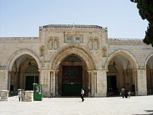

PROFEETTA MUHAMMEDIN ELÄMÄ
ESIPUHE
Allahin Armeliaan Armahtajan nimeen,
Kunnia Allahille, maailmojen Herralle Tuomiopäivän Ruhtinaalle. Ei ole muuta Jumalaa kuin yksin Hän. Samoin kuin Allah on siunannut Abrahamia ja hänen perhettään, siunatkoon Hän myös profeetta Muhammedia ja hänen perhettään. Ylhäinen on Allah ja Hänelle yksin kuuluu kaikki kunnia.
The Islamic Text Societylla (Islamilaisella oppimateriaaliyhdistyksellä) on ilo alkaa lastenkirjojensa sarja tällä profeetan (SAWS) elämänkerralla, aivan vastaavasti kuin se alkoi varsinaisen päätehtävänsä -islamilaisen oppimateriaalin julkaisemisen - tri Martin Lingsin kirjalla: Muhammad: his life based on the earliest sources ( Muhammed: hänen elämänsä varhaisimpien lähteitten valossa). Maailmassa, jossa uskonnon merkitys käy yhä vähäisemmäksi, The Islamic Text Society pitää elintärkeänä sitä, että lapset saavat käsiinsä kauniiden kirjojen muodossa esitettyä ja sisällöltään oikeata tietoa islamin perusteista. Valitettava tosiasia on, että kirjamarkkinoilta saa etsimällä etsiä pätevästi toimitettuja uskonnollisia kirjoja. Hyllyt ovat tosin pullollaan mielenkiintoisia kirjoja, mutta valtaosalla niistä on pelkkä maallinen tarkoitusperä.
Pääosin nämä kirjat ovat epäilemättä hyvässä tarkoituksessa tehtyjä, ja tarjoavat lapsille tarpeellista kasvatuksellista ja kulttuurista taustatietoa. Se tosiseikka, että nykyaikaisessa elämänmenossa uskonnolla on yhä vähenevä merkitys, kuvastuu myös lastenkirjojen vaatimattomassa uskonnollisessa annissa. Lapsille tarkoittamiensa kirjasarjojensa välityksellä toivoo The Islamic Text Society voivansa tuoda uskonnon entistä keskeisempään rooliin lasten elämässä.
The Islamic Text Society
Cambridge 1985
MITEN KAIKKI SAI ALKUNSA
Lähes neljätuhatta vuotta sitten, Eufrat- joen laaksossa sijainneessa sumerilaisessa Urin kaupungissa, eli nuori mies nimeltä Abraham. Urin väki oli aikoinaan palvellut Allahia, mutta ajan myötä he olivat unohtaneet oikean uskon ja alkaneet palvoa kuvapatsaita, puusta tai savesta, joskus jopa jalokivistä tehtyjä epäjumalankuvia. Pienestä pitäen ei Abraham ollut käsittänyt kuinka ihmiset, erityisesti hänen isänsä, saattoivat ensin omin käsin tehdä näitä kuvatuksia, nimetä ne sitten jumaliksi, ja alkaa palvoa niitä. Hän kieltäytyi aina lähtemästä mukaan niihin menoihin, joissa ihmiset palvoivat ja kunnioittivat noita kuvapatsaita. Hän tapasi sensijaan suunnata kulkunsa ulos kaupungista, ja istuskella siellä yksiksensä miettimässä taivaitten ja ympäröivän maailman kysymyksiä. Hän oli varma siitä, että heidän kansansa menetteli väärin. Yksinään hän jatkoi oikean tien etsintäänsä.
Eräänä kirkkaana tähtiyönä, hänen istuessaan tuijottelemassa taivasta, hän näki kauniisti kimmeltävän tähden. Tähti näytti hänestä niin kauniilta, että hän huudahti: 'Tuon täytyy olla Allah! Kunnioituksesta mykkänä hän tuijotti sitä aikansa, kunnes se yhtäkkiä alkoi himmetä, kadoten lopulta kokonaan. Hän kääntyi pois sanoen:
"...Minä en rakasta katoavaisia."
(Koraani 6:77).
Eräänä toisena yönä Abraham katseli jälleen taivaalle ja näki kuun nousevan. Se näytti niin kirkkaalta ja mahtavalla, että hänestä se vaikutti lähes käsin kosketeltavalta. Hän ajatteli itsekseen: "Tämä on Herrani" (Koraani 6:78) Ei kestänyt kovinkaan kauan kun kuu puolestaan meni mailleen. Silloin hän totesi: "Jos Herrani ei johdata minua, minäkin kuljen harhaan." (6:78) Abraham näki sittemmin auringonnousun kaikessa kauneudessaan ja loistossaan -ja päätyi siihen, että auringon täytyi olla koko maailmankaikkeuden suurin ja mahtavin asia. Mutta kolmannellakin kerralla hän hän huomasi erehtyneensä: aurinkokin laski aina päivän päätteeksi. Vasta silloin hän tajusi, että Allah on kaikkein Voimallisin. Hän on tähtien ja kuun, maan ja auringon sekä kaiken elollisen Luoja. Hetkessä rauha täytti hänen mielensä, sillä hän tiesi löytäneensä Totuuden.
"Kerro heille myös Aabrahamin tarina. Kun hän puhui isälleen ja
kansalleen: »Ketä te palvelette?» he vastasivat: »Me palvelemme jumalankuvia ja aiomme
pysyä niille uskollisina.» Hän kysyi: »Kuulevatko ne, kun te niitä rukoilette? Tai onko
niistä teille hyötyä tai vahinkoa?» He vastasivat: »Ei, mutta näimme esi-isiemme niin
tehneen.» Hän sanoi: »Oletteko sitten ajatelleet, mitä te oikeastaan palvelette, te ja
teidän muinaiset esi-isänne? Sillä totisesti, ne ovat minun vihollisiani kaikki tyynni;
mutta ei maailmojen Herra, Hän, joka minut loi ja antoi sitten johdatuksensa. Hän joka
antaa minulle syötävää sekä juotavaa.Ja sairastaessani Hän parantaa minut. Hän, joka
saattaa minut kuolemaan ja sitten antaa minulle elämän. Ja joka toivoni mukaan antaa
anteeksi syntini tuomiopäivänä."
(Koraani 26:69-82).
Eräänä päivänä, kun kaupunkilaiset olivat poissa paikalta, Abraham vimmoissaan pirstoi epäjumalankuvat oikealla kädellään. Yhden, kaikkein suurimman, hän säästi. Kun väki palasi, se raivostui näkemästään. He muistivat mitä Abraham oli kuvapatsaista mieltä. He tuotattivat hänet eteensä ja tivasivat:
"Sinäkö teit tämän jumalillemme, Abraham?" Hän vastasi: "En vaan suurin niistä sen teki, kysykää vaikka niiltä, jos ne kerran osaavat puhua'." Väki vastasi (riiputtaen päätään): " Tiedäthän sinä, etteivät nämä osaa puhua." Abraham kysyi: "Palvotteko te patsaita, joita olette omin käsin veistäneet, vaikka Allah on luonut niin teidät kuin sen mitä olette tehneet?" Abraham jatkoi: "Palvotteko te Allahin sijasta sellaisia, jotka eivät voi teitä auttaa eivätkä haitata." (Koraani 37:95-96 ja 21:66)
Lopuksi Abraham varoitti heitä,
"Palvokaa Allahia ja pelätkaa Häntä. Se on teille parasta . Kunpa vain
tietäisitte. Ne, joita te palvotte Allahin lisäksi, ovat vain epäjumalankuvia. Te
sepitätte valheita; ne, joita te palvotte Allahin lisäksi, eivät voi teitä ruokkia
Tavoitelkaa osaanne Allahilta ja palvokaa ja kiittäkää Häntä. Hänen luokseen teidän on
palattava.
(Koraani 29:16-17).
Urin asukkaat päättivät rangaista Abrahamia pahimmalla rangaistuksella, jonka tunsivat: hänet poltettaisiin elävältä. Määrättynä päivänä koko Urin väki kuninkaansa johdolla kerääntyi kaupungin keskustaan. Abraham tel jettiin erityiseen, polttopuilla täytettyyn rakennukseen. Puut sytytettiin. Hetkessä liekit roihusivat sellaisella voimalla, että väen piti väistyä taaemmaksi. Mutta Allah antoi määräyksen:
"Tuli ole viileä ja vilpoinen Abrahamille."
(Koraani 21:69).
Väki vartoi kunnes liekit olivat sammuneet. Silloin he havaitsivat Abrahamin istuvan rakennuksessa aivan kuin mitään ei olisi tapahtunut! Kotvan aikaa he olivat ymmällään. Ihme, jota he omin silmin olivat todistamassa, ei kuitenkaan saanut heitä muuttamaan mieltään. Abraham puolestaan yritti taivutella isäänsä, nimeltään Azar, olemaan palvomatta noita voimattomia, mitään näkemättömiä ja kuulemattomia kuvatuksia. Abraham kertoi miten oli saanut tietoa, jota isällä ei ollut. Samalla hän vannotti isäänsä hartaasti:
"Seuraa minua, niin minä johdatan sinut oikealle tielle. Isä älä palvo
Saatanaa. . . " Hänen isänsä kieltäytyi kuuntelemasta. Hän päinvastoin uhkasi
kivittämisellä poikaansa, mikäli tämä jatkaisi Urin epäjumalien hyljeksintää. Hän käski
Abrahamia jättämään kaupungin, sanoen: "Ellet herkeä, kivitän sinut ja ajan pois pitkäksi
ajaksi. " Abraham vastasi: "Rauha sinulle! Pyydän puolestasi anteeksi Herraltani. Hän on
minulle alati hyvä.
(Koraani 19:43-47).
Vuodet vierivät, mutta Abrahamille ja hänen vaimolleen ei siunaantunut jälkeläistä. Kuten perinteeseen tällaisessa tapauksessa kuului, Saara ehdotti, että Abraham naisi Hagarin, hänen egyptiläisperäisen palveli j attarensa. Säädetyn ajan kuluttua Hagar synnytti pojan, joka nimettiin Ishmailiksi. Jonkin aikaa myöhemmin, Allah lupasi Abrahamille toisenkin pojan.Tällä kertaa lapsen äiti olisi Saara, hänen ensimmäinen vaimonsa. Toinen poika sai nimekseen Iisak. Allah ilmaisi Abrahamille, että hänen kummastakin pojastaan - Ishmailista ja Iisakista - saisi alkunsa kaksi eri kansakuntaa ja kolme eri uskontoa. Jotta tämä olisi mahdollista, hänen tuli viedä Hagar ja Ishmael pois Palestiinasta, toiseen maahan. Näissä tapahtumissa toteutui Allahin tärkeä suunnitelma, joka koski Ishmaelin jälkeläsiä: näistä oli tuleva kansakunta, jonka parista oli nouseva suuri profeetta, joka johdattaisi ihmiskuntaa seuraamaan Allahin tietä. Profeetta tuli olemaan Muhammed, Allahin lähettiläs (SAWS) . Saaran pojan jälkeläisistä oli puolestaan nouseva sekä Mooses että Jeesus.
Niin suuntasivat Abraham, Hagar ja Ishmail pois Palestiinasta. He matkasivat päiväkausia, kunnes lopulta saapuivat rutikuivaan akkan laaksoon (myöhemmin Mekka), jonka kautta kulki merkittävä karavaanireitti. Laaksossa ei ollut jälkeäkään vedestä. Siitä huolimatta Abraham jätti Hagarin ja Ishmailin pienen vesivarastonsa kanssa laaksoon. Hän oli varma siitä, että Allah pitäisi heistä huolen. Eipä aikaakaan kun vesi oli lopussa. Lapsi alkoi voipua janosta. Laakson laitamilla oli kaksi kukkulaa: Safaa' ja Marwa. Hagar nousi toiselle kukkuloista nähdäkseen olisiko vettä mistään löydettävissä -merkkiäkään siitä ei näkynyt. Hän kiipesi toisellekin kukkulalle, samoin aikein -ja samoin tuloksin. Seitsemän kertaa hän kulki kukkuloitten väliä, palatakseen murheissaan poikansa luokse. Suureksi hämmästyksekseen ja ilokseen hän huomasi lähteen pulppuamassa maan pinnassa lähellä pojan olinpaikkaa. Äiti ja poika asettuivat tämän lähteen tuntumaan. Lähde sai myöhemmin nimen Zamzam. Sitä ympäröivästä alueesta tuli merkittävä karavaanien levähdyspaikka, niiden matkatessa laakson halki. Paikasta kehittyi aikaa myöten Mekan kuuluisa kauppakaupunki.
Aika ajoin, ratsasti Abraham Palestiinasta perheensä luokse ja saattoi todeta, että Ishmail oli varttumassa vahvaksi nuorukaiseksi. Erään vierailukerran yhteydessä Allah määräsi heidät entisöimään Ka^an – saattamaan ennalleen se paikka, jossa ihmiset ensimmäistä kertaa olivat palvoneet Allahia. He saivat tarkat ohjeet siitä, mihin paikkaan ja millaiseksi se tuli rakentaa. Se tuli rakentaa Zamzam-lähteen äärelle ja kuution muotoon. Sen itäiseen reunaan tuli asettaa musta, taivaalta maahan tippunut, kivi. Enkelin kerrotaan tuoneen sen läheiseltä Abu Qubaysin kukkulalta. Abraham ja Ishmail työskentelivät ahkerasti rakentaakseen Ka’ban jälleen. Sitä tehdessään he rukoilivat Allahia nostamaan profeetan heidän jälkeläistensä joukosta. Abraham laski temppelin perustan yhdessä Ishmaelin kanssa:
'Herramme, ota tämä meiltä vastaan! Sinä olet Kuuleva, Tietävä.
Herramme, anna meidän olla Sinulle alistuvia ja tee jälkeläisistämme yksi, Sinulle
alistuva kansakunta, ja näytä meille meidän pyhät tapamme ja ole meille Armollinen,
Säälivä. Herramme, lähetä jälkeläisillemme profeetta heidän omasta joukostaan lukemaan
heille Jakeitasi ja opettamaan Kirjaa ja viisautta sekä puhdistamaan heidät, sillä Sinä
olet Mahtava, Viisasi!
(Koraani 2:127-129).
Kun Ka'ba oli valmis Allah määräsi Abrahamin kutsumaan koko ihmiskunnan pyhiinvaellukselle pyhään temppeliinsä. Abraham kummasteli kuinka kukaan saattaisi kuulla hänen kutsuaan. Allah ilmoitti: 'Sinä vain kutsut ja Minä tuon heidät.' Tällä tavalla pyhiinvaellus Mekan Ka'baan sai alkunsa. Kun muslimit kaikkialta maailmasta saapuvat pyhiinvaellukselle, he noudattvat Abrahamin ikimuistoista kutsua.
ISHAMAILIN JÄLKELÄISET
Vuodet vierivät ja Ishmailin lapset saivat lapsia. Hänen jälkeläistensä määrä kasvoi ja heistä muodostui heimoja, jotka levittäytyivät yli koko Arabian. Erästä näistä heimoista oli nimeltään Qureish. Sen jäsenet eivät koskaan muuttaneet pois Mekasta ja he asustivat Ka'ban lähistöllä. Qureishilaisten päämiehen tehtäviin kuului huolehtia Ka'baan saapuvista pyhiinvaeltajista. Pyhiinvaeltajia saapui kautta koko Arabian. Oli suuri kunnia saada tarjota heille ruokaa ja vettä. Ajan myötä arabit kuitenkin lakkasivat palvomasta suoraan Allahia. Matkoiltaan kaukaisista maista, he toivat mukanaan epäjumalankuvia, jotka sijoitettiin Ka’ban. Sitä ei tuolloin enää voitu pitää Allahin pyhäkkönä, jollaiseksi Abraham sen oli tarkoittanut. Arabit kuitenkin kunnioittivat paikkaa. Aikojen kuluessa Zamzamin lähde vähitellen hautautui hiekkaan. Tuli sitten aika QuSayi nimisen qureishilaispäällikön astua Mekan johtoon. Hänen hallussaan olivat temppelin avaimet ja samalla hänelle kuului kunnia tarjota vettä ja ruokaa pyhiinvaeltajille. Hän johti kokouksia ja kannatteli sotaviiriä taisteluun käytäessä. Hänen talossaan qureishilaiset hoitivat asiansa. QuSayin kuoltua hänen poikansa nimeltä
Abdu Manaf, nousi valtaan. Hän oli saavuttanut kuuluisuutta jo isänsä eläessä. Häntä taas seurasi poikansa Hashim.
Hashimista kerrotaan, että hän olisi ollut mies, joka pani alulle qureishilaisten molemmat vuotuiset karavaanit: pohjoiseen suuntauneen kesäkaravaanin Syyriaan ja etelään suuntautuneen talvikaravaanin Jemeniin. Näiden seurauksena Mekasta tuli rikas ja merkittävä kauppakeskus.Eräänä kesänä, Hashim lähti Syyriaan ostaakseen tavaraa myytäväksi Jemeniin. Matkallaan hän pysähtyi Yathribiin ja näki siellä kuvankauniin naisen. Tämän nainen oli 'Amr ibn Zeidin tytär, Saima. Hän kuului kunnioitettuun sukuun. Haashim ehdotti avioliittoa hänen kanssaan ja ehdotukseen mielihyvin suostuttiin, olihan hän arvostettu ja kunniallinen mies. Ajan . täytyttyä, Saima synnytti komean pojan. Koska pieni haituva tämän hiuksissa oli valkoinen, poika sai nimekseen Shaybah (arabiassa = harmaatukka). Äiti ja poika asustelivat ilmanalaltaan Mekkaa viileämmässä ja terveellisemmässä Yathribissa. Isä puolestaan palasi Mekkaan, mutta vieraili perheen luona aina matkatessaan karavaaninsa kanssa pohjoiseen. Eräällä tällaisella matkalla Hashim sairastui ja kuoli.
Shaybah, tuo älykäs ja miellyttävä poika, varttui suureksi enonsa talossa Yathribissa. Hän oli ylpeä isästään Hashim ibn Manafista, qureishilaisten päämiehestä, Ka'ban vartijasta ja pyhiinvaeltajien suojelijasta, vaikka tuskin edes itse muisti isänsä ulkomuotoa, olihan tämä kuollut hänen ollessaan vielä pieni. Haashimin kuoltua oti hänen veljensä, Al-Muttalib vastuulleen päämiehen velvoitteet ja vastuut. Tämä matkusti Yathribiin katsomaan veljenpoikaansa, Shaybahia. Pojan nähtyään hän päätti, että tämä saisi aikanaan periä isänsä paikan. Pojan oli aika muuttaa setänsä luokse Mekkaan. Salman oli vaikeata luopua pojasta ja päästää tätä setänsä matkaan. Aikansa itsensä kanssa kamppailtuaan, hän kuitenkin taipui ajatukseen ja totesi sen olevan poikaa ajatellen parasta. Kun Al-Muttalib puoliltapäivin palasi seuralaisineen Mekkaan. Poika istui hänen takanaan, saman kamelin selässä. Mekkalaiset luulivat poikaa orjaksi ja nimittivät tämän 'Abd Al-Muttalibiksi (arabiassa 'Abd = orja, ts Muttalibin orjaksi). Hänen setänsä kyllä oikaisi väärinkäsityksen, todeten, että Shaybah ei suinkaan ollut orja, vaan veljenpoika, joka oli tullut jäädäkseen heidän luokseen. Siitä huolimatta, ihmiset vaistomaisesti alkoivat kutsua poikaa 'Abd Al-Muttalibiksi.
Al-Muttalibin kuoltua Jemenin matkalla, 'Abd Al-Muttalib otti tämän paikan. Hänestä tuli sukunsa arvostetuin edustaja, kaikkien ihailema ja rakastama. Hän ei kuitenkaan kuulunut niihin arabeihin, jotka olivat hylänneet Abrahamin opetukset.
ZAMZAM-LÄHTEELLÄ ANNETTU LUPAUS
Zamzam-lähde hävisi näkyvistä samoihin aikoihin kuin arabit alkoivat pystyttää epäjumalien kuvia Ka’baan, ja pitkään lähde pysyikin hiekan peitossa. Vuodesta toiseen saivat qureishilaiset raahata vetensä pitkien matkojen takaa. ^Abd Al-Muttalib sai eräänä päivänä tarpeekseen työstä ja nukahti Ka'ban viereen. Hän näki unen, jossa häntä käskettiin kaivamaan Zamzam esiin. Kun hän sitten heräsi unestaan, oli hän ymmällään, sillä ei tiennyt mistä Zamzamia olisi etsittävä; olihan lähde hautautunut jo aikoja ennen hänen syntymäänsä. Seuraavana päivänä hän näki samanlaisen unen. Tällä kertaa hänelle myös kerrotiin mistä sitä tulisi etsiä. 'Abd Al-Muttalibilla oli niihin aikoihin yksi poika, jonka kanssa hän alkoi kaivaa.
Työ osoittautui niin hankalaksi, että 'Abd Al-Muttalib vannoi valan, että jos hänellä eräänä päivänä olisi kymmenen poikaa rinnallaan, hän uhraisi näistä yhden Allahin kunniaksi. Kolme päivää huhkittuaan he lopulta löysivät Zamzamin lähteen. Pyhiinvaeltajat ovat siitä lähtien nauttineet lähteen vettä.Vuodet kuluivat ja aikanaan 'Abd Al-Muttalibilla oli kuin olikin kymmenen poikaa. Näistä kasvoi komeita ja vahvoja miehiä. Hänelle koitti aika unastaa Allahille antamansa lupaus. Hän kertoi pojilleen antamastaan lupauksesta ja nämä myöntyivät ajatukseen, että yksi heistä olisi uhrattaa. Kenelle tuo osa kuuluisi, katsottiin - qureishilaisten vanhan tavan mukaan - arvalla. 'Abd Al-Muttalib käski kutakin pojistaan ottamaan nuolen ja kirjoittamaan siihen nimensä sekä palauttamaan sen sitten hänelle. Niin he sitten kaikki tekivät. Tämän jälkeen nuolet vietiin Ka’baan, jossa ne annettiin miehelle, jonka tiesi kuinka heittää nuolet ja erottaa niistä se kohtalokas. Juhlallisesti kävi mies toimeensa. Kohtalokas nuoli kuului 'Abd Allahille, Abd Al-Muttalibin nuorimmaiselle ja suosikkipojalle. Niinpä isän oli vietävä poikansa Ka'ban eteen ja valmistauduttava uhraamaan tämä.
Useimmat läsnäolleista qureishilaisten johtajista suuttuivat aikeesta, olihan poika vielä nuori ja kaikkien suuresti rakastama. He aprikoivat kuinka pelastaa pojan elämä. Joku keksi ehdottaa, että haettaisiin neuvoa Yathribissa asuvalta tietäjänaiselta. Niin lähti 'Abd Al- Muttalib poikansa kanssa kysymään neuvoa ja ratkaisua tuolta vanhalta naiselta. Muutamia mekkalaisia lähti heidän mukaansa. Heidän päästyään naisen puheille, tämä kysyi: "Mikä on korvaus miehen hengestä?" Mekkalaiset vastasivat: "Kymmenen kamelia. " Niihin aikoihin oli sääntönä antaa kymmenen kamelia korvaukseksi miestaposta kuolleen suvulle. Tällä pyrittiin säilyttämään sukujen välinen rauha. Tietäjänainen käski heitä palaamaan Ka'baan ja vetämään arpaa 'Abd Allahin ja kymmenen kamelin kesken. Jos arpa lankeaisi kameleille, ne teurastettaisiin ja niiden liha jaettaisiin köyhille. Mikäli arpa osuisi 'Abd Allahille, lisättäisiin peliin kymmenen lisäkamelia ja vedettäisiin uudestaan arpaa. Arvan vetämistä jatkettaisiin lisäämällä kameleita aina siihen asti kunnes arpa lopulta lankeasisi kameleille. Niine hyvineen palasi 'Abd Al-Muttalib Kalaan. Siellä he alkoivat uudestaan arpojen vetämisen 'Abd Allahin ja aluksi kymmenen kamelin kesken. 'Abd Al-Muttalib rukoili Allahia säästämään pojan, Silläaikaa kun kaikki muut hiirenhiljaa odottivat minkä tuloksen nuolet toisivat. Arpa lankesi taaskin 'Abd Allahille, ja isä kasvatti panosta kymmenellä kamelilla. Taas koetettiin onnea - ja samoin tuloksin: arpa lankesi 'Abd Allahille. Kameleita lisättiin ja arvonta uusittiin. Näin jatkui kunnes kamelien luku nousi sataan: vasta silloin arpa lankesi kameleille. 'Abd Allah pelastui ja kaikki olivat iloisia. 'Abd Al-Muttalib halusi kuitenkin varmistua tuloksen oikeellisuudesta, niinpä hän koetti vielä kolmesti - ja joka kerta arpa osui kameleille. Silloin hän kiitti Allahia siitä, että Tämä oli säästänyt pojan hengen. Sitten uhrattiin kamelit ja ruokaa riitti koko kaupungille, jopa koirille, linnuille ja villieläimille. 'Abd Allahista varttui komea nuorukainen, jonka vaimoksi hänen isänsä (todennäköisesti) valitsi Aminan, Wahabin tyttären. Se oli onnistunut valinta, sillä kuuluihan vaimo qureishilaisnaisten hienostoon ja 'Abd Allah miehistä parhaimpiin. Hän eleli useita kuukausia vaimonsa kanssa, ennenkuin joutui lähtemään karavaaninsa kanssa Syyriaan.
Paluumatkallaan Syyriasta Mekkaan, hän sairastui ja pysähtyi toipuakseen Yathribiin. Karavaani palasi Mekkaan ilman häntä. Kuultuaan poikansa sairaudesta, 'Abd Al-Muttalib lähetti toisen poikansa, Haarithin hakemaan miestä kotiin. Se oli kuitenkin myöhäistä: kun tämä saapui Yathribiin/ oli 'Abd Allah jo kuollut. Aminan sydän melkein murtui hänen menetettyään aviomiehensä ja tulossa olevan lapsensa isän. Vain Allah tiesi, että syntyvästä orvosta olisi vielä eräänä päivänä tuleva suuri profeetta.
ELEFANTTI KIELTÄYTYI LIIKKUMASTA
Abrahah Jemenin sijaishallitsija, oli alkujaan Afrikasta, tarkemmin sanottuna Abessiniasta. Hän valloitti Jemenin ja siitä hyvästä hänestä tuli sen sijaishallitsija, varakuningas. Ajan myötä hän pani merkille, että tiettyyn aikaan vuodesta joukoittain ihmisiä suuntasi Jemenistä ja koko Arabiasta kohti Mekkaa. Kysyttyään syytä moiseen, hän sai tietää, että kyseessä oli pyhiinvaellus Ka'baan. Abrahah ei voinut sietää ajatusta, että Mekka olisi tärkeämpi paikka kuin hänen oma valtakuntansa. Niinpä hän rakennutti upean kirkon, marmorilla verhoillun, jonka ovet olivat kultaa ja koristeet hopeaa. Hän käski ihmisten vierailla Mekan asemesta siellä - laihoin tuloksin, monikaan ei häntä totellut. Abrahah raivostui tästä, ja päätti tuhota Ka’ban. Hän kokosi suuren sotajoukon, joka kärjessään elefantti suuntasi kohti Mekkaa. Kun mekkalaiset kuulivat heidän tulostaan, he pelästyivät. Abrahahin armeija oli niin valtava, ettei heillä ollut tarjota sille vastusta. Miten he toisaalta voisivat sallia tämän tuhota Pyhän Ka'ban? He kääntyivät johtajansa, Abd Al-Muttalibin puoleen neuvoa saadakseen. Kun Abrahah saapui Mekan ulkopuolelle, Abd Al-Muttalib meni tapaamaan häntä. Abrahah kysyi: "Mitä asiaa?" Abrahah oli Mekkaa lähestyessään ottanut Abd Al-Muttalibin laitumella käyskennelleet kamelit haltuunsa. Abd Al-Muttalib vastasi: "Haluan kamelini takaisin." Abrahah oli ymmällään ja hämmästeli: "Minä olen tullut tuhoamaan koko Ka'ban -ja sinä vain kysyt kameliesi perään?" Abd Al-Muttalib vastasi rauhallisesti: "Kamelit kuuluvat minulle; Ka'ba taas kuuluu Allahille, Hän on itse suojeleva omaansa." Sitten hän lähti Abrahahin luota ja palasi qureishilaisten luokse, määräsi nämä jättämään Mekan ja odottamaan vihollista vuorilla. Aamun valjettua Abrahah valmistautui työntymään kaupunkiin. Hän puetutti suojavarusteet elefanttinsa ylle ja johti joukkonsa taisteluun. Hänen tarkoituksenaan oli käydä tuhoamassa Ka'ba ja palata sitten Jemeniin. Sillä hetkellä elefantti kuitenkin kieltäytyi liikahtamasta haluttuun suuntaan, se laskeutui maahan eikä suostunut sotilaitten maanitteluista ja lyönneistä huolimatta nousemaan. Kun sen pää käännettiin Jemenin suuntaan, se kohottautui välittömästi ja lähti siihen suuntaan. Sitä yritettiin saada kulkemaan eri ilmansuuntiin, mutta aina kun sitä ohjattiin Mekan suuntaan, se kävi polvilleen maahan. Yht/äkkiä ilmaantui mereltäpäin lintuparvia. Kukin lintu kantoi mukanaan kolmea kummallista pavunkokoista kiveä, jotka ne pudottivat Abrahahin armeijan ylle. Sotilaat sairastuivat äkillisesti. Itse Abrahahkin sai osumia kivistä ja pakeni kauhuissaan sekasortoisen armeijansa keskellä Jemeniin, jossa myöhemmin kuoli. Nähdessään vihollisen pakenevan arabit laskeutuivat vuorilta ja kiittivät Allahia.Tapahtuman jälkeen qureishilaiset saivat lisää arvostusta osakseen, heitä alettiin pitää 'Allahin kansana'. Tämä tapahtui vuonna 570 jKr, jota alettiin siitä syystä kutsua Elefantin vuodeksi'. Sinä vuonna Allah varjeli Ka'ban ja oli myös tuottavan profeetan qureishilaisten parista.
ALLAHIN, ARMELIAAN ARMAHTAJAN NIMEEN.
"Etkö tiedä, mitä Herrasi teki norsun väelle? Eikö Hän tehnytkin heidän juonensa tyhjäksi
ja lähettänyt parvittain lintuja heidän päälleen heittämään heitä merkityillä kivillä ja
tehnyt heistä kuin katkottuja korsia?"
(Koraani 105).
PROFEETTA ON SYNTYNYT
Erään kerran kun Mekan arabit olivat matkallaan pohjoisessa he tapasivat erämaassa erakon. Jotkut miehistä pysähtyivät juttelemaan tämän kanssa. Erakot tunnettiin viisaudestaan ja arabit tapasivat kysyä heiltä neuvoa. Erakko kysyi heidän kotipaikkaansa. Kun he kertoivat tulevansa Mekasta, kertoi hän heille, että Allah olisi pian lähettävä profeetan, joka olisi lähtöisin heidän kansastaan. Miehet kysyivät erakolta profeetan nimeä. Tämä kertoi sen olevan Muhammed, ja että hän tulisi johdattamaan heidät uuteen elämäntapaan. Samanaikaisesti Mekassa, Amina, vaikkakin murheissaan miehensä kuolemasta, tunsi itsensä lastaan odottaessaan vahvaksi ja hyvinvoivaksi. Tuona aikana hän näki monenlaisia ja merkitseviä unia. Erään kerran hän näki kirkkaan valon paistavan ylleen; toisella kerralla ääni unessa kertoi hänelle, että hän saisi pojan, jonka nimeksi tulisi Muhammed. Eikä hän koskaan unohtanut sitä, mitä ääni hänelle oli kertonut. Hän piti kuitenkin tiedon omanaan.
Elettiin maanantaita, Rabi Al-Awwaal-kuun 12.päivää. Elefantin vuonna, kun Amina synnytti pojan. Allah lähettää moninaisia merkkejä osoittamaan profeettojensa syntymää. Niin myös Rabi Al-Awwaal-kuun 12. päivä vuonna 570, oli päivä, jolloin sellaiset merkit ilmenivät. Joitakin niistä näkivät juutalaiset oppineet, jotka olivat kirjoituksistaan lukeneet tulevasta profeetasta. Eräs näistä oppineista näki Yathribin yllä kirkkaan tähden, senkaltaisen, jota ei koskaan ennen tähtitaivasta tutkiessaan ollut nähnyt. Hän kuulutti ilmiöstä naapureilleen, ja tähteä osoittaen kertoi sen merkitsevän sitä, että profeetan on täytynyt syntyä. Samana iltana muuan toinen juutalainen kulki Qureishin johtomiesten kokouspaikan ohi. Hän kysyi näiltä, oliko siellä mahdollisesti syntynyt poikalapsi; mikäli näin olisi, hän jatkoi, siitä oli tuleva Arabian profeetta.
Amina lähetti viestin pojan syntymästä 'Abd Al-Muttalibille, joka tapansa mukaan istuskeli Ka’ban lähistöllä. Hän oli uutisesta hyvin iloinen ja alkoi heti kuumeisesti miettiä sopivaa nimeä pojalle. Mikään tavanomainen nimi ei tulisi kyseeseen. Kuusi päivää meni menojaan ja vieläkään hän ei ollut kyennyt päättämään nimestä. Vasta seitsemäntenä päivänä, torkahdettuaan Ka'ban läheisyyteen, 'Abd Al-Muttalib näki unta, että hänen tuli antaa pojalle varsin epätavallinen nimi: Muhammed. Juuri sama nimi, josta Aminakin oli nähnyt unta. Niin lapsi sitten sai nimen Muhammed (SAWS), joka suomeksi tarkoittaa Ylistetty. Kun 'Abd Al-Muttalib sitten ilmoitti qureishin johtajille pojanpojalleen antamansa nimen, nämä hämmästelivät: "Miksei pojalle voitu antaa jotakin meidän parissamme tavanomaisempaa nimeä?" Hän vastasi suoralta kädeltä: "Haluan, että sekä Allah taivaassa että ihmiset maan päällä tulevat ylistämään häntä."
HALIMAN LUONA VIETETTY AIKA
Kuten useat muutkin Mekan naiset, Aminakin päätti lähettää poikansa pois kaupungista varttumaan terveellisessä erämaaelämän parissa. Erämaiden naiset pitivät tapanaan tulla Mekkaan hakemaan uusia kasvattilapsia, joita he pitivät kunnes näistä varttui voimakkaita vesoja. Siitä hyvästä kaupunkilaisvanhemmat maksoivat heille hyvin. Aminan pojan syntymän aikoihin, Mekkaan kasvattilapsia hakemaan tulleitten joukossa oli beduiininainen nimeltä Halima. Hän saapui aviomiehensä ja oman poikavauvansa kera. He olivat aina eläneet köyhyydessä, mutta silloin juuri oli sattunut katovuosi ja heidän elämänsä oli entistäänkin vaikeampaa. Aasi, jolla Halima ratsasti oli nälästä niin heikko, että se kompasteli matkalla. Haliman oma poika kirkui nälkäänsä, sillä äiti ei kyennyt ruokkimaan sitä kunnolla. Heidän naaraskamelistaankaan ei herunut maidon tippaa. Halima ei tiennyt mitä tehdä. Hän pohdiskeli itsekseen: 'Miten voin ruokkia toista lasta kun omanikaan ei saa tarpeeksi maitoa.' Lopulta he pääsivät Mekkaan. Kaikki muut heidän heimonsa (bani Sa'din) naiset löysivät kasvattilapsen mukanaan vietäväksi, Halimaa vaan ei onnistanut. Ainoa tarjolle jäänyt lapsi oli Muhammed (SAWS). Tapa oli, että lapsen isä maksoi kasvatusäidille - mutta Muhammedin isä oli kuollut. Kukaan ei halunnut poikaa, vaikka tämä kuuluikin Qureishin ylimystösukuun. Eikä Halimakaan olisi halunnut häntä. Toisaalta hän ei halunnut olla ainoa heimonsa nainen, joka palaisi tyhjin toimin. Hän kysyi aviomieheltään neuvoa: ottaako pojan vai ei? Mies neuvoi tätä ottamaan, lisäten: 'Ehkäpä Allah on siunaava meitä hänen kauttaan.' Niin he lähtivät matkaan. Kun Halima sitten alkoi imettää Muhammedia (SAWS), hänen hämmästyksekseen maidontulo kasvoi niin, että sitä oli yllinkyllin myös hänen omalle lapselleen. Kun he vihdoin pääsivät takaisin kotikonnuilleen, kaikki alkoi muuttua paremmaksi. Maa alkoi vihertää, ja taatelipuut tuottivat runsaasti hedelmää (heidän pääravintoaan). Vuohet ja jopa vanha naaraskamelikin alkoivat erittää runsain mitoin maitoa. Halima ja hänen aviomiehensä tajusivat, että heidän hyvä onnensa oli tullut kasvattilapsen, Muhammedin, myötä. Tätä poikaa he tulisivat rakastamaan kuin omaansa. Kun Muhammed (SAWS) oli kaksivuotias, Halima vei hänet takaisin äidilleen. Hän kuitenkin pyysi lupaa pitää poikaa hieman pidempään. Suuri oli hänen ilonsa, kun tämän äiti suostui. Arolla Haliman luona ollessaan, Muhammed (SAWS) leikki kasvattisisarustensa kanssa ja oli paimentamassa lampaita. Toisinaan Halima saattoi tavata pojan istuskelemassa yksinään. Kerrotaan myös, että eräässä yhteydessä, kaksi enkeliä olisi tullut ja pessyt Muhammedin sydämen lumella. Näin Allah olisi puhdistanut Muhammedin (SAWS) sydämen, tehdäkseen hänestä merkittävämmän kuin kenestäkään toisesta tähän maailmaan syntyneestä, olihan hän oleva profeetoista viimeinen, näiden sinetti.
Allahin Armeliaan Armahtajan nimeen
"Emmekö huojentaneet rintaasi ja laskeneet pois taakkaa,joka oli murtaa selkäsi, ja
emmekö korottaneet mainettasi? Vaikeutta seuraa helpotus, niin, vaikeutta seuraa
helpotus. Kun olet valmis, ponnistele ja kilvoittele Herraasi kohti.
(Koraani 94).
Kun Halima sitten vihdoin vei Muhammedin (SAWS) takaisin Aminan luokse, hänestä oli varttunut vanttera ja terhakka poika. Jälkeenpäin hän tapasi muistella ilolla Haliman luona viettämäänsä aikaa. Hän katsoi myös tavallaan kuuluvansa bani Sa'din klaaniin.
ORVON LAPSUUS
Muhammed (SAWS) palasi asumaan äitinsä luokse ollessaan noin kolmevuotias. Kolme vuotta myöhemmin, Amina päätti viedä poikansa eno j aan tapaamaan Yathribiin. Hän käski orjatartaan, arakahia laittamaan kaiken pitkälle matkalle tarpeellisen valmiiksi. He lähtivät erään, siihen suuntaan menevän karavaanin matkaan. He viipyivät Yathribissa kuukauden päivät. Muhammed (SAWS) nautti tästä vierailustaan serkkujensa luona. Ilmasto oli siellä miellyttävä, ja siellä hän oppi uimaan ja lennättämään leijaa. Paluumatkalla Mekkaan Amina sairastui ja kuoli. Hänet haudattiin Al-Abwan kylään, joka ei ole klovinkaan kaukana Yathribista. Suruissaan Muhammed (SAWS) palasi äitinsä orjattaren mukana Mekkaan. Hän oli vasta kuusivuotias ja yksin, ilman isää ja äitiä maailmassa. Hänen isoisänsä, 'Abd Al- Muttalib otti hänet hoiviinsa. Isoisä oli syvästi kiintynyt poikaan ja kuljetti tätä mukanaan aina ja kaikkialle. 'Abd Al-Muttalibilla oli tapana istuskella peitteellään Ka'ban lähellä. Siellä hänen ympärillään oli aina väkeä jututtamassa häntä. Kenelläkään ei ollut lupaa istahtaa hänen vierelleen peitteelle poikkeuksen teki pojanpoika Muhammed (SAWS), joka osoittaa kuinka läheisiä he olivat toisilleen. Monasti 'Abd AL- Muttalibin kuultiin sanovan: "Tästä pojasta tulee vielä eräänä päivänä merkkimies."
Kaksi vuotta myöhemmin, 'Abd Al-Muttalib sairastui vakavasti. Muhammed (SAWS) pysytteli jatkuvasti tämän luona. 'Abd Al- Muttalib pyysi poikaansa, Abu Talibia adoptoimaan Muhammedin (SAWS). Tällä oli jo entuudestaan useita omia lapsia, mutta Muhammedista (SAWS) tuli hetkessä perheen jäsen ja kaikkien suuri suosikki. Koitti taas aika qureishilaisten lähteä karavaaneineen Syyriaan. Abu Talib oli myös lähdössä matkalle ja otti Muhammedin (SAWS) mukaansa. Tämä oli Muhammedin (SAWS) ensimmäinen matka niin pohjoiseen. Päiväkausia matkattuaan he saapuivat Syyrian tuntumassa olevaan paikkaan, jonne roomalaisilla oli tapana tulla käymään kauppaa arabien kanssa. Tämän kauppapaikan lähistöllä asui muuan munkki nimeltä Bahira. Tämän munkkikammio oli ennen häntä ollut jo monien munkkipolvien asuttama. Niinpä sinne oli kertynyt vanhoja käsikirjoituksia.
Bahira näki karavaanin tulon jo kaukaa. Häntä kummastutti karavaanin yllä oleva isohko valkea pilvi. Pilvi oli kummajainen muutoin pilvettömällä taivaalla: se näytti varjostavan jotakin tiettyä matkustajaa. Erityisesti munkkia ihmetytti se, että pilvi koko ajan seurasi karavaania, mutta katosi aina siksi ajaksi kun sen varjostama henkilö istahti puiden varjoon. Bahira tiesi kirjoitusten perusteella, että Jeesuksen jälkeen oli tuleva uusi profeetta. Tämän profeetan hän halusi ennen kuolemaansa vielä tavata. Tajuttuaan juuri nähneensä ihmeen hänessä heräsi odotus, että hänen harras toiveensa sittenkin toteutuisi. Munkki lähetti mekkalaisille kutsun tulla aterialle kanssaan. Arabit olivat ymmällään, sillä olivathan he usein matkanneet Bahiran ohitse, eikä tämä koskaan aikaisemmin ollut kutsunut heitä vieraikseen. Kun joukko siten asettui paikoilleen aterialle, munnki kysäisi: "Tässäkö ovat kaikki?" "Ei ihan", joku totesi, "yksi poikanen jäi vartioimaan kameleita." Bahira vaatimalla vaati, että pojan oli myös tultava mukaan. Tämä poikanen oli Muhammed (SAWS). Kun tämä saapui paikalle munkki ei aluksi virkkanut mitään, tarkkaili ainoastaan tätä koko aterian ajan. Hän huomioi monia asioita tämän käyttäytymisessä, jotka sopivat yhteen vanhoissa käsikirjoituksissa esitettyjen kuvausten kanssa. Myöhemmin, hän otti pojan erilleen ja kysyi tältä monenmoisia kysymyksiä. Hänelle selvisi, mitä tämä ajatteli Mekan epäjumalista. Kun Bahira yritti saada tätä vannomaan niiden nimeen - kuten arabeilla oli tapana – Muhammed (SAWS) sanoi: "En vihaa mitään muuta tässä maailmassa enempää kuin niitä." He keskustelivat keskenään Allahista, Muhammedin elämästä ja perhetaustasta. Kaikki mitä sanottiin, vakuutti Bahiran siitä, että tässä hänen edessään todellakin oli profeetta, se Jeesuksen jälkeen tuleva.
Sitten munkki meni Abu Talibin juttusille ja kysäisi miten tämä oli sukua Muhammedille (SAWS). Abu Talib totesi, että Muhammed (SAWS) oli hänen oma oikansa. Tähän Bahira vastasi sanomalla, ettei se voinut pitää paikkaansa, sillä pojan oli määrä varttua orpona. Hän vannotti Abu Talibia pitämään Muhammedista erikoisen hyvää huolta. On olemassa paljon muitakin kertomuksia Muhammedin (SAWS) nuoruudesta. Eräässä niistä kerrotaan siitä, miten hän tapasi viedä perheen lampaat laitumelle ja miten hyvä aina hän oli niitä kohtaan. Kun lampaat söivät ruohoa, hän tapasi istuskella miettimässä luonnon arvoituksia. Hän ei milloinkaan, ympärillään olleitten tavoin, palvonut epäjumalankuvia, saatikka vannonut niiden nimeen. Häntä kummastutti ihmisten ainainen vallan- ja rahanhimo. Tämä kaikki sai hänet tuntemaan olonsa yksinäiseksi, mutta hän jaksoi pitää tuntemuksensa sisällään. Hän oli hiljainen, omiin ajatuksiinsa sulkeutunut poika, joka harvoin leikki ikätoveriensa kanssa. Erään kerran hän kuitenkin lähti joidenkin poikien mukana Mekassa vietyttyihin häihin. Kun hän pääsi juhlatalolle ja kuuli musiikin ja tanssin äänet, häntä yhtäkkiä alkoi väsyttää ja hän nukahti. Hän ei herännyt ennen aamua ja ne juhlat jäivät häneltä väliin. Tällä tavalla Allah varjeli häntä tyhmyyksiltä, olihan Hän varannut Muhammedille (SAWS) paljon tärkeämpää tekemistä.
PROFEETAN AVIOLIITTO
Kun Muhammed (SAWS) oli saavuttanut 25 vuoden iän hän oli kuuluisa rehellisyydestään. Kaikki arvostivat häntä, jopa Mekan vanhimmat. Hänen luonteensa puhtaus kasvoi vuosien myötä. Hänellä näytti olevan sellaista sisäistä tietoa, jota muilla ihmisillä ei ollut. Hän uskoi yhteen Jumalaan – maailmankaikkeuden Luojaan - palvoi Häntä koko sydämisestään ja sielustaan. Muhammed (SAWS) oli hienoin koko kansansa parissa, ystävällisin, koko Mekan totuudellisin ja luotettavin henkilö. Allahin hänelle suomien hyvien ominaisuuksien vuoksi hänet tunnettiin qureishilaisten parissa lisänimellä luotettava (al-Amiin). Hän vietti lukuisia hiljaisia hetkiä tietyssä Hira-vuoren luolassa, ei kovinkaan kaukana Mekasta. Siellä hän ajatteli Allahia. Qureishilaisten parissa eli arvostettu ja varakas nainen nimeltä Khadija. Nainen harjoitti kauppaa. Kuultuaan Muhammedin maineesta, hän kutsui tämän luokseen ja pyysi tätä huolehtimaan Syyriaan suuntautuvasta karavaanikaupastaan. Muhammed (SAWS) suostui ehdotukseen ja matkasi Khadijan karavaanin kanssa Syyriaan. Hänen mukanaan matkasi orja nimeltä Maysara. Siinä yhdessä matkatessaan heillä oli runsaasti aikaa keskustella. Ei aikaakaan kun Maysara alkoi ihailla Muhammedia (SAWS). Hänestä Muhammed oli aivan erilainen kuin kaikki muut Qureishin miehet. Kaksi epätavallista tapausta sattui tämän matkan aikana. Ne jäivät askarruttamaan Maysaraa. Ensimmäinen niistä oli se kun he pysähtyivät lepäämään erään yksinäisen munkin asumuksen lähistölle. Muhammed (SAWS) istui puun alla sillä aikaa kun Maysara puuhasteli askareissaan. Munkki tuli Maysaran luokse kysyäkseen: "Kuka on tuo mies tuolla puun alla?" "Muuan qureishilainen, eräs niistä, jotka vartioivat Ka’baa", vastasi Maysara. "Puun alla istuja ei voi olla muu kuin profeetta", totesi munkki. Toinen tapaus sattui heidän ollessaan paluumatkalla kohti Mekkaa. Oli keskipäivä, aurinko paahtoi kuumimmillaan. Maysara ratsasti Muhammedin (SAWS) perässä, ja, kun paahde kävi yhä kuumemmaksi, hän näki kahden enkelin ilmaantuvan Muhammedin (SAWS) yläpuolelle ja suojaavan häntä armottomilta säteiltä. Kaupankäynti oli ollut menestyksellistä ja Muhammed (SAWS) oli hankkinut Khadijalle enemmän voittoa kuin tämä oli koskaan aiemmin saanut. Heidän palattuaan Mekkaan kertoi Maysara Khadijalle kaikki matkan tapahtumiin liittyvät seikat sekä huomionsa Muhammedin (SAWS) käytöksestä ja hänen luonteestaan.
Khadija oli neljissäkymmenissä oleva leski, varakas ja arvossapidetty sekä lisäksi hyvin kaunis nainen. Monet miehet halusivat naida hänet, mutta hän ei kelpuuttanut heistä ketään. Kun hän sitten tapasi Muhammedin (SAWS), hän piti tätä erityistapauksena. Hän lähetti ystävänsä kysymään Muhammedilta (SAWS) miksi tämä ei ollut naimisissa. Muhammed (SAWS) kertoi, ettei hänellä ollut varaa mennä naimisiin. Tähän tuo ystävä vastasi: "Entäpä jos rikas, kaunis ja jalosukuinen nainen haluaisi mennä kanssasi naimisiin?" Muhammed (SAWS) halusi tietää kenestä mahdollisesti olisi kyse. Ystävä kertoi, että kyseessä oli Khadija. Muhammed (SAWS) ilahtui suuresti, sillä arvosti khadijaa tavattomasti. Niinpä hän meni setiensä Abu Talibin ja Hamzan kanssa tapaamaan Khadijan setää, ja pyysi lupaa mennä naimisiin Khadijan kanssa. Setä antoi luvan ja pikapuoliin Muhammed ja Khadija menivät naimisiin.
Heidän liittonsa oli onnellinen; Muhammed (SAWS) ja Khadija sopivat hyvin toisilleen. Heidän yhteiselämänsä ei tosin ollut pelkkää auringonpaistetta, siihen mahtui myös surua. Heille siunaantui kaikkiaan kuusi lasta: kaksi poikaa ja neljä tytärtä. Suureksi suruksi heidän ensiksi syntynyt poikansa, nimeltään Qasim, kuoli vain vähän ennen toista syntymäpäiväänsä. Myös heidän viimeisin lapsensa, hänkin poika, eli vain lyhyen ajan. Onneksi heidän neljä tytärtään - Zaynab, Ruqayya, Umm Kulthum ja Fatima - kaikki säilyivät.
Muhammed (SAWS) eleli muutamia rauhallisia ja hiljaisia kauppamiehen vuosia Mekassa. Hänen viisautensa koitui, monien hyödyksi. Eräs sellainen tapaus sattui qureishilaisten päätettyä jälleenrakentaa Ka/ban. Päätös työhön ryhtymiseksi oli vaikea, koska heidän tuli ensin repiä alas vanhoja rakenteita, ja väki pelkäsi, että Allah saattaisi vihastua pyhättönsä purkamisesta. Lopulta eräs Qureishin vanhoista ja viisaista päätti alkaa työt - kävi miten kävi - ja muut seurasivat hänen perässään. He puursivat kaikessa rauhassa kunnes päätyivät perustuksen alimmaiseen osaan, siihen, jonka itse Abraham oli aikoinaan rakentanut. Kun he sitten alkoivat poistaa tämän perustuksen osan kiviä, alkoivat koko Mekan perustukset järkkyä. He pelästyivät tästä niin, että päättivät jättää loput kivet paikoilleen ja rakentaa suoraan niiden päälle. Kukin klaani toi omat kivensä paikalle ja rakennus alkoi kohota, saavuttaen lopulta tason, jolle Ka’ban Musta kivi tuli asentaa. Klaanit alkoivat kiistellä keskenään siitä kelle kuuluisi kunnia asentaa Musta kivi sille kuuluvaan rakennuksen nurkkaan. Käsirysy oli jo lähellä, kunnes eräs miehistä esitti ratkaisumallin. Tämän mukaan heidän tulisi seurata ensimmäisen palvontapaikalle saapuvan henkilön neuvoa. Ehdotus hyväksyttiin. Kaikkien tyydytykseksi ensimmäinen tulija sattui olemaan Muhammed (SAWS), kaikkien luottamusta nauttiva henkilö.
He kertoivat kiistansa aiheen ja kysyivät neuvoa. Muhammed (SAWS) käski heitä tuomaan paikalle ison viitan, joka tuli levittää maahan ja Musta kivi tuli asettaa sen keskelle. Sitten hän kehoitti yhtä miestä kustakin klaanista tarttumaan kiinni viitan liepeeseen ja nostamaan yhdessä kiven sille kuuluvalle tasolle. Kun tämä oli tehty, hän nosti kiven viitalta ja asetti sen omakätisesti paikoilleen. Tästä kertomuksesta ilmenee kuinka suuresti kaikki qureishilaiset arvostivat Muhammedia (SAWS) ja luottivat häneen, ja miten hän viisaudellaan ja oikeamielisyydellään kykeni vaalimaan yhteisönsä rauhaa.
ARKKIENKELI GARIELIN VIERAILU
Muhammed (SAWS) uskoi, että oli olemassa vain yksi ainoa Allah, auringon ja kuun, taivaan jamaan, sekä kaiken elollisen Luoja; vain ja ainoastaan tätä Allahia kaikkien ihmisten tulisi palvoa. Muhammed (SAWS) tapasi useasti jättää taakseen ruuhkaisen kaupungin hälyn ja vaeltaa Hira-vuorella olevaan luolaan. Hän halusi oleilla yksikseen, erillään maailman mietteistä ja arjen murheista, syöden ja juoden vain niukasti.
Neljäkymmentä vuotta täytettyään Muhammed (SAWS) lähti Mekasta viettääkseen luolassa Ramadania, perinteistä hiljentymisem kuukautta. Tuon Ramadan-kuukauden jälkimmäisellä puoliskolla, Allah alkoi ilmoittaa Muhammedin (SAWS) välityksellä koko ihmiskunnalle tarkoittamaansa sanomaa. Ensimmäinen ilmoitus tapahtui seuraavassa kuvatulla tavalla. Arkkienkeli Gabriel tuli Muhammedin (SAWS) luokse luolaan ja käski tätä:'Lue!' Tähän Muhammed (SAWS) vastasi: 'En osaa lukea.'
Tämän kuultuaan arkkienkeli puristi Muhammedin (SAWS) syliinsä niin rajusti, että tämä oli menehtyä. Sitten enkeli päästi hänet ja käski uudestaan: 'Lue!'' En kykene', vastasi Muhammed (SAWS),jolloin arkkienkeli rutisti tämän uudestaan syliinsä. Sama toistui vielä kolmannenkin kerran. Päästettyään Muhammedin (SAWS) syleilystään, arkkienkeli Gabriel kuitenkin alkoi itse lukea:
'Lue kautta Herrasi, joka on luonut, luonut ihmisen alkiosta. Lue; onhan
Herrasi jalomielinen. Herrasi, joka opetti kynällä, opetti ihmiselle sen, mitä tämä ei
tiennyt.'
(Koraani 96:1-5).
Muhammed (SAWS) toisteli näitä j äkeitä, täsmälleen sen mukaisesti mitä arkkienkeli oli sanonut. Vasta kun oli varmistunut siitä, että Muhammed (SAWS) osasi jakeet ulkoa, arkkien keli poistui.
Yksin jäätyään Muhammed (SAWS) oli ymmällään eikä kyennyt selittämään mitä hänelle oikein oli tapahtunut. Kauhuissaan hän syöksyi ulos luolasta. Ehkäpä luola oli noiduttu? Entäpä jos itse Paholainen oli vallannut hänen mielensä? Hänet kuitenkin pysäytti ääni taivaalta: "Oi Muhammed, sinä olet Allahin lähettiläs, ja minä puolestani olen Gabriel." Hän tähyili taivaalle ja kaikkialla minne ikinä hän katsoikin, hän näki arkkienkeli Gabrielin. Ymmällään hän palasi kotiin Khadijan luokse. Kun hänen vaimonsa näki miehensä tilan, hän huolestui, varsinkin kun mies tärisi kuin kuumehorkassa. Tämä pyysi vaimoaan käärimään hänet huopiin. Vaimo teki työtä käskettyä. Jonkin ajan kuluttua mies alkoi toipua ja kykeni kertomaan mitä hänelle oli tapahtunut Hira-vuorella.
Khadijah uskoi heti kaiken mitä kerrotiin ja totesi mitä suurimmalla kunnioituksella: "Oi setäni poika, ole onnellinen ja luottavaisella mielellä. Totisesti vannon kautta Allahin, jonka käsissä on sieluni, että sinä olet oleva kansamme profeetta."Muhammed (SAWS), Allahin lähettiläs, oli huojentunut vaimonsa osoittamnasta luottamuksesta. Kaikki tapahtunut oli kuitenkin käynyt suuresti hänen voimilleen, niinpä hän vaipui pikapuoliin syvään uneen. Khadijah jätti profeetan (SAWS) nukkumaan ja painui serkkunsa, Waraqah ibn Nawfaln talolle, kysyäkseen tämän mielipidettä tapahtuneesta. Waraqah oli hyvin viisas mies, joka oli lukenut monia kirjoja ja päätynyt kristityksi tutkittuaan raamattua. Hän kertoi Khadijalle, että Allah oli valinnut Muhammedin (SAWS) toimimaan lähettiläänään. Kuten arkkienkeli Gabriel oli aikoinaan ilmestynyt Mooseksen eteen ja käskenyt tätä johtamaan kansaansa, samalla tavalla olisi Muhammedin (SAWS) osa olla kansansa profeetta. Waraqah kuitenkin varoitti, etteivät kaikki ihmiset suinkaan tulisi kuuntelemaan profeettaa, jotkut tulisivat jopa kohtelemaan kaltoin hänen seuraajiaan. Hänen tulisi kuitenkin olla kärsivällinen, sillä hänellä oli valtava sanoma välitettävänään koko maailmalle. Tuosta päivästä lähtien arkkienkeli Gabriel vieraili usein profeetan (SAWS) luona. Ne jakeet, joita hän käyntiensä yhteydessä opetti Muhammedille, olivat Allahin sanomaa ihmiselle. Myöhemmin ne kirjoitettiin ylös. Tätä kirjoituskokoelmaa kutsutaan Koraaniksi.
ENSIMMÄISET MUSLIMIT
Tuon ikimuistettavan Ramadan-kuun yön jälkeen. Profeetta (SAWS) sai vastaanottaa uusia ja taas uusia ilmoituksia. Nyt hän ymmärsi miten hänen tulisi menetellä ja tiesi valmistautua siihen mitä tuleman pitää. Vain luonteeltaan todella kestävä ja rohkea mies voi Allahin avulla toimia todellisena profeettana. Näin siksi, että ihmiset usein kieltäytyvät kuuntelemasta Allahin sanomaa, jotkut jopa asettuvat sitä vastustamaan. Khadija oli ensimmäinen, joka uskoi Profeettaa (SAWS) ja omaksui totena kaiken minkä tämä välitti Allahilta. Allah pani vaimon helpottamaan Profeetan (SAWS) osaa. Khadijah vahvisti häntä, auttoi häntä levittämään sanomaansa, ja nousi puolustamaan häntä vastustajien edessä. Ilmoitusten tulo keskeytyi joksikin aikaa. Profeetta (SAWS) oli ymmällään ja allapäin, elätellen ajatusta, että Allah ehkä oli hylännyt hänet; kuvitteli tavalla tai toisella suututtaneensa Allahin niin, ettei Allah enää pitänyt häntä ilmoitustensa arvoisena. Arkkienkeli Gabriel palasi kuitenkin aikanaan tuoden mukanaan kokonaisen Koraanin suuran eli luvun:
'Kautta paisteisen päivän ja yön kun se hiljenee! Ei Herrasi ole sinua
hylännyt eikä vihaa sinua. Tuonpuoleinen on sinulle parempi kuin tämä elämä. Olet oleva
tyytyväinen siihen, mitä Herrasi antaa. Eikö Hän löytänyt sinua orpona ja ottanut
suojiinsa? Eikö Hän löytänyt sinua harhailevana ja johdattanut sinua? Eikö Hän löytänyt
sinua köyhänä ja tehnyt sinusta rikkaan? Älä siis sorra orpoa äläkä aja kerjäläistä pois,
vaan julista Herrasi armoa.'
(Koraani 93).
Profeetta (SAWS) alkoi salaisesti välittää Allahilta saamaansa sanomaa luotettavimmalle lähipiirilleen. Mekkaa koettelivat tuolloin kovat ajat. Ruoka- varat olivat vähissä. Abu Talibille, Profeetan sedälle, joka oli isoisän kuoleman jälkeen ottanut huolehtiakseen Muhammedista (SAWS), tuotti vaikeuksia ruokkia suurta perhettään. Profeetta (SAWS) ehdotti, että hän ja hänen varakas setänsä, al 'Abbas, ottaisivat kumpikin huollettavakseen yhden Abu Talibin lapsista. Profeetta (SAWS) otti hoiviinsa 'Alin ja setä puolestaan Ja'f arin. Eräänä päivänä. Profeetan (SAWS) ollessa kaupungin ulkopuolella, arkkienkeli Gabriel ilmestyi hänelle. Arkkienkeli potkaisi kukkulan rinnettä - ja siihen puhkesi virtaava lähde. Enkeli alkoi sitten peseytyä lähteen vedessä näyttäen Muhammedille (SAWS) rukousta edeltävän, rituaalisen peseytymisen mallin. Tämän jälkeen arkkienkeli näytti hänelle rukousasennot, rukouksen eri liikeet ja opetti mitä tuli sanoa kussakin vaiheessa. Profeetta (SAWS) palasi kotiin ja opetti uudet asiat ensin Khadijalle ja myöhemmin muille seuraajilleen. Siitä lähtien muslimit ovat pitäneet tapanaan puhdistautua ennen rukousta rituaalisella peseytymisellä (wuDu'lla) ja tavanneet seurata samoja liikkeitä ja lausua samoja rukouksia, jotka Profeetta (SAWS) aikanaan omaksui. Palatkaamme ajassa vähän taaksepäin. Aluksi vain Profeetta (SAWS) ja hänen vaimonsa tunsivat nämä asiat. Sitten 'Ali sattui eräänä päivänä paikalle ja näki Profeetan (SAWS) ja Khadijan rukoilemassa. Näky askarrutti poikaa ja hän kysyi selitystä sille mitä oltiin tekemässä. Profeetta (SAWS) selitti pojalle, että he ylistivät Allahia ja osoittivat kiitollisuuttaan Hänelle. Seuraavan yön 'Ali vietti valveilla, pohdiskellen kaikkea sitä mitä Profeetta (SAWS) oli sanonut; hän ihaili ja kunnioitti serkkuaan suuresti. Lopulta hän päätyi ratkaisuun ja seuraavana päivänä hän meni Profeetan (SAWS) luokse sanoen haluavansa seurata tätä. Khadija oli siis ensimmäinen nainen, joka omaksui islamin, ne opetukset, jotka Profeetta (SAWS) toi Allahilta. Ali taas oli ensimmäinen nuorukainen. Vähän ajan kuluttua heihin liittyi Zayd ibn Haritha, entinen orja, jonka Profeetta (SAWS) oli vapauttanut ja adoptoinut. Profeetta (SAWS) otti tavakseen lähteä yhdessä 'Alin kanssa rukoilemaan Mekan ulkopuolelle. Erään kerran Abu Talib sattui kulkemaan ohi. Nähtyään jotakin erityistä olevan tekeillä, hän pysähtyi ja kysäisi mitä oikein oli meneillään. Profeetta (SAWS) kertoi sedälleen, että he olivat rukoilemassa ja seurasivat samaa uskontoa kuin Abraham. Hän kertoi myös, että hänet oli -kuten Abraham aikoinaan -määrätty ohjaamaan ihmisiä Allahin totuutta kohti. Abu Talib katsahti poikaansa 'Alia ja virkkoi:
"Muhammed ei koskaan saattaisi sinua tekemään mitään väärää. Seuraa sinä häntä. Minä tosin en voi hylätä sitä uskontoa, jota olen tottunut seuraamaan, ja jota myös isäni seurasi." Sitten hän kääntyi Profeetan (SAWS) puoleen. "Siitä huolimatta, lupaan sinulle Muhammed, että kukaan ei sinua vahingoita niin kauan kun minä olen hengissä." Sen sanottuaan Abu Talib jatkoi matkaansa.
Suunnilleen samoihin aikoihin tieto Muhammedin (SAWS) profeetan kutsumuksesta kantautui erään rehellisen, viisaan ja arvostetun mekkala is kauppiaan nimeltään Abu Bakr korviin. Hän tunsi Muhammedin (SAWS) henkilökohtaisesti ja oli varma siitä, että tämä ei koskaan voisi valehdella. Niinpä hän lähti henkilökohtaisesti ottamaan selkoa tiedon todenperäisyydestä. Profeetta (SAWS) kertoi tälle, että Allah oli todellakin lähettänyt hänet opettamaan kaikkia ihmisiä palvomaan yhtä ja ainoaa, todellista Allahia. Kuultuaan asian omin korvin Profeetalta itseltään, Abu Bakr oli varma siitä, että se oli totta - ja siinä samassa hänestä tuli uskovainen. Profeetta (SAWS) on myöhemmin todennut, että jokaikinen jota hän on kutsunut islamiin, on aluksi epäröinyt uskoako vai ei. Abu Bakr oli ainoa poikkeus: kun hänelle kerrottiin islamista, hän ei epäröinyt eikä esittänyt varauksia.
Abu Bakrin viisauden, ystävällisyyden ja rehellisyyden vuoksi, ihmiset tapasivat kääntyä tämän puoleen saadakseen neuvoja. Hänellä oli vaikutusta ja arvovaltaa. Niinpä hänen kauttaan monet ihmiset siirtyivät islamiin. Näihin kuului mm. Sa'd ibn Abi Waqqas, Aminan, Profeetan äidin setä. Hän näki eräänä yönä unta, itsensä vaeltamassa pimeässä. Vaeltaessaan unessaan edelleen, hän näki kuun ja sitä vasten 'Alin, Abu Bakrin ja Zaydin viittoilemassa häntä liittymään seuraansa. Seuraavana päivänä hän tapasi juuri Abu Bakrin, joka kertoi hänelle Profeetan uskonnosta. Sa'd tajusi heti yhteyden näkemäänsä uneen ja painui saman tien Profeetan (SAWS) luokse ja tunnustautui muslimiksi. Hänelle kirkastui se, että muslimina olo merkitsee alistumista Allahin tahtoon ja omistautumista palvelemaan vain Häntä. Muuan toinen Abu Bakrin islamiin johdattama henkilö oli ilal. Eräänä iltana Abu Bakr meni käymään qureishin mahti-miehen, Umaiyah ibn Khalafin talolla. Umaiyah ei sattunut olemaan kotona, vain Umaiyahin orja, ilal oli kotosalla. Abu Bakr kertoi hänelle islamista - ja enne-kuin Abu Bakr lähti kotiinsa, ilalista oli tullut muslimi.
Profeetan (SAWS) seuraajien joukko alkoi kasvaa. Toisinaan he kaikki lähtivät ulos kaupungista, Mekkaa ympäröiville vuorille, kuullakseen Profeetan (SAWS) lausuvan Koraania ja saadakseen häneltä oppia. Tämä kaikki tapahtui mitä salaisimmin, noina päivinä vain hyvin harvat olivat perillä islamista.
VAIKEUDET ALKAVAT KASAANTUA
Näin jatkui kolme kokonaista vuotta, kunnes eräänä päivänä arkkienkeli Gabriel tuli Profeetan (SAWS) luokse ja määräsi, että tämän on alettava saarnata julkisesti kaikelle kansalle. Niinpä Profeetta (SAWS) tiedotti Mekkalaisille, että hänellä olisi jotakin hyvin merkittävää kerrottavaa. Hän nousi Safa nimisen kukkulan rinteelle, ja väki kokoontui hänen ympärilleen kuullakseen mitä hänellä olisi kerrotavaa. Hän aloitti kysymällä kuulijoiltaan miten nämä suhtautuisivat, jos hän ilmoittaisi, että vieras armeija olisi hyökkäämässä heidän kimppuunsa. Väki ilmoitti ilman muuta uskovansa koska tiesivät, ettei hän koskaan valehtelisi. Tämän jälkeen hän ilmoitti olevansa Allahin lähettiläs, joka oli lähetetty näyttämään heille oikean tien, ja varoittamaan heitä kauhistuttavasta rangaistuksesta, joka odottaisi heitä mikäli nämä eivät seuraa häntä ja palvo vain ja ainoastaan Allahia. Abu Lahab, yksi Profeetan sedistä, pomppasi pystyyn ja huudahti: "Häivy siitä! Tämänkö takia sinulla oli otsaa kutsua meidät koolle?"
Tämän tapahtuman jälkeen Allah lähetti Profeetalle (SAWS) seuraavan Suuran:
Tuhoutukoot Abu Lahabin kädet ja tuhoutukoon hän itse! Ei häntä auta
omaisuus, ei hyödytä se, mitä hän on koonnut. Hän vielä korventuu liekehtivässä tulessa
vaimonsa kantaessa lisää polttopuuta niiniköysi kaulassa.
(Koraani 111).
Tämän jälkeen väki hajaantui ja Profeetta (SAWS) jäi yksikseen.
Muutamien päivien kuluttua Profeetta (SAWS) yritti uudelleen. Hänen talossaan järjestettiin juhlat, joihin kutsuttiin hänen kaikki setänsä. Aterian jälkeen hän kohdisti sanansa heille: “Oi ‘Abd alMuttalibin pojat! En tiedä kenenkään arabin tulleen kansansa luokse paremman viestin kera kuin mitä minulla on. Olen tuonut teille parhaan uutisen niin tätä kuin tulevaakin elämää ajatellen. Allah on määrännyt minut kutsumaan teidät Hänen puoleensa. Kuka teistä tahtoo auttaa minua siinä?" Kaikki pysyivät vaiti. Vihdoin hänen serkkunsa 'Ali, nousi pystyyn ja sanoi: "Oi Allahin lähettiläs! Minä olen valmis auttamaan sinua." Sitten miehet nousivat ja painuivat matkoihinsa, naureskellen mennessään, sillä olihan vain yksi poikanen ilmoittanut valmiutensa auttaa Profeettaa (SAWS). Huolimatta siitä, että useimmat ihmiset hänen omat setänsä mukaanlukien - eivät kallistaneet korvaansa hänen sanomalleen, Profeetta (SAWS) jatkoi salaisia tapaamisiaan ystäviensä kanssa eräässä Safan kukkulan lähistöllä olevassa talossa. Siellä he rukoilivat yhdessä ja hän opetti heille islamin uskontoa.Huolimatta siitä, että he pysyttelivät omissa oloissaan, heitä toisinaan solvattiin niiden toimesta, jotka eivät halunneet uskoa. Yllättävää kyllä, yksi tällainen tapahtuma sai aikaan myös kääntymisen islamiin. Eräänä päivänä kun Profeetta (SAWS) oli palaamassa kotiinsa keskustellen seuraajiensa kanssa, hän kohtasi Abu Jahlin, erään qureishilaisten johtomiehen, joka vihasi Profeettaa (SAWS) ja hänen opetuksiaan. Tämä alkoi loukata Muhammedia (SAWS) ja puhua pahaa islamista. Profeetta (SAWS) jatkoi kuitenkin matkaansa sanaakaan vaihtamatta. Myöhemmin, Hamzah, eräs Profeetan sedistä, mies joka tunnettiin vahvana ja rohkeana soturina, jota väki pelkäsi, kuuli veljenpoikansa kokemasta loukkauksesta. Raivoissaan hän syöksyi suoraan Ka'baan, missä Abu Jahl istui vakonsa parissa, ja iski tätä jousellaan päin naamaa. Sitten Hamzah huudahti: "Uskallatkos häpäistä häntä jos minä alan seurata hänen uskontoaan ja puhua samaa kuin hän? Iske takaisin, jos pystyt!" Muutamat ihmiset nousivat auttaakseen Abu Jahliä, mutta tämä rauhoitti näitä sanoen: "Jättäkää Hamzah rauhaan, sillä kautta Allahin olen tullut loukanneeksi hänen veljenpoikaansa pahemman kerran." Tuosta hetkestä alkaen Hamzah seurasi Profeetan (SAWS) opetuksia ja hänen kääntymisensä islamiin pani qureishilaiset tajuamaan, että Profeetalla (SAWS) oli vahva tukija. Niinpä he joksikin aikaa lopettivat hänen kiusaamisensa. Melko pian kuitenkin Qureishin johtomiesten suuttumus alkoi kohota heidän havaittuaan, että Profeetta (SAWS) jatkoi opetustointaan. Joukko heitä meni Abu Talibin - hänen setänsä joka oli luvannut suojella häntä - puheille. He pyysivät setää puuttumaan asiaan ja vaatimaan Profeettaa (SAWS) lopettamaan heidän epäjumaliinsa ja elämäntapaansa kohdistamansa hyökkäykset. Vastavuoroisesti he tarjoutuivat antamaan tälle vapauden menetellä uskontonsa suhteen miten parhaaksi katsoi. Kun mitään muutosta ei ollut havaittavissa, he menivät uudestaan Abu Talibin puheille. Tällä kertaa he uhkasivat, että mikäli tämä ei saisi veljenpoikaansa lopettamaan, he kävisivät taisteluun heitä kumpaakin vastaan. Abu Talibia kiusasi tämä riita väkensä kanssa, mutta hän ei voinut myöskään syödä veljenpojalleen antamaansa sanaa. Hän lähetti sanan Profeetalle (SAWS) kertoen mitä oli tapahtunut, ja välitti pyynnön: "Säästä minua ja säästä itseäsi vaikeuksilta; älä pane kannettavakseni suurempaa taakkaa kuin mitä jaksan kantaa.”
Onneksi Abu Bakr sattui eräänä päivänä kulkemaan ohi ja näki miten Umayyah kidutti ilalia. Abu Bakr osti orjan isolla rahalla ja laski vapaaksi. Kaikki vainotut muslimit eivät olleet yhtä onnekkaita kuin ilal. Monet kärsivät kovia, kaikki kuitenkin säilyivät kestävinä ja kärsivällisesti ottivat vastaan koettelemuksensa tietäen tekevänsä oikein ja, että heidän palkkansa tulevassa elämässä on oleva suurempi kuin tämän maailman onni.
KUNINGAS, JOKA USKOI
Sitä mukaa kun Profeetan seuraajien lukumäärä kasvoi, lisääntyi myös islamin vihamiesten kiukku. Lopulta jotkut muslimeista päättivät lähteä johonkin toiseen maahan saadakseen elää rauhassa. Aikaa arkkienkeli Gabrielin ensimmäisestä vierailusta Profeetan (SAWS) luokse oli kulunut vain viitisen vuotta ja parisen vuotta aiemmin oli Profeetta (SAWS) puhunut julkisesti suurelle yleisölle. Muslimit pyysivät Profeetalta (SAWS) lupaa lähteä Mekasta. Tämä suostui sanoen: "Teidän lienee parasta mennä Abessiniaan. Siellä on oikeudenmukainen kuningas ja maa on ystävällinen. Oleskelkaa siellä kunnes Allah tekee paluunne mahdolliseksi." Muslimit valmistautuivat matkaan. He päättivät odottaa pimeyden koittoon asti voidakseen lähteä kenenkään huomaamatta. Ensimmäiset kuusitoista lähtivät Mekasta, päästyään Punaisenmeren rannalle, he siirtyivät sen yli Abessiniaan. Seuraavat 83 miestä ja 19 naista seurasi heitä, toivoen olevansa niin kuninkaan kuin kansankin puolesta tervetulleita sinne. Tämä oli islamin ensimmäinen hijrah, eli muutto.
Mekkalaiset olivat raivoissaan huomattuaan näiden muslimien lähteneen heiltä salassa, olihan näiden joukossa monien kaupungin johtavassa asemassa olevien perheitten poikia ja tyttäriä. Mekkalaisten suuttumus oli vielä suurempi heidän saatuaan tietää, että muslimit olivat saaneet lämpimän vastaanoton Abessiniassa. Qureishin johtajat päättivät lähettää kaksi miestä Abessinian kuninkaan luokse toivoen voivansa taivuttaa kuninkaan lähettämään muslimit takaisin. Nämä kaksi olivat 'Amr ibn al'As, mitä nokkelin puhuja, ja 'Abd Allah ibn Rabi'ah. Ennen tapaamistaan kuninkaan kanssa, he antoivat lahjan jokaiselle tämän neuvonantajista, ja siinä yhteydessä viestin: "Muutamat hullut kansamme parista ovat tulleet maahanne piileskelläkseen täällä. Johtajamme ovat lähettäneet meidät hallitsijanne luokse taivuttaaksemme hänet lähettämään nämä takaisin. Kun me otamme asian esille kuninkaanne kanssa, neuvokaa häntä luovuttamaan nämä meidän käsiimme."Neuvonantajat lupautuivat menettelemään mekkalaisten toivomalla tavalla. 'Amr ibn al-'As ja 'Abd Allah ibn abi Rabi’ah lähtivät sitten kuninkaan puheille, ojensivat myös hänelle lahjan sanoen: "Teidän korkearvoisuutenne, nämä ihmiset ovat hylänneet sen uskonnon, jota me Mekassa olemme ikimuistoisista ajoista asti seuranneet, eivätkä myöskään ole ryhtyneet kristityiksi kuten te." Paikallaolleet kuninkaan neuvonantajat kertoivat kuninkaalle mekkalaisten puhuneen totta ja, että tämän tulisi lähettää muslimit takaisin oman kansansa luokse. Kuningas suuttui puheesta ja sanoi: "Jumalan nimeen, en aio luovuttaa heitä. Nämä, jotka tulivat luokseni pyytäen suojelusta, ja asettuivat asumaan maahani valiten minut ennen muita, heidän luottamustaan ei saa pettää. Kutsun heidät puheilleni kysyäkseni heiltä asioista, joista nämä miehet ovat maininneet. Jos muslimit ovat todellakin sellaisia kuin nämä mekkalaiset väittävät, luovutan heidät ja lähetän heidät takaisin kansansa pariin; jos mekkalaiset taas ovat valehdelleet, tulen suojelemaan muslimeita. ’Amr oli tuohtunut kuninkaan sanoista, sillä muslimien kuuleminen oli vihoviimeisin asia jota hän halusi. Kuningas kutsutti muslimit puheilleen. Kun nämä astuivat sisään, he eivät polvistuneet hänen edessään, kuten Abessinian tapa vaati. Muuan neuvonantajista kysyi: "Miksi ette polvistu kuninkaan edessä?" "Me polvistumme vain Allahin edessä", vastasivat muslimit. Sitten kuningas pyysi näitä kertomaan uskonnostaan.
Ja’ar ibn abi Talib, 'Alin veli ja Profeetan (SAWS) serkku, oli valittu puhumaan muslimien puolesta. Hän vastasi: "Oi kuningas, alkujaan me olimme tietämättömiä. Me ja meidän esivanhempamme olimme poikenneet sen Abrahamin uskosta, joka yhdessä Ismaelin kanssa jälleenrakensi Ka'ban ja palvoi ainoastaan Allahia. Me käytimme kuvapatsaita palvoessamme Jumalaa; söimme väärin teurastettua lihaa; emme kunnioittaneen kanssaihmistemme oikeuksia; vahvat käyttivät heikompia hyväkseen. Teimme niin hirveitä tekoja, etten uskalla niistä edes puhua. Tällaista oli elämämme ennenkuin Allah kutsui keskuudestamme Lähettilään, yhden heimolaisistamme, jonka olemme aina tietäneet rehelliseksi, vilpittömäksi ja luotettavaksi. Hän kehoitti meitä palvomaan vain Allahia, ja luopumaan esi-isiemme pahoista tavoista. Hän kehoitti meitä olemaan totuudellisia ja luotettavia, arvostamaan ja auttamaan naapureitamme, kunnioittamaan perheitämme, pane maan pisteen pahoille teoillemme ja loputtomalle riitelylle. Hän pyysi meitä huolehtimaan orvoista. Hän käski meitä olemaan panettelematta ja olemaan puhumatta pahaa kenestäkään naisesta tai miehestä. Hän määräsi meidät palvelemaan vain Allahia ja olemaan palvomatta ketään tai mitään hänen rinnallaan. Hän käski meitä rukoilemaan, antamaan almuja ja paastoamaan. Me uskomme, että hän on oikeassa ja siksi me seuraamme häntä ja teemme niin kuin hän on meitä käskenyt. Mekkalaiset alkoivat hyökkäillä meitä vastaan ja sekaantua meidän valoihimme ja uskonnollisiin asioihimme. Niinpä meidän oli jätettävä kotimme ja tulimme teidän luoksenne toivoen saavamme oikeutta. " Kuningasta, joka oli kristitty, liikuttui näistä sanoista. 'Amrin oli reagoitava nopeasti voittaakseen väittelyn. Hän totesi viekkaasti kuninkaalle: "Nämä ihmiset eivät usko Jeesukseen samalla tavalla kuin te. Kuningas tahtoi sitten tietää mitä Profeetta (SAWS) oli sanonut Jeesuksesta. Ja'far vastasi lausumalla koraanin suuran, jossa kerrotaan Jeesuksesta ja hänen äidistään Mariasta. Seuraavassa muutamia säkeitä siitä mitä hän lausui:
'ALLAHIN, ARMELIAAN ARMAHTAJAN NIMEEN.
Mainitse Kirjassa, kuinka Maria vetäytyi perheensä luota itäiseen paikkaan ja kätkeytyi
heiltä. Me lähetimme Henkemme hänen luokseen sopusuhtaisen ihmisen hahmossa. Maria sanoi:
"Haen turvaa Armollisesta sinua vastaan. Älä koske minuun, vaan ole hurskas." Hän sanoi:
"Herrasi on lähettänyt minut antamaan sinulle puhtaan pojan." Maria kysyi: "Kuinka minä
voisin saada pojan, vaikka yksikään ihminen ei ole koskenut minuun enkä ole tehnyt
huorin?" Hän vastasi: "Näin sanoo Herrasi: 'Se on minulle helppoa.' Me annamme hänet
sinulle merkiksi ihmisille ja armomme osoitukseksi." Näin oli päätetty. Maria tuli
raskaaksi ja vetäytyi kaukaiseen paikkaan. Synnytyspoltot saivat hänet ottamaan tukea
palmupuusta, ja hän sanoi: "Kunpa olisin kuollut ennen tätä ja vaipunut unohduksiin."
Silloin ääni huusi hänelle alhaalta: "Älä sure, sillä Herrasi antaa puron kummuta
jalkojesi juuresta. Ravista palmua, niin se pudottaa sinulle tuoreita, kypsiä taateleita.
Syö ja juo rauhallisin mielin ja jos näet jonkun, sano: "Olen vannonut Armolliselle
paastoavan! ja oleväni tänään puhumatta kenellekään." Hän palasi kansansa luo kantaen
lasta sylisään, ja he sanoivat: "Maria, olet tehnyt ennenkuulumattoman teon. Aaronin
sisar, ei isäsi ollut paha mies eikä äitisi tehnyt huorin." Maria viittasi lapseen, mutta
he sanoivat: "Kuinka me voisimme puhua kehdossa makaavan lapsen kanssa?" Lapsi puhkesi
puhumaan: "Minä olen Jumalan palvelija, ja Hän on antanut minulle Kirjan, tehnyt minusta
profeetan ja siunannut minut, missä kuljenkin. Hän on määrännyt minut rukoilemaan ja
antamaan almuja niin kaun kuin elän ja olemaan kuuliainen äitiäni kohtaan; ei Hän ole
tehnyt minusta niskuroivaa eikä väkivaltaista. Rauha minulle päivänä, jona synnyin, ja
päivänä, jona minut herätetään henkiin."
(Koraani 19:16-33).
Kun kuningas kuuli tämän, hänen silmänsä täyttyivät kyynelistä. Kääntyen neuvonantajiensa puoleen, hän sanoi: "Nämä sanat ovat tosiaankin tulleet Jumalalta muslimien ja kristittyjen välillä on vain pieni ero .Kaikki se mitä Allahin Lähettiläät, niin Jeesus kuin Muhammedkin, ovat välittäneet on lähtöisin samasta lähteestä. "
Muslimit saivat kuninkaalta takuun elää rauhassa hänen maassaan. 'Amrille palautettiin hänen kuninkaalle antamansa lahja ja molemmat mekkalaiset palasivat kotiinsa katkerina ja tyytymättöminä.
QUREISHILAISTEN JULMUUS
Qureishin johtajat alkoivat yhä lisääntyvässä määrin huolestua siitä mekkalaisten kahtia jakaantumisesta, joka seurasi Profeetan (SAWS) opetustoimesta. Lopulta 'Umar ibn al-Khattab, muuan Mekan jalosukuisista, päätyi siihen, että ainoa tapa vaientaa Profeetta (SAWS) oli tappaa hänet. Tehtyään päätöksensä hän lähti siitä paikasta etsimään tätä. Matkansa varrella hän kohtasi miehen, joka heti näki missä aikeissa 'Umar liikkui. Mies sanoi tälle: "Tutkipa ensin oman perheesi tila ennenkuin tapat Muhammedin. Etkö vielä tiedä, että oma sisaresi Fatimah on myös muslimi?" 'Umar oli järkyttynyt. Hän ei voinut uskoa kuulemaansa todeksi. Siltä seisomalta hän painui sisarensa talolle. Hänen saavuttuaan talon edustalle, hän kuuli Fatiman ja tämän aviomiehen lukevan ääneen koraanin lukua eli suuraa TaHa (TH) . Kuullessaan veljensä äänen ulkoa Fatimah kätki kirjekäärön, jolle suura oli kirjoitettu pukunsa poimuihin. 'Umar syösyi huoneeseen ja tiukkasi: "Mitä oli se hölynpöly, jota äsken kuulin? Fatimah kielsi aluksi kaiken. 'Umar menetti malttinsa ja kävi Fatiman aviomiehen kimppuun huutaen: "Kerrotaan, että olisit ryhtynyt seuraamaan Muhammedin uskontoa!" Fatimah yritti puolustaa miestään, jolloin 'Umar iski myös sisartaan. Silloin sisar tunnusti: "Pitää paikkansa, me olemme muslimeita ja uskomme Allahiin sekä Hänen Lähettilääseensä, tee mitä haluat! Nähtyään tämän uskon ja rohkeuden 'Umar katui tekoaan ja sanoi sisarelleen: "Näytäpä sitä kirjoitusta, jota kuulin teidän juuri lukevan, niin että voisin ymmärtää mitä Profeettanne on oikein välittänyt." Fatimah antoi käärön tälle (sen jälkeen kun tämä oli puhdistautunut voidakseen koskea siihen). Tämä lupasi palauttaa sen myöhemmin.
NIMEEN 'ALLAHIN ARMOLLISEN ARMAHTAJAN
TaHa. Emme ole lähettäneet sinulle Koraania, jotta olisit onneton, vaan varoitukseksi
niille, jotka pelkäävät. Sen on lähettänyt Hän, joka on luonut maan ja ylhäisen taivaan,
Armollinen, joka on noussut valtaistuimelleen. Hänelle kuuluu kaikki, mikä on taivaassa
tai maassa tai niiden välissä tai maan alla. Puhutpa ääneen tai olet vaiti: Hän tietää
kaiken, myös salaisuudet ja kätkössä olevan. Hän on Allah. Ei ole muuta jumalaa kuin Hän.
Hänelle kuuluvat kaikki kauneimmat nimet.
(Koraani 20:1-6).
Lukiessaan 'Umar äkkiä tajusi, että nämä olivat kauneimmat sanat, jotka hän koskaan oli kuullut ja, että tämän uskonnon täytyi olla se ainoa oikea. Miekkansa vielä kädessä, hän meni oikopäätä Profeetan talolle ja koputti äänekkäästi ovelle. Muuan Profeetan läheisimmistä seuralaisista kurkisti ulos. Siinä seisoi ‘Umar, rohkeudestaan ja voimastaan tunnettu mies. Nähdessään 'Umarin kiihtyneessä mielentilassa ja vielä miekka kädessään, hän huolestui Profeetan hengen puolesta. Profeetta (SAWS) sensijaan käski häntä päästämään 'Umarin sisään ja jättämään heidät kahdenkesken.
Profeetta (SAWS) tiedusteli 'Umarilta miksi tämä oli tullut, johon tämä vastasi: "Olen tullut vannoakseni, ettei ole muuta jumalaa kuin Allah, ja että sinä, Muhammed, olet Allahin Lähettiläs." Näitä sanoja lausuessaan hän vielä piteli kädessään sitä miekkaa, jolla oli aikonut tappaa Profeetan (SAWS). Tätä samaa miekkaa tultiin sittemmin käyttämään Profeetan ja islamin uskon puolustamiseen.
Niihin aikoihin muslimien oli tehtävä Ka'ban kiertäminen, tawaf, salassa ja peläten. 'Umar sensijaan oli erityisen rohkea. Heti tunnustettuaan uskonsa, hän meni suoraan Kalaan, kiertäen Pyhän huoneen kirkkaassa päivänvalossa, hämmästy neitten mekkalaisten silmien edessä. Kukaan ei uskaltanut sanoa sanaakaan. Qureishin johtajat sensijaan alkoivat olla entistä enemmän varuillaan ja kokivat islamin koko kaupungin olemassaoloa uhkaavana tekijänä. Sitämukaa kun muslimien luku kasvoi, yltyi johtomiesten raivo. Lopulta hekin päätyivät siihen, että Profeetta (SAWS) olisi tapettava.
Kuultuaan näistä suunnitelmista, Abu Talib, Profeetan setä, lähetti välittömästi sanan kaikille Abd al-Muttalibin pojille, pyytäen näitä suojelemaan veljenpoikaansa, jonka nämä myös lupautuivat tekemään. Kun qureishilaisille kirkastui, etteivät he tämän suojelun vuoksi voisi tappaa Profeettaa (SAWS), he päättivät sen asemesta hyljeksiä häntä ja hänen seuralaisiaan. Tätä koskeva julistuskin ripustettiin Ka’baan. Siinä todettiin, ettei kenelläkään kaupunkilaisella ollut oikeutta olla missään tekemisissä Profeetan (SAWS) ja hänen vakonsa kanssa, ei edes myydä näille juotavaa, syötävää eikä liioin mitään muutakaan. Alkuun muslimit saivat tukea Profeetan klaanilaisilta, bani Hashimeilta. Eräät näistä eivät olleet muslimeita, mutta osoittivat lojaalisuuttaan kärsimällä näiden kerällä. Elämä kävi kuitenkin yhä hankalammaksi ja ruoka oli vähissä. Muiden qureishilaisten vihamielisyys Profeettaa (SAWS) kohtaan meni niin pitkälle, että kun seuralaiset halusivat ostaa Mekan ohikulkeneelta karavaanilta tarvikkeita, Abu Lahab, yksi muslimien pahimmista vihollisista, tarjosi kymmenkertaista hintaa näiden tavaroista. Tällä tempullaan hän esti muslimeita ostamasta tavaroita, joita nämä epätoivoisesti tarvitsivat. Noina kauhean kohtelun vuosina tapahtui ihmeellisiä asioita. Sensijaan, että islam olisi tullut heikommaksi, se entisestään vahvistui. Allah lähetti yhä uusia ja uusia ilmoituksia. Oli kuin muslimeita olisi vahvistettu ja puhdistettu heidän kohtaamiensa vaikeuksien kautta; heidän uskonsa pantiin koetukselle. Joka vuosi. Mekan pyhiinvaelluksen aikoihin, sinne tuli ihmisiä kaikkialta Arabiasta. Nämä pyhiinvaeltajat saattoivat todeta sen julmuuden ja vääryyden, jota qureishilaiset muslimeille osoittivat. Monet olivat pahoillaan Profeetan (SAWS) ja hänen seuralaistensa puolesta. Qureishilaiset alkoivat myös hävetä raakaa menettelyään, etenkin kun monet muslimeista olivat heidän serkku jaan tai muita lähisukulaisia. Loppujen lopuksi, kolmen vuoden kuluttua heistä alkoi tuntua siltä, että oli aika lopettaa muslimien rääkkäys. Niinpä he päättivät ottaa asiaa koskevan julistuksen alas Kajasta. Heidän hämmästyksekseen madot olivat syöneet paperipalasen lähes kokonaan, vain päällekirjoitus: 'Sinun nimeesi. Oi Allah', oli säilynyt.
SURUJEN VUOSI
Profeetta (SAWS) ja hänen seuralaisensa palasivat normaaliin elämänmenoonsa. Koettelemusten vuodet olivat kuitenkin heikentäneet Khadijan terveyttä, hän sairastui ja kuoli melko pian. Hänessä Profeetta (SAWS) menetti rakastamansa vaimon, ystävän ja tukijan, joka ensimmäisenä oli omaksunut islamin. Hänessä Profeetalla (SAWS) oli ollut pakopaikka kaikista huolistaan, joka hyväsydämisyytensä vuoksi oli ollut paras kumppani koettelemusten keskellä. Profeetta (SAWS) oli rakastanut häntä syvästi. Tämä tapahtui vuonna 619 j.Kr, joka myöhemmin sai nimen 'Surujen vuosi'. Ei kauaakaan tämän jälkeen. Profeetta Muhammedin setä ja suojelija, Abu Talib, myöskin kuoli. Abu Talib oli ollut eräs Mekan arvostetuimpia miehiä - kuuluen Qureishin johtohahmoihin. Huolimatta siitä, että hän ei koskaan ollut islamin seuraaja, hän oli suojellut Profeettaa (SAWS) tämän vihollisilta. Tapahtuma ei ollut Profeetalle (SAWS) ainoastaan surullinen - sen myötä tilanne muuttui hänelle vaaralliseksi. Arabien tavan mukaan jokainen, joka on jonkun toisen suojeluksessa, on turvassa niin kaun kuin hänen suojelijansa elää. Sedän kuoltua Profeetalla ei enää ollut suojelijaa. Profeetan viholliset riemuitsivat nähdessään hänet surun vallassa, ilman lohduttavaa ja tukevaa vaimoa, ja ilman suojelevaa setäänsä. He alkoivat kohdella häntä inhottavammin kuin koskaan ennen. Jopa pikkulapset häpäisivät häntä. Muuan nuori mies heitti suorastaan lantaa hänen päällensä. Profeetta (SAWS) jatkoi matkaansa kotiin tekemättä asiasta numeroa. Kun eräs hänen tyttäristään kiiruhti itkukurkussa pesemään sitä pois, hän lohdutti tätä sanoen: "Älä itke pikkutyttöseni, Allah on suojeleva isääsi." Abu Talib oli ollut Profeetan viimeinen side qureishilaisiin ja nyt Profeetta (SAWS) tunsi, ettei islam voinut edetä Mekassa, koska ihmisten sydämet olivat häneltä suljetut. Niinpä hän päätti matkustaa Ta'ifiin, josta toivoi löytävänsä tukea. Hän vaelsi jalkaisin koko kaupunkien välisen, 70 kilometrin matkan. Siellä hän saarnasi kaikkialla, missä ihmiset kokoontuivat. Kukaan ei kuitenkaan halunnut kuunnella häntä. Hän tapasi merkittävimpien klaanien johtajat, mutta nämäkään eivät halunneet häntä kuunnella. Nämä eivät jääneet pelkästään välinpitämättömiksi hänen sanomalleen, vaan suorastaan nauroivat hänelle, määräsivät jopa orjansa häpäisemään ja kivittämään häntä. Murhemielin jätti Profeetta (SAWS) kaupungin ja löysi lopulta rauhaisan sopen kaupungin laidalta. Siinä muurin varjossa hän saattoi olla hetkisen yksinään. Siinä hän rukoili Allahia seuraavin sanoin:
'Oi Allah, Sinulle valitan heikkouttani, avuttomuuttani ja
alhaisuuttani ihmisten edessä. Oi Sinä kaikkein Armollisin, Sinä olet heikkojen Herra, ja
Sinä olet minun Herrani. Kenen käsiin jätät minun kohtaloni? Muukalaisenko, joka häpäisee
minua vaiko vihollisen, jolle olet antanut vallan ylitseni? Jos olet minulle vihoissasi,
en välitä miten minun käy. Sinun suosiosi on minun ainoa päämääräni. Turvaudun Sinun
Valkeuteesi, joka valaisee pimeyden ja josta tämä maailma ja kaikki muu sen ohella ovat
riippuvaisia, varoen ettet suuttuisi ja ettei vihasi syttyisi minuun. Sinua on meidän
miellyttäminen kunnes olet meihin täysin tyytyväinen. Ei ole muuta voimaa eikä mahtia
kuin Sinä.
Muuri, jonka äärellä Profeetta (SAWS) istui, ympäröi kahden veljeksen omistamaan puutarhaa. Kun nämä kuulivat hänen rukouksensa, heräsi heissä myötätunto häntä kohtaan ja he lähettivät yhden orjistaan hänen luokseen mukanaan vadillinen rypäleitä. Ennen kuin alkoi syödä, Profeetta (SAWS) sanoi Bismillah - Allahin nimeen. Palvelija, jonka nimi oli Addas, hämmästeli näitä sanoja, jollaisia hän ei ennen ollut kuullut. "Kautta Allahin", virkkoi Addas, "tässä maassa ei ole tapana puhua noin. "Mistä maasta sinä oikein tulet, ja mikä on uskontosi Addas?" Tiedusteli Profeetta (SAWS). "Olen kristitty assyrialaisesta Niiniven kaupungista", tämä vastasi. "Siis Joonaan, Mattaan pojan kaupungista", jatkoi siihen Profeetta (SAWS). "Miten sinä voit tietää hänestä?" Kysyi Addas. "Hän on veljeni - hän oli profeetta ja minä olen profeetta", vastasi Allahin Lähettiläs (SAWS). Addas kumartui maahan, suuteli sitten Profeetan päätä, käsiä ja jalkoja, sillä nyt hän tajusi, että tämä oli todellakin oikea Profeetta. Profeetta jatkoi kulkuaan takaisin kohti Mekkaa. Hän oli nyt valmis kohtaamaan kaiken mitä eteen tulisi, sillä hän tiesi, ettei Allah koskaan hylkäisi häntä. Hänen matkansa Tahtiin ei ollut ollut turha, sillä kristitty Addas oli siirtynyt islamiin. Matka oli alkusysäys tuleville, suurille muutoksille.
YÖLLINEN MATKA JA KÄYNTI TAIVAASSA
Eräänä yönä. Profeetan (SAWS) nukkuessa Ka'ban lähellä, samalla paikalla, jolla Abd a-Muttalib tapasi nukkua, arkkienkeli Gabriel herätti hänet. Jälkeenpäin Profeetta kuvaili mitä oli tapahtunut: "Nousin pystyyn ja hän tarttui käteeni kuljettaen minua rinnallaan kohti moskeijan ovea, jossa seisoi valkea eläin, jolla ratsastaisimme."
Profeetta (SAWS) kertoi sitten miten he arkkienkelin kanssa nousivat eläimen selkään ja matkasivat Mekasta kauas Jerusalemin al-Aqsa moskeijaan. Siellä Profeetta (SAWS) tapasi Abrahamin, Mooseksen ja Jeesuksen profeetta joukon keskellä. Profeetta Muhammed (SAWS) toimi rukouksen johtajana, imaamina, heidän rukoillessaan. Sen jälkeen hänelle tuotiin kaksi ruukkua: toisessa viiniä ja toisessa maitoa. Hän valitsi maidon ja kieltäytyi viinistä. Tällöin arkkienkeli Gabriel totesi: "Muhammed sinä olet oikeaan, kohti fitraa eli ihmisen todellista luontoa kohti, johdettu. Samoin on oleva kansakuntasi (ummasi) laita. Viini on teiltä kielletty." Profeetta (SAWS) kertoi myös miten he kulkivat taivaan porttien läpi ja näkivät lukemattomia enkeleitä. Niiden joukossa oli myös Malik, Helvetin vartija, joka ei koskaan hymyile. Tämä astui esiin ja väläytti Profeetalle (SAWS) näkymän Helvetistä ja niiden hirvittävästä osasta, jotka joutuvat kärsimään siellä. Tämän jälkeen enkelit kuljettivat häntä halki seitsemän taivaan, yhdestä toiseen. Siinä kulkiessaan he tapasivat uudestaan Jeesuksen, Mooseksen (arabiaksi Musa)ja Abrahamin (Ibrahim). Profeetta totesi, ettei koskaan ollut tavannut enemmän häntä itseään muistuttavaa miestä kuin Abraham. Hän näki myös Johanneksen (arabiaksi Yahya), Joosefin (Yusuf), Eenokin (Idris) ja Aaronin (Harun). Lopulta saavuttiin äärimmäiselle Lootuspuulle, sidrat al-muntaha'lle, paikkaan, jossa yksikään aikaisempi Profeetta ei ollut käynyt. Siellä Profeetta (SAWS) sai muslimien uskoa koskevan ilmestyksen.
ALLAHIN, ARMELIAAN ARMAHTAJAN NIMEEN
'Profeetta uskoo siihen, mitä on saanut Herraltaan, ja samoin uskovaiset. Molemmat
uskovat Allahiin, Hänen enkeleihinsä, Kirjoihinsa ja profeettoihinsa. Me emme tee eroa
profeettojen välillä. Uskovat sanovat: "Me kuulemme ja tottelemme. Herramme, anna meille
anteeksi. Sinun luoksesi me kuljemme."'
(Koraani 2:285).
Sitten hänet vietiin Allahin läsnäolon valkeuteen, jossa hän sai ohjeen, että muslimien tulisi rukoilla 50 kertaa päivässä. Profeetta (SAWS) muisteli tapausta seuraavasti. "Paluumatkalla kohtasin Mooseksen ja miten hyvä ystävä hän olikaan! Hän kysyi minulta montako rukousta oli määrätty suoritettavaksi. Kun mainitsin hänelle 50:stä, hän totesi: 'Rukous on vakava asia ja toisaalta väkesi on uskossaan heikko, mene hän takaisin Herrasi tykö ja pyydä häntä vähentämään niiden lukua, sekä itseäsi että yhteisöäsi ajatellen.' Tein työtä käskettyä, ja Hän vähensi niiden lukua kymmenellä. Jälleen tapsin Mooseksen ja toisti aiemmat sanansa. Niin jatkui kunnes vuorokautisten rukousten luku päätyi viiteen. Vieläkin Mooses toisti entiset sanansa. Totesin siihen, että olin jo käynyt Herrani luona pyytämässä vähennystä niin monta kertaa, etten kehtaisi tehdä sitä enää. Jokainen teistä, joka rukoilee viidesti päivässä, saa siitä viidenkymmenen rukouksen palkkion."
Palattuaan Mekkaan hän kertoi heti aamulla tapauksesta qureishilaisille. Useimmat näistä sanoivat: "Tämä on naurettavaa! Karavaanin matka Syyriaan ja takaisin kestää kuukauden. Miten sinä saattaisit tehdä sellaisen matkan vain yhdessä yössä?" Jopa monet muslimeista olivat ymmällään ja halusivat Profeetan (SAWS) selittävän asiaa. Jotkut ryntäsivät uutisen kera Abu Bakrin juttusille. Tämä sanoi: “Kautta Allahin, jos kerran Muhammed (SAWS) on niin sanonut, silloin sen on oltava totta. Ajatelkaapa vähän, kun Profeetta (SAWS) kertoo meille, että Allahin sana tulee hänelle suoraan taivaasta tänne maan pinnalle mihin vuorokauden aikaan tahansa, me uskomme häntä. Eikö se sentään olekin suurempi ihme kuin tämä, jota te tässä epäilette?" Sitten Abu Bakr lähti moskeijaan, jossa kuuli Profeetan yksityiskohtaisen kuvauksen Jerusalemista. Sen kuultuaan, hän totesi: "Oi Allahin Profeetta! Kuvauksesi vastaa täysin todellisuutta." Siitä päivästä alkaen Abu Bakr sai kunnianimen 'AlSiddiq', se tarkoittaa henkilöä, joka sanoillaan vahvistaa totuuden.
Myös muut alkoivat uskoa Profeetan kertomusta, kun tämä kuvaili matkallaan ilmasta käsin näkemiään karavaaneja. Hän kertoi epäilijöille missä paikoissa hän oli niitä nähnyt, ja minkälaisia tavaroita ne kuljettivat, ja milloin ne saapuisivat Mekkaan. Kaikki mitä Profeetta (SAWS) oli sanonut paljastui todeksi kun karavaanit saapuivat perille kerrotussa ajassa ja hänen kuvauksensa mukaisesti lastattuina.
'ALLAHIN, ARMELIAAN ARMAHTAJAN NIMEEN.
Ylistetty olkoon Hän, joka näyttääkseen palvelijalleen merkkejään kuljetti yöllä hänet
suojatusta temppelistä kaukaisimpaan temppeliin, jonka tienoon me olemme siunanneet. Hän
on Kuuleva, Näkevä.'
(Koraani 17:1).
'Kautta tähden, kun se laskee, ei toverinne ole harhaantunut eikä kulje
eksyksissä. Ei hän puhu halujensa mukaan tämä on ilmestys, joka annetaan hänelle. Sen on
hänelle opettanut voimallinen, väkevä. Hän nousi ylös, kunnes oli ylimmässä
taivaanrannassa. Sitten hän tuli lähemmäs ja laskeutui, kunnes oli vain kahden
nuolenkantaman päässä tai vieläkin lähempänä. Sitten hän antoi palvelijalleen
ilmoituksen. Ei hänen sydämensä valehtele siitä, minkä hän näki. Kiistelettekö te hänen
kansaan siitä, minkä hän omin silmin näki? Hän näki hänen laskeutuvan toisenkin kerran
äärimmäisen Lootuspuun luona, missä on levon puutarha. Lootuspuun peitti se, mikä peitti;
ei hänen katseensa pettänyt eikä eksynyt. Hän on nähnyt Herransamahtavimpia
merkkejä.'
(Koraani 53:1-18).
AQABAN SOPIMUS
Yathribin pääheimot olivat Aws ja Khazraj. Kummatkin olivat vaikutusvaltaisia ja alituisessa sodassa keskenään. Lisäksi ne kummatkin harjoittivat kuvainpalvontaa. Siellä eleli myös paljon juutalaisia, jotka sen ajan arabeista poiketen, tiesivät, että oli olemassa vain yksi Jumala, jota he myös palvoivat. He olivat useasti kertoneet arabeille, että näille olisi tulossa Profeetta. Ka'baan suuntautuvan pyhiinvaelluksen aika koitti jälleen kerran. Monet yathribilaiset suuntasivat kulkunsa sinne, heidän mukanaan kuusi Khazrajin miestä. He olivat kuulleet Profeetta Muhammedin saarnoista ja arvelivat tämän olevan sen Profeetan, josta juutalaiset olivat heille kertoneet. Niinpä he päättivät käydä tämän puheilla Mekassa ollessaan. He tapasivat Profeetan (SAWS) 'Aqaba nimisessä paikassa. Mekan lähistöllä. Tämä pyysi heitä istumaan kansaan ja alkoi selvittää heille islamin merkitystä, lausuen samalla jakeita Koraanista. Kun nämä kuulivat Koraania lausuttavan, heidän sydämensä liikuttuivat syvästi, ja heistä tuli muslimeita. Lähtiessään Mekasta he lupasivat palata seuraavana vuonna. He palasivat Yathribiin islam sydämissään. Kun he alkoivat kertoa sukulaisilleen ja ystävilleen siitä mitä olivat Profeetalta (SAWS) kuulleet, yhä useampia ihmisiä siirtyi islamiin. Vuosi vierähti ja uuden pyhiinvaelluksen aika koitti. Kaksitoista Yathribin merkkimiestä lähti Mekkaan tapaamaan Profeettaa (SAWS). He lupasivat tällöin uskollisesti palvella häntä ja islamin asiaa. Vasta vuoroisesti Profeetta (SAWS) lähetti yhden ystävistään, Mus'ab ibn Umayrin, näiden mukana Yathribiin opettamaan Koraania ja uutta uskontoa. Vielä kului yksi vuosi. Yhä suurempi joukko Yathribin muslimeita tuli Mekkaan pyhiinvaellukselle. Tässä yhteydessä järjestettiin yöllinen tapaaminen Profeetan (SAWS) kanssa. 73 miestä ja yksi nainen Yathribista oli läsnä kun Profeetta (SAWS) saapui setänsä al-'Abbasin kanssa paikalle. Tässä kokouksessa Yathribin miehet sitoutuivat suojelemaan ja puolustamaan Profeettaa (SAWS) ja hänen seuralaisiaan, mikäli nämä asettuisivat asumaan Yathribiin. Tämä lupaus sai myöhemmin nimen 'Aqaban sopimus. Tämä sopimuksella tuli olemaan onnelliset seuraukset.Vaikka islam Yathribissa kasvoikin. Mekan muslimit joutuivat aina vaan kärsimään. Niinpä Profeetta (SAWS) kehoitti ystäviään ja seuralaisiaan menemään Yathribiin, jossa nämä olisivat turvassa. Useimmat heistä käyttivätkin tätä tilaisuutta hyväkseen. Kaikista kärsimyksistään huolimatta, Profeetta (SAWS) ei saanut lupaa taistella vihollisiaan vastaan. Allah neuvoi häntä antamaan anteeksi niille, jotka loukkasivat häntä, tai jotka eivät piitanneet kuunnella hänen sanomaansa. Lopulta qureishilaisten sydämet olivat siinä määrin sulkeutuneet Allahin sanomalle, ja heidän kovasydämisyytensä Profeettaa (SAWS) ja tämän seuralaisia kohtaan saavutti sellaiset mittasuhteet, että Allah antoi Profeetalle (SAWS) luvan taistella niitä vastaan, jotka pyrkivät vahingoittamaan häntä tai hänen seuralaisiaan.
ALLAHIN, ARMELIAAN ARMAHTAJAN NIMEEN.
Niille, joita vastaan taistellaan, on annettu lupa taistella, koska heille on tehty
vääryyttä. Allah kyllä kykenee heitä auttamaan. Heidät on ajettu kodeistaan ilman muuta
syytä kuin että he sanoivat:"Allah on Herramme."
(Koraani 22:39-40).
Qureishilaiset alkoivat pelätä Profeettaa (SAWS), sillä nyt he tajusivat, että hän olisi tarpeeksi vahva taistelemaan heitä vastaan, ja että hänellä oli siihen Allahin lupa. Heillä oli myös tiedossaan se, että yathribilaiset olivat nyttemmin valmiit suojelemaan häntä. Havaittuaan muslimien jättävän kaupungin, he päättivät tappaa Profeetan (SAWS), ennen kuin tämä ehtisi liittyä seuralaisiinsa Yathribissa. Tällä tavoin he toivoivat tekevänsä kertakaikkisen lopun islamista.
AL-HIJRAH
Kaikkien siteitten katkaiseminen omaan kotiin yksinomaan Allahin asian vuoksi . Sen jälkeen kun hänen seuralaisensa olivat lähteneet Profeetta (SAWS) itse odotteli Allahilta lupaa kaupungin jättämiseen. Abu Bakr ja 'Ali pysyttelivät hänen kanssaan. Lisäksi Mekassa oli joitakin muita muslimeita, joita qureishilaiset eivät päästäneet lähtemään. Abu Bakr tapasi anoa Profeetalta (SAWS) lupaa lähteä Yathribiin, mutta Allahin Lähettiläs (SAWS) hillitsi tätä sanoen: "Älä hätäile; saattaapa olla niin, että Allah antaa sinulle matkaseuraa. " Qureishin johtomiehet kokoontuivat Qusaiyhin, esivanhempiensa taloon, kuten vanha tapa vaati aina silloin kun piti tehdä tärkeitä päätöksiä. Heidän oli löydettävä keino, jolla päästäisiin eroon Profeetta Muhammedista (SAWS) ennen kuin tämä ehtisi liittyä ystäviensä seuraan Yathribissa. Kesken heidän kiivaan keskustelunsa, Paholainen ilmestyi ovelle arvokkaan ja miellyttävän vanhuksen hahmossa. Kun he näkivät tämän vanhan herrasmiehen siinä seisomassa, he kysyivät tältä kuka hän oikein oli. Tämä kertoi olevansa muuan vuorilta kotoisin oleva sheikki, joka oli kuullut qureishilaisten aikeista, ja arveli voivansa antaa muutamia neuvoja asiassa. Koska mies vaikutti viisaalta, he kutsuivat tämän sisään. Kukin johtajista toi esiin omat ideansa siitä mitä olisi tehtävä, mutta he eivät päässeet yksimielisyyteen siitä mikä olisi parasta. Vihdoin Abu Jahl esitti oman suunnitelmansa. Suunnitelman mukaan kukin klaani asettaisi käyttöön nuoren, miekalla varustetun sotilaan. Nämä nuorukaiset asettuisivat väijytykseen Profeetan talon ympärille, ja hyökkäisivät hänen kimpuunsa heti kun tämä tulisi ulos talostaan. Näin he pääsisivät eroon hänestä - ja tappaminen lankeasi klaanien niskoille, jolloin Profeetan suku ei kykenisi hakemaan siitä hyvitystä. Kun vanhan miehen hahmossa ollut Paholainen kuuli ehdotuksen, hän totesi: "Tämä mies on oikeassa, minun mielestäni tämä on ainoa ratkaisu!" Niin lähtivät Qureishin johtajat kukin tahoilleen valmistelemaan Profeetan (SAWS) murhaamista.
ALLAHIN, ARMELIAAN ARMAHTAJAN NIMEEN.
'Kun uskottomat juonittelivat sinua vastaan vangitakseen tai tappaakseen sinut tai
ajaakseen sinut pois, he punoivat juoniaan ja Allah punoi juoniaan, mutta Allah punoo
parhaat juonet. '
(Koraani 8:30).
Ennenkuin suunniteltu murhayö koitti, arkkien keli Gabriel tuli Profeetan (SAWS) luokse sanoen: "Älä nuku tänä yönä omassa vuoteessasi." Profeetta (SAWS) tajusi mitä oli tekeillä. Hän pyysi 'Alia kääriytämään hänen huopaansa ja nukkumaan hänen paikallaan. Hän myös lupasi, ettei tällä olisi mitään pelättävää. Yön laskeuduttua, Qureishin nuoret miehet asettuivat väijytykseen Profeetan (SAWS) talon ympärille odottamaan, tämä tulisi ulos. Varmis tuttuaan siitä, että 'Ali olisi turvassa. Profeetta (SAWS) jätti talon. Juuri sillä hetkellä Allah sokaisi sotureitten silmät, eivätkä nämä kyenneet näkemään Profeettaa (SAWS). Tämä otti maasta kourallisen tomua, viskasi sen näitten ylle ja lausui seuravat Koraanin jakeet:
'ALLAHIN, ARMELIAAN ARMAHTAJAN NIMEEN.
Ya Siin. Kautta viisaan Koraanin, sinä olet lähettiläs ja kuljet oikealla tiellä.
Mahtava, Armelias on lähettänyt tämän, jotta varoittaisit ihmisiä, joiden isiä ei
varoitettu ja jotka kulkivat suruttomina. Sana on käynyt toteen useimpien kohdalla,
eivätkä he usko. Me olemme asettaneet heidän kaulaansa kahleen, joka yltää poskiin asti,
niin että heidän on pidettävä päänsä koholla. Me olemme laittaneet muurin heidän eteensä
ja muurin heidän taaksensa ja me olemme peittäneet heidät, niin etteivät he näe. '
(Koraani 36:1-9).
Nuoret miehet odottelivat koko yön ja olivat raivoissaan nähdessään 'Alin tulevan (Profeetan asemesta) ulos talosta. He tajusivat suunnitelmansa pettäneen täysin. Samanaikaisesti Profeetta (SAWS) meni Abu Bakrin taloon ja kertoi tälle: "Allah on ilmoittanut minulle, että nyt on aika jättää Mekka. "Lähdemmekö yhdessä?" kysyi Abu Bakr. "Yhdessä", vastasi Profeetta (SAWS). Abu Bakr itki ilosta, tajutessaan että hänelle luvattu matkaseura oli itse Profeetta (SAWS) . Sitten hän sanoi: "Oi Allahin Lähettiläs, tässä on kaksi kamelia, joita olen pitänyt valmiina tämän varalta." Ja niin lähtivät he kaksi kohti etelää, piiloutuakseen Thawr-vuoren luolaan. Heidän päästyään kaupungin ulkopuolelle Profeetta (SAWS) katsahti taakseen ja virkkoi: "Koko Allahin maailmassa olet sinä Hänelle ja minulle kaikkein rakkain paikka; mikäli kansani ei olisi ajanut minua pois, en olisi sinua koskaan jättänyt." Kun qureishilaisille valkeni, että Profeetta seuralaisineen oli tiessään, he lähtivät ajojahtiin hänen peräänsä. Etsintää suoritettiin joka suunnalla. Kolmen päivän päästä he saapuivat sen luolan suulle, jossa Profeetta (SAWS) ja Abu Bakr piileskelivät. Ihme varjeli heitä: hämähäkki oli kutonut verkkonsa luolan suulle ja kyyhkynen tehnyt pesänsä sen eteen. Mekkalaisten seistessä luolan suulla, vain hämähäkin verkko erotti heidät karkulaisista. Abu Bakr alkoi jo pelätä pahinta, kuiskuttaen Profeetalle (SAWS): "Ne ovat aivan vieressä. Mikäli yksikin heistä sattuu kääntämmän päänsä tännepäin, me paljastumme."
Profeetta (SAWS) kuitenkin rauhoitteli tätä sanoen:
"Entäpä jos kahdella ihmisellä onkin seuranaan kolmas: itse Allah?” Älä
sure; Allah on meidän kanssamme."
(Koraani 9:40).
Hetken kuluttua etsintäpartio päätteli, ettei kukaan voinut olla luolassa, sillä hämähäkin verkko ei voisi muutoin olla ehjä, eikä kyyhkynen pesiä luolan suulla. Niin he jatkoivat matkaansa käymättä edes koko luolassa.
Kolme päivää myöhemmin Profeetta (SAWS) ja Abu Bakr kokivat voivansa rauhassa jatkaa matkaansa. Abu Bakrin poika, ‘Amir, oli järjestänyt valmiiksi kolme kamelia ja oppaan matkalle kohti Yathribia. ' Amir istuisi isänsä takana kamelin selässä. Samanaikaisesti Qureishin johtomiehet palasivat Mekkaan ja tarjosivat sadan kamelin palkkiota sille, joka nappaisi Profeetan (SAWS). Yrittäjien joukossa oli muuan kuuluisa soturi, ainoa jolle tehtävästä suoriutuminen oli käytännössä mahdollista. Aina kun hän lähestyi Profeettaa, hänen hevosensa painui äkillisesti polvilleen hiekkaan. Tämä tapahtui kolmasti, jolloin mies tajusi, että Profeetalla (SAWS) oli turvanaan hänelle tuntematon, vahvempi voima. Niinpä hän palasi Mekkaan, jossa varoitti, kokemuksiinsa viitaten, ihmisiä jatkamasta ajojahtia.
'ALLAHIN, ARMELIAAN ARMAHTAJAN NIMEEN.
Vaikka te ette auta Profeettaa, auttoi Allah häntä, kun uskottomat ajoivat hänet pois
vain yhden miehen seurassa ja kun he olivat luolassa ja hän sanoi toverilleen: "Älä sure
Allah on meidän kanssamme." Silloin Allah lähetti säkinänsä heidän ylleen ja auttoi häntä
joukoin, joita te ette voineet nähdä, ja antoi uskottomien jäädä häviölle. Allahin sana
on voitollinen, ja Hän on mahtava, Viisas.'
(Koraani 9:40).
Tätä Profeetan (SAWS) matkaa Mekasta kutsutaan Hijraksi, tai muutoksi. Se oli ensimmäinen askel kohti islamin leviämistä koko maailmaan. Muslimien ajanlasku (kalenteri) alkaa tuosta, Hijran vuodesta.
TULO YATHRIBIIN
Kun yathribilaiset kuulivat, että Profeetta (SAWS) oli lähtenyt Mekasta kohti Yathribia, he alkoivat innolla odottaa hänen tuloaan. Joka aamu he riensivät kaupungin laidalle tähyämään josko häntä näkyisi tulevaksi. Vihdoin, maanantaina syyskuun 27. päivänä vuonna 622 jKr, joku näki hänen tulevan ja huusi: "Täällä on Muhammed, Allahin Lähettiläs (SAWS) on saapunut!" Kaikki muslimit lähtivät tervehtimään häntä huutaen samalla: "Allahu Akbar! Allah on suurin! Muhammed, Allahin Lähettiläs on täällä! Naiset ja lapset lauloivat osoittaakseen iloaan hänen tulostaan. Profeetta (SAWS) saapui kaupunkiin yhdessä ystävänsä Abu Bakrin kanssa. Useimmat kaupunkilaisista eivät olleet aikaisemmin nähneet häntä, eivätkä hänen ympärilleen kerääntyessään tienneet kumpi miehistä olisi Profeetta (SAWS). Asia selkeni heille kun Abu Bakr levitti viittansa suojaamaan häntä polttavalta auringolta. Yathribia alettiin sittemmin kutsua Medinaksi, Kaupungiksi.
Allahin Lähettiläs (SAWS) oleskeli ensimmäiset kolme päivää Qubaa’sa, kaupungin edustalla olevassa paikassa. Saapumisensa jälkeisenä perjantaina Profeetta (SAWS) johti yhteisrukouksen. Tämän päätyttyä monet kaupungin rikkaimmista kutsuivat häntä asumaan luokseen ja jakamaan omaisuutensa. Hän kuitenkin kieltäytyi ja osoittamalla kameliaan, Qaswaa', totesi: "Antakaa tämän näyttää paikka." Hän tiesi, että kameli Allahin komennossa johdattaisi hänet paikkaan johon asettua. He laskivat kamelin menemään. Jonkin matkaa kuljettuaan se polvistui erään, bani an-Najjaarin klaanille kuuluvan talon viereen. Profeetan äiti sattui kuulumaan samaan sukuun. Taloa käytettiin taatelien kuivauspaikkana. Se kuului kahdelle orpopojalle nimeltään Sahl ja Suhayl, jotka tarjoutuivat lahjoittamaan sen Profeetalle (SAWS). Tämä kuitenkin vaati saada maksaa siitä, jolloin paikalla ollut poikien holhooja. As'ad ibn Zuraarah, teki asianmukaiset järjestelyt. Profeetta (SAWS) määräsi paikalle rakennettavaksi moskeijan sekä asunnon häntä itseään varten. Kaikki muslimit kävivät yhdessä työhön, saadakseen kaiken nopeasti valmiiksi. Itse Profeettakin (SAWS) ahersi mukana. Täällä muslimit tulisivat kokoontumaan ja rukoilemaan sekä tekemään tärkeitä suunnitelmia ja päätöksiä. Rakennuksesta tuli yksinkertainen ja vaatimaton. Lattia oli poljettua savea ja palmunlehväkattoa kannattelivat puunrungot. Kaksi kiveä osoitti rukoussuuntaa. Aluksi rukoiltiin Jerusalemia kohti. Melko pian suunta kuitenkin käännettiin kohti Mekan Ka'baa.
Kun moskeija oli saatu valmiiksi Profeetta (SAWS) ryhtyi kehittämään Mekasta muuttaneitten Siirtolaisten (muhaajir) ja Medinan kanta-asukkaitten. Auttajien (AnSar) välisiä suhteita. Jokainen Medinan mies otti veljekseen mekkalaisen miehen, jakaen kaiken tämän kanssa ja kohdellen tätä muutenkin kuin oman perheensä jäsentä. Tästä sai alkunsa islamilainen veljeys. Islamin alkuaikoina rukousaikoja ei mitenkään kuulutettu. Niinpä muslimit tulivat moskeijalle odottelemaan rukousten alkamista, varmistaakseen etteivät ne jäisi väliin. Profeetta (SAWS) pohdiskeli miten kertoa ihmisille rukousajan koittamisesta. Hän keskusteli asiasta ystäviensä kanssa pyytäen ehdotuksia. Ensimmäiset ehdotukset koskivat torveen puhaltamista, kuten juutalaiset tekivät, sekä puisen kalistimen käyttöä, kuten kristityillä oli tapana. Vihdoin 'Abd Allah ibn Zayd niminen mies tuli Profeetan (SAWS) juttusille kertoen nähneensä unessa vihreään pukeutuneen miehen, kädessään puinen kalistin. Unessa hän oli pyytänyt ostaa mieheltä kalistinta rukouskutsua varten. Unessa mies oli vastannut: "Parempi tapa kutsua ihmisiä rukoukseen on sanoa:
Allahu Akbar, Allah on suurin neljästi, sitten Todistan, ettei ole muuta jumalaa kuin Allah kahdesti ja Todistan, että Muhammed on Allahin Lähettiläs kahdesti, ja edelleen Tule rukoukseen, tule rukoukseen, käy pelastukseen, käy pelastukseen. Allahu Akbar, Allahu Akbar! Ei ole muuta jumalaa kuin Allah."
Tämän kuultuaan Profeetta (SAWS) totesi sen olevan Allahilta saadun viestin. Hän kutsutti luokseen kaunisäänisen ilalin ja määräsi tämän kutsumaan ihmisiä rukoukseen juuri kuvatulla tavalla. ilal teki työtä käskettyä ja ei aikaakaan kun 'Umar tuli paikalle ja kertoi Profeetalle (SAWS) nähneensä täsmälleen saman näyn. Profeetta kommentoi siihen: " Kiitetty olkoon Allah siitä!" Samainen adhan eli rukouskutsu, joka ilmoitettiin unessa 'Abd Allah ibn Zaydille ja jota ilal Profeetan (SAWS) ohjeitten mukaisesti kuulutti, on tänäkin päivänä kuultavissa moskeijojen minareeteista kaikkialla maailmassa.
TAISTELU BADRISSA
Medinaan lähteneet muslimit olivat jättäneet koko omaisuutensa Mekkaan, jossa viholliset olivat ottaneet sen haltuunsa. Kun muslimit sitten kuulivat, että Abu Sufyan, yksi Qureishin johtomiehistä, oli täysinlastattuine karavaaneineen paluumatkalla Syyriasta Mekkaan, he katsoivat että oli aika hankkia korvausta kärsityistä menetyksistä. Profeetta (SAWS) antoi muslimeille luvan hyökkäykseen. Kaikki valmistautuivat ilman muuta operaatioon, sillä oli saatu ilmoitus:
'Niile, joita vastaan taistellaan, on annettu lupa taistella, koska
heitä vastaan on tehty vääryyttä. Allah kyllä pystyy heitä auttamaan.
(Koraani 22:39).
Ilmoituksessa on mainittu mitkä ovat Allahin kannalta kaikkein vakavimpia rikkomuksia:
'... Allahin edessä on vieläkin pahempi synti estää ihmisiä kulkemasta
Hänen tiellään ja menemästä suojattuun temppeliin, ajaa pois sen asukkaita ja olla
uskomatta Häneen. Epäjumalanpalvelus on suurempi synti kuin tappaminen.'
(Koraani 2:217).
Korvauksen hankkiminen menetetystä omaisuudesta, ei kuitenkaan ollut ainoa peruste karavaanin kimppuun käymiselle. Muslimit kokivat, ettei ollut oikein sulkeutua Medinaan turvaan; he halusivat ulos maailmaan levittämään islamin sanomaa. Mikäli qureishilaiset halusivat käydä kauppaansa rauhassa ja vapaasti, muslimeilla tulisi vastavuoroisesti olla vapaus rauhassa uskoa Allahiin, seurata Hänen Lähettilästään (SAWS), ja levittää Hänen sanomaansa. Heidän mielestään paras tapa saada qureishilaiset käsittämään tämä, oli käydä heille tärkeimmän asian karavaanin - kimppuun. Abu Sufyan oli kuitenkin saanut vihiä muslimen suunnitelmista ja lähetti pikaisesti sanan Mekkaan, kertoen karavaaninsa tarvitsevan kiireesti apua uhkaavaa vaaraa vastaan. Seurauksena oli, että lähes koko Qureish riensi karavaanin avuksi. Joukko käsitti liki tuhat miestä, 200 ratsua ja jopa naisia kannustamassa miehiä Tietämättömänä tästä kaikesta, lähti Profeetta (SAWS) seuralaisineen matkaan. Elettiin Ramadan kuuta, ja muslimit paastosivat. Heitä oli vain 305 miestä, useimmat heistä Ansareita (Auttajia). Kulkuvälineinä heillä oli kolme hevosta ja 70 kamelia, joilla ratsastettiin vuorotellen. He saapuivat badriin, joka sijaitsee melko etäällä (n. 150 km) Medinasta. Sinne he leiriytyivät odottelemaan uutisia karavaanista. Heidät yllätti tieto lähestyvästä mittavasta Qureishin armeijasta. Tilanne oli yht'äkkiä kokonaan toinen. Vastassa ei olisikaan pelkkä karavaani, vaan koko Qureish. Profeetta (SAWS) keräsi miehensä ympärilleen kuullakseen mitä näillä oli mielessä. Ensin puhui Abu Bakr, sitten 'Umar. He puhuivat Mekasta muuttaneitten (Muhaajiriin) puolesta, kertoen olevansa valmiita tottelemaan Profeettaa (SAWS). Profeetta (SAWS) halusi kuulla myös Ansarien mielipiteen, sillä hän ei halunnut pakottaa näitä mihinkään sellaiseen, mihin nämä eivät olisi valmiita. Sa'd ibn Mu'adh, eräs Ansarien johtajista, nousi puhumaan:
"Me uskomme sinuun ja olemme valmiit vannomaan kaikkien edessä, että se minkä sinä olet meille välittänyt on totuus. Olemme antaneet sanamme siitä, että tottelemme ja seuraamme sinua. Vaikka johtaisit meidät mereen, me seuraamme sinua." Nämä sanat rohkaisivat Profeettaa (SAWS) suuresti; ja niin päätettiin kohdata vihollinen taistellen. Kun Abu Sufyan sai tietää muslimen olinpaikan, hän nopeasti suuntasi karavaaninsa reitin muslimien ulottumattomiin. Sitten hän lähetti sanan qureishilaisille kertoen karaavanin olevan turvassa, nämä voisivat siis palata Mekkaan. Qureishin johtajat olivat kuitenkin ylpeitä ja taipumattomia miehiä. He kieltäytyivät palaamasta; olivathan he päättäneet näyttää kaikille mahtinsa tuhoamalla muslimit. Qureishilaiset saapuivat badrin luona olevaan laaksoon eli wadiin. Laakson Medinan puoleisella laidalla oli lähteitä. Muslimit ryhmittyivät siten, että nuo lähteet jäivät heidän selustaansa. Qureishilaiset taas ryhmittyivät laakson vastakkaiselle laidalle. Muslimit rakensivat vesisäiliön, jonka sitten täyttivät johtamalla vettä yhdestä lähteestä. Säiliön ympärille tehtiin suojavarustus ja lähteet tukittiin. Näin muslimeilla oli käytössään riittävästi vettä. Mekkalaisten taas oli ylitettävä laakso ja taisteltava muslimeita vastaan vettä saadakseen. Taistelua edeltävän yön muslimit nukkuivat rauhallisina. Sinä yönä satoi rajusti
ALLAHIN, ARMELIAAN ARMAHTAJAN
Hän lähetti unen luotaan, jotta te tuntisitte olevanne turvassa, ja sateen taivaasta
puhdistaakseen teidät sillä, pestäkseen teistä pois Saatanan saastaisuuden,
vahvistaakseen teidän sydämiänne ja tehdäkseen askelenne varmoiksi.'
(Koraani 8:11).
Koitti perjantaiaamu, Ramadanin 17. päivä _vuonna 2 A.H. (17. maaliskuuta 623 jKr). Armeijat lähtivät etenenmään toisiaan kohti. Sade oli Qureishin puolella ollut rajumpaa, ja pehmittänyt maan vaikeaksi kulkea. Muslimien puolella taas sade oli tiivistänyt hiekan kovaksi ja helpoksi kävellä. Profeetta (SAWS) piti parhaimpana ryhmittää miehensä rivistöiksi. Kun he valmistautuivat etenemään, hän huomasi jonkun rikkoneen rivin ja edenneen muiden etupuolelle. Profeetta (SAWS) töytäisi miestä nuolella kylkeen ja ärähti: "Pysy rivissä”. Kyseessä oli Sawad niminen mies, joka purnasi: "Olet loukannut minua, oi Allahin Lähettiläs! Eikö Allah edellytä sinun olevan oikeudenmukaisen ja hyvän?" Profeetta (SAWS) nosti paitaansa, paljastaen kylkensä ja sanoi: "Tee sitten minulle samoin." Mies tuli lähelle, mutta suutelikin paikkaa ja sanoi: "Oi Allahin Lähettiläs, tajuat varmaan mikä meitä odottaa, minä tuskin selviän hengissä tästä taistelusta.
Haluan tämän olevan viimeisin tekoni tässä elämässä." Pian tämän jälkeen hän joutui keskelle taistelun tiimellystä, ja sai osakseen marttyyrin sankarillisen kuoleman Tarkastettuaan rivistöt Profeetta asettui palmunlehvillä katettuun komentopaikkaansa. Abu Bakr pysytteli hänen vieressään, kun taas Sa'd ibn Mu'adh, muutamien muiden Ansarien kera, asettui puolustukseen varustuksen ulkopuolelle. Kun Profeetta H(SAWS) näki Qureishin mahtavan armeijan vyöryvän kukkuloilta alas laaksoon, liput liehuen ja rummut päristen, hän alkoi rukoilla Allahilta tämän lupaamaa apua. Seuraavassa joitakin hänen sanoistaan: "Oi Allah, tuolla tulevat qureishilaiset kaikessa ylpeydesään ja turhamaisuudessaan, vastustaen Sinua ja kutsuen Lähettilästäsi valehtelijaksi. Oi Allah, jos tuho tänään kohtaa tätä pientä joukkoamme, ei tämän maan päälle ole jäävä ketään palvomaan sinua!
ALLAHIN, ARMELIAAN ARMAHTAJAN
Kun te huusitte Herraanne avuksi. Hän vastasi teille: "Minä autan teitä tuhannella
enkelillä, jotka seisovat teidän takananne." Allah asetti sen vain ilosanomaksi, jotta
teidän sydämenne tyyntyisi; apu tulee vain Allahin luota. Allah on Mahtava, Viisas.
(Koraani 8:9-10).
Mittelö alkoi kaksintaisteluilla. Aluksi yksi qureishilainen astui esiin ja vannoi ensin juovansa muslimien vesisäiliöstä ja sitten tuhoavansa sen, ja olevansa valmis vaikka kuolemaan yrityksessään. Hamzah, Profeetan setä, otti haasteen vastaan ja nitisti miehen. Sen jälkeen astui kolme Qureishin parasta miestä esiin haastamaan kaksintaisteluun. Profeetta (SAWS) lähetti 'Alin, Hamzan ja 'Ubaydah ibn Al Harithin heitä vastaan. Ei kulunut kauaakaan kun Hamzah ja 'Ali olivat listineet vastustajansa. 'Ubaydahin oli onnistunut haavoittaa vastustajaansa, mutta samalla hän oli itse haavoittunut. Hänen kumppaninsa tekivät haavoittuneesta mekkalaisesta selvää ja kantoivat 'Ubaydahin omien rivistöjensä turviin. Tämän jälkeen armeijat iskivät yhteen kaikilla lohkoilla. Taivas oli mustanaan nuolia. Muslimiarmeija piti pintansa Qureishin ylivoimaa vastaan. He pääsivät voitolle ja hajoittivat Mekan armeijan, tuhoamalla useimmat sen johtomiehistä. Näiden johtomiesten joukossa olivat mm. Abu Jahl ja Umaiyah ibn Khalaf. Jälkimmäisen tappoi hänen entinen orjansa, ilal. Kun qureishilaisten jäännökset näkivät johtajiensa kuolleen, he vetäytyivät taistelusta. Profeetta (SAWS) lähetti Medinaan sanan voitosta. Sitten hän kokosi sotasaaliin ja jakoi sen tasapuolisesti muslimien kesken. Joitakin mekkalaisia oli otettu vangeiksi ja Profeetta (SAWS) antoi ohjeet kohdella näitä hyvin, kunnes näiden sukulaiset tulisivat näitä noutamaan.
ALLAHIN, ARMELIAAN ARMAHTAJAN NIMEEN
Ette te heitä surmanneet, vaan Allah. Kun sinä ammuit nuolen, ampuja et ollut sinä vaan
Allah. Hän teki näin koetellakseen uskovia parhaalla koettelemuksella. Allah on Kuuleva,
Tietävä.
(Koraani 8:17).
UHUD - TOTTELEMATTOMUUTTA SEURAA
Badrin tappiosta eloonjääneitten qureishilaisten palattua Mekkaan, he kerääntyivät Abu Sufyanin juttusille, sanoen: "Muhammed on tappanut parhaat miehemme, auta meitä kostamaan tappiomme." Päätettiin, että jokainen jolla oli osuus karavaanissa, antaisi saamansa voiton uuden, kolme kertaa entistä suuremman, armeijan varustamiseen.
Uuteen armeijaan liittyneitten joukossa oli abessinialainen orja nimeltään WaHsi,
tunnettu tarkka keihäänkäsittelijä. Hänen isäntänsä, Jubayr ibn al-Mut sanoi tälle:
"Liity armeijaan ja jos onnistut tappamaan Hamzan, Muhammedin sedän, kostoksi oman setäni
kuolemasta, lasken sinut vapaaksi." Kun Hind, Abu Sufyanin vaimo kuuli lupauksen, hän
lähetti sanan WaHsille luvaten pukea tämän kultaan ja silkkiin, mikäli tämä toteuttaisi
isäntänsä toiveen. Hindillä oli myös kosto mielessään: Hamzah oli tappanut sekä hänen
isänsä että veljensä Samanaikaisesti kun mekkalaiset laativat sotasuunnitelmiaan, lähetti
Profeetan setä ja lähes ainoa Mekassa vielä asunut muslimi, 'Abbas varoituskirjeen
Profeetalle (SAWS) Medinaan. Kirjeessään hän kertoi, että qureishilaiset olivat lähdössä
liikkeelle valtavan armeijan kanssa kohti Mekan ulkopuolella sijaitsevaa Uhudia.
Profeetta (SAWS) sai varoituksen ajoissa ja kokosi seuralaisensa neuvonpitoon siitä mitä
tehdä. Hänen mielestään oli parasta odotella vihollisen tuloa kaupungin suojissa, sillä
Medinan puolustaminen olisi helpompaa sen muurien suojassa. Nuoria muslimeita poltti halu
kohdata qureishilaiset kentällä. Nämä sanoivat: "Oi Allahin Profeetta, johda meidät ulos
taistelukentälle kohdataksemme vihollisen avoimesti, muutoin he kuvittelevat meidän
olevan taistelua pelkääviä raukkoja. Muuan Medinan päälliköistä, 'Abd Allah ibn Ubayy,
oli taas Profeetan (SAWS) kannalla, ja neuvoi pysyttelemään kaupungin suojissa sanoen:
"Niin pitkään kuin tiedän, aina kun olemme lähteneet vihollista vastaan ulos kaupungista,
se on johtanut onnettomuuteen, kukaan ei taas ole onnistunut hyökkäämään tänne,
joutumatta häviölle. Kun Profeetta (SAWS) totesi enemmistön kannattavan Qureishin
kohtaamista suoraan kentällä, hän päätti tehdä niin.  Perjantairukouksen jälkeen hän puki varusteet ylleen.
Tuhannen miehen muslimijoukko suuntasi ulos Medinasta kohti läheistä Uhudin vuorta.
Vihollinen oli leiriytynyt vuoren juurella olevalle tasangolle, tallaten muslimien
viljapeltoja. 'Abd Allah ibn Ubayy oli äkeissään siitä, että Profeetta (SAWS) ei ollut
noudattanut hänen neuvoaan. Kappaleen matkaa kuljettuaan hän kääntyi takaisin mukanaan
kolmannes koko armeijasta. Näin Profeetta (SAWS) oli kohdattava 700: n miehen kanssa
Mekan 3000:n miehen vahvuinen armeija. Jäljellejääneet muslimit etenivät Uhud vuoren
juurelle asti, jossa Profeetta (SAWS) ryhmitti heidät riveihin siten, että vuori jäi
heidän taakseen selustan suojaksi. Lisäksi hän asetti 50 jousimiestä vuoren huipulle
varmistamaan selustaa. Hän käskytti näitä: "Pysykää täällä ja huolehtikaa siitä, ettei
Mekan ratsuväki pääse yllättämään meitä takaapäin. Pitäkää asemanne huolimatta siitä
miten sotaonni kulloinkin kääntyy, pysytelkää vartiopaikallanne vaikka näkisitte meidän
kaatuvan tai alkavan kerätä sotasaalista." Kun muslimit olivat asettuneet asemiin
Profeetta (SAWS) kohotti miekkansa ja sanoi: "Kuka on valmis käyttämään tätä miekkaa
sille kuuluvin oikeuksin." Kyseessä oli suuri kunnia. Monet ilmaisivat valmiutensa.
Profeetta (SAWS) päätyi antamaan se Abu Dujanalle, pelottomuudestaan tunnetulle
soturille. Taistelu oli alkanut.
Perjantairukouksen jälkeen hän puki varusteet ylleen.
Tuhannen miehen muslimijoukko suuntasi ulos Medinasta kohti läheistä Uhudin vuorta.
Vihollinen oli leiriytynyt vuoren juurella olevalle tasangolle, tallaten muslimien
viljapeltoja. 'Abd Allah ibn Ubayy oli äkeissään siitä, että Profeetta (SAWS) ei ollut
noudattanut hänen neuvoaan. Kappaleen matkaa kuljettuaan hän kääntyi takaisin mukanaan
kolmannes koko armeijasta. Näin Profeetta (SAWS) oli kohdattava 700: n miehen kanssa
Mekan 3000:n miehen vahvuinen armeija. Jäljellejääneet muslimit etenivät Uhud vuoren
juurelle asti, jossa Profeetta (SAWS) ryhmitti heidät riveihin siten, että vuori jäi
heidän taakseen selustan suojaksi. Lisäksi hän asetti 50 jousimiestä vuoren huipulle
varmistamaan selustaa. Hän käskytti näitä: "Pysykää täällä ja huolehtikaa siitä, ettei
Mekan ratsuväki pääse yllättämään meitä takaapäin. Pitäkää asemanne huolimatta siitä
miten sotaonni kulloinkin kääntyy, pysytelkää vartiopaikallanne vaikka näkisitte meidän
kaatuvan tai alkavan kerätä sotasaalista." Kun muslimit olivat asettuneet asemiin
Profeetta (SAWS) kohotti miekkansa ja sanoi: "Kuka on valmis käyttämään tätä miekkaa
sille kuuluvin oikeuksin." Kyseessä oli suuri kunnia. Monet ilmaisivat valmiutensa.
Profeetta (SAWS) päätyi antamaan se Abu Dujanalle, pelottomuudestaan tunnetulle
soturille. Taistelu oli alkanut.
Muslimit olivat vastustajiaan paremmin järjestäytyneet. Heillä oli myös puolellaan se etu, että huolimatta nelinkertaisesta ylivoimastaan, mekkalaiset olivat pitkästä matkasta väsyneitä ja haluttomia taisteluun. Niinpä muslimit onnistuivat punaturbaanisen Abu Dujanan johdolla tekemään yllätyshyökkäyksen. Kun taistelu kiihtyi, alkoivat Qureishin naiset Hindin johdolla kannustaa miehiään. He löivät rumpuja ja kaiuttivat runoja rohkaistaakseen miehiä. Jos etenette, syleilemme teitä, levitämme pehmeän maton maataksenne; jos vetäydytte, hylkäämme teidät. Jätämme teidät ettekä enää saa rakkautta meiltä.' Abu Dujana kertoi myöhemmin: "Näin jonkun kannustavan vihollista eteenpäin, villisti huutaen ja lähdin häntä kohti, kun olin iskemäisilläni miekalla, hän kirkaisi ja tajusin, että siinä oli nainen; kunnioituksesta apostolin miekkaa kohtaan, en käyttänyt sitä naiseen." Tuo nainen oli Hind. Kuten tapansa oli, taisteli Hamza, Profeetan setä, mitä suurimmalla rohkeudella. Kun hän johti muslimeita kiivaaseen hyökkäykseen, joka melkein nujersi mekkalaiset, hänet tapettiin julmasti. Tappaja oli WaHsi, orja. Jälkeenpäin WaHsi kertoi tapauksesta: "Tähtäsin keihäälläni häntä, kunnes olin varma, että osuisin häneen. Silloin sinkosin keihääni häneen. Hän lähti minua kohti, mutta lyyhistyi sitten kokoon ja putosi ratsunsa selästä. Varmistuin, että hän kuoli ja vedin keihääni hänestä. Palasin takaisin leiriin sillä en halunnut tappaa ketään muita kuin hänet. Ainoa vaikuttimeni oli saada vapauteni. Qureishin sotilaat lyötiin hajalle ja pakotettiin vetäytymään. Näytti siltä, että heidät oli nujerrettu! Kun vuorella olleet jousimiehet näkivät tilanteen, neljäkymmentä heistä jätti asemansa ja ryntäsi sotasaaliin perään. Qureishin joukot olivat vetäytyessään jättäneet jälkeensä monia tavaroita. Jousimiehet syöksyivät ehtiäkseen kerätä minkä voisivat, unohtaen tyystin. Profeetan määräyksen. Khalid ibn al-Walid, Qureishin ratsuväen komentaja, havaitsi tapahtumien käänteen ja komensi miehensä nopeaan koukkaukseen kohti muslimen selustaa. Muslimit joutuivat yllätetyiksi ja jäivät puristuksiin sekä edestä että takaa rynnivien vihollisten väliin. Monia muslimeita kaatui ja taistelu kääntyi heidän tappiokseen. Sekasortoa lisäsi huhu siitä, että Profeetta (SAWS) olisi kaatunut. Kun tämä huhu kantautui muslimien korviin, heidät valtasi hämmennys ja epätietoisuus siitä mitä tehdä. Silloin Anas niminen mies otti tilanteen hallintaan huutamalla: "Veljet, jos Muhammed (SAWS) on kaatunut, onko elämällä enää mitään merkitystä? Älkäämme ajatelko omaa kohtaloamme. Taistelkaamme Allahin asian puolesta. Nouskaamme ja kuolkaamme kuten Muhammedkin (SAWS) !" Näistä sanoista muslimit saivat uutta rohkeutta. Vihollisen ratsuväki teki useita hyökkäyksiä Profeetan (SAWS) ja hänen seuralaistensa asemia vastaan. Profeetan poskeen oli tullut syvä haava. Kun mekkalaiset jälleen kerran lähestyivät hän huusi: "Kuka on valmis antamaan henkensä puolestamme?" Tämän kuultuaan, viisi Ansaria nousi vastarintaan ja taisteli kunnes he yksi toisensa jälkeen kaatuivat. Heidän tilalleen tuli kuitenkin aina uusia muslimeita, jotka karkoittivat viholliset. Puolustajien joukossa oli myös Abu Dujanah, joka pani käsivartensa Profeetan (SAWS) suojaksi, asettuen itse tämän kilveksi. Niin kauan kuin taistelua kesti, hän pysytteli Profeetan (SAWS) suojana. Kun taistelu alkoi laantua, hänen otteensa kirposi ja hän vaipui kuolleena maahan. Hänen selkänsä oli täynnä nuolia, jotka oli tarkoitettu Profeetan (SAWS) surmaksi. Muslimen hävittyä taistelun, qureishilaisten kostonhimo laantui. Heidän lähtiessään taistelukentältä Abu Sufyan puhutteli miehiään sanoen: "Olette tehneet hyvää työtä, sodassa onni vuorottelee - tänään saatiin korvaus badrin tappiosta Kun Profeetta (SAWS) kuuli tämän, hän käski 'Umaria vastaamaan näille: "Ylevin ja Korkein on Allah. Me emme ole tasa-arvoisia. Meidän kuolleemme ovat Paratiisissa ja teidän taas Helvetissä!" Muslimisoturit seurasivat osan matkaa qureishilaisten jäljissä varmistuakseen siitä, etteivät nämä hyökkäisi Medinaan. Kun vihollinen oli mennyt matkoihinsa Profeetta (SAWS) teki kierroksen taistelutantereella nähdäkseen muslimien kärsimät tappiot. Monet uskollisista muslimeista olivat kaatuneet. Kuolleitten joukosta hän tapasi myös läheisen ystävänsä ja setänsä Hamzan, jonka WaHshi niminen orja oli tappanut. Tämän näkymän edessä hän totesi: Elämässäni ei koskaan voi tulla surullisempaa hetkeä kuin tämä. Hamzan sisar, Safiya, tuli rukoillakseen anteeksiantoa veljelleen sanoin: "Me kuulumme Allahille, ja Hänen luokseen me palaamme." (Koraani 2:156) Rukoiltuaan lukuisten kuolleitten puolestaa, Profeetta (SAWS) sanoi: "Sanonpa teille, ettei ole ketään joka olisi haavoittunut Allahin asian puolesta, jota Allah Hei muistaisi ja herättäisi kuolleista Ylösnousemuksen päivänä. Valitkaa heistä se, joka parhaiten tunsi Koraanin ja haudatkaa hänet toveriensa etupuolelle." Heidät haudattiin sinne missä he olivat kohdanneet marttyyrikuolemansa.
ALLAHIN, ARMOLLISEN ARMAHTAJAN NIMEEN
Älä pidä kuolleina niitä, jotka on surmattu Allahin tiellä. He elävät Allahin luona A
onnellisina siitä armosta, jonka Allah on heille osoittanut. He iloitsevat myös niistä,
jotka eivät vielä ole tulleet heidän joukkoonsa, ja siitä, ettei näilläkään ole mitään
pelkoa eivätkä he joudu suremaan.
(Koraani 3:169-170).
Kerrotaan Profeetan (SAWS) vannoneen, ettei yksikään muslimi, joka oli kuollut uskonsa puolesta, haluaisi hetkeksikään palata tähän elämään, ei vaikka saisi omakseen koko maailman, paitsi siinä tapauksessa, että saisi palata taistellakseen Allahin asian puolesta ja kaatua sen puolesta toistamiseen. Muslimit tajusivat, että heidän tappionsa oli seurausta tottelemattomuudesta Profeettaa (SAWS) kohtaan. Koraani kertoo, että Allah pani muslimit Uhudissa koetukselle, ja nämä eivät sitä kestäneet. Allah kuitenkin antoi heille anteeksi heidän heikkoutensa.
ALLAHIN, ARMOLLISEN ARMAHTAJAN NIMEEN
Jotkut teistä tavoittelevat tämänpuoleista, toiset tuonpuoleista. Sitten Hän käänsi
teidät pois heistä koetellakseen teitä. Nyt Hän on antanut teille anteeksi. Allah on
uskoville armollinen.
(Koraani 3:152).
Nykypäivän ihmisten tulisi ottaa oppia varhaisten muslimien kokemuksista hudissa. Tottelemattomuus Profeettaa (SAWS) kohtaan ja rakkaus tämän maailman tavaraan, aiheutti heidän tappionsa. Sama voi taphtua myöskin meille. Vaikka meidän ei tarvitsisikaan taistella Uhudin kaltaista taistelua, mekin voimme kuolla taistelussa Allahin asian puolesta, taistellen meissä itsessämme olevaa pahaa vastaan. Kun Profeetta (SAWS) palasi taistelusta, hän sanoi miehilleen: "Olemme siirtyneet pienestä sodasta suurempaan." Tällä hän tarkoitti sitä taistelua, jota käydään jokaisessa ihmisessä jotta hänestä tulisi parempi yksilö. Tämä taistelu on vaikeampi voittaa kuin aseellinen yhteenotto.
VALLIHAUDAN TAISTELU
Kun Profeetta (SAWS) aikanaan saapui Medinaan, siellä asustavat juutalaiset toivottivat hänet aluksi tervetulleeksi. Profeetta (SAWS) oli vastannut heidän tervetulotoivotukseensa, sillä hän halusi olla hyvissä väleissä heidän kanssaan. Tehtiin jopa sopimus juutalaisten ja muslimien kesken, jonka perusteella juutalaisilla oli täysi vapaus harjoittaa uskontoaan. Sopimus määritteli myös näiden oikeudet ja velvollisuudet. Velvoitteisiin kuului myös se, että Qureishin vastaisissa sodissa juutalaiset taistelisivat muslimien rinnalla. Huolimatta tehdystä sopimuksesta, eräitä juutalaisklaaneja ei miellyttänyt Profeetan (SAWS) asema ja läsnäolo Medinassa. Nämä yrittivät lietsoa eripuraa Mekasta muuttaneitten Siirtolaisten ja Ansarien välille. Rauhanhäiritsijoille annettiin useita varoituksia, mutta he jatkoivat kiusantekoaan. Lopulta muslimeille ei jäänyt muuta vaihtoehtoa kuin ajaa heidät pois Medinasta. Mekkaan jääneille juutalaisille tarjottiin uutta sopimusta, mutta ongelmat eivät loppuneet tähän. bani Nadirin juutalaisklaani aikoi murhata Profeetan (SAWS). Heidän juonensa kuitenkin paljastui, ja myös heidät karkoitettiin kaupungista. Tajuttuaan, etteivät yksin voisi kukistaa muslimeita, lähtivät eräät karkoitettujen juutalaisten johtajista salaa Mekkaan hakeakseen qureishilaisilta tukea. Tuntien mikä quresihilaisia imartelisi, he teeskentelivät uskovansa samoihin asioihin. He menivät jopa niin pitkälle, että kertoivat pitävänsä vanhaa arabitraditiota parempana kuin Profeetan (SAWS) opetuksia, esittäen itsekin uskovansa, että qureishilaisten uskonto monine epäjumalineen oli oikeampi kuin Profeetan yksijumalaisuus. Sitten juutalaiset kertoivat, että kun arabiheimot hyökkäisivät Medinaan, siellä olevat juutalaiset auttaisivat näitä kukistamaan Profeetan (SAWS) ja islamin samalla kertaa. Qureishin johtajat olivat hyvillään tämän kaiken kuultuaan ja valmiit tarttumaan tarjolla olevaan tilaisuuteen. Niinpä he alkoivat suunnitella sotaretkeä ja kerätä mittavaa armeijaa. amanaikaisesti Medinassa vain yksi juutalaisklaani, bani Qurayzah, kieltäytyi pettämästä muslimeita. Sattumalta muslimit saivat vihiä mekkalaisten sotavalmisteluista ja Medinan juutalaisten salaliitosta. Se, että juutalaiset olivat valmiit pettämään muslimit, ei hämmästyttänyt Profeettaa (SAWS), joka totesi näistä: "Juutalaisten sydämet ovat sulkeutuneet totuudelle. He ovat unohtaneet muinaiset Mooseksen opetukset siitä, että on olemassa vain Yksi Ainoa Jumala.
ALLAHIN, ARMELIAAN ARMAHTAJAN NIMEEN
Ne, jotka ovat saaneet Tooran (Mooseksen lain) mutta eivät sitä noudata, ovat kuin aasi,
joka kantaa kirjoja. Viheliäinen on sellaisten ihmisten esimerkki, jotka kieltävät
Allahin merkit! Allah ei johda pahantekijöitä.'
(Koraani 62:5).
Muslimit miettivät kuumeisesti miten puolustaa Medinaa. He olivat kuulleet, että Abu Sufyan oli lähdössä hyökkäykseen, mukaanaan suunnaton, eri arabiheimoista koostuva armeija. Mitä olisi tehtävissä valmistautumiseen käytettävissä olevan viikon aikana? Profeetta (SAWS) ja hänen väkensä tajusivat, että heidän olisi mahdotonta voittaa avoimella kentällä kaikkia vastassa olevia heimoja! Ainoa mitä voitaisiin tehdä, oli ryhtyä puolustukseen kaupungin suojissa; tehdä se niin hyvin kuin kyettiin. Medinan asukkaisiin kuului muuan persialainen, nimeltään Saiman. Tämä oli saapunut kaupunkiin jo ennen Profeetan (SAWS) tuloa. Hän oli alunperin kristitty käännynnäinen, joka oli matkustanut Medinaan kuultuaan kristittyjen oppineitten kertovan, että Arabiassa syntyisi uusi Profeetta. Medinaan saavuttuaan hänet oli katalasti myyty orjaksi se kauppiaan toimesta, jonka kanssa hän oli matkustanut. Myöhemmin hänestä tuli muslimi ja hän sai vapautensa. Hän kuului sittemmin Profeetan (SAWS) talonväkeen. Väen kokoonnuttua neuvottelemaan toimintasuunnitelmasta, Saiman oli myös mukana. Hän ehdotti, että kaivettaisiin vallihauta kaupungin ympärille. Profeetta (SAWS) piti ajatusta hyvänä ja niin ryhtyivät muslimit töihin. Oli keskitalvi ja työtä tehtiin yötä päivää, jotta vallihauta valmistuisi mahdollisimman nopeasti. Profeetta (SAWS) kantoi itsekin kiviä ja kannusti väsyneitä jatkamaan ponnistuksia. Jälkeenpäin jotkut muistelivat miten upealta hän näyttikään, pukeutuneena punaiseen viittaan, pölyä rinnallaan ja tumma tukka liehuen, hipoen hartioita. Muonavarat alkoivat olla vähissä ja kaivajat nälissään. Kerran muuan tyttönen toi taateleita, jotka levitettiin kankaalle. Miehet kutsuttiin syömään - ja taatelien luku alko kasvaa kasvamistaan. Kun kaikki olivat syöneet kylläkseen, taatelien määrä lisääntyi niin suureksi, etteivät ne enää mahtuneet kankaan päälle. Vastaavanlainen kertomus yhdestä ainoasta lampaasta on mukanaolleen välittämänä säilynyt jälkipolville: 'Työskentelimme Profeetan kanssa vallihaudan kaivuussa. Minulla oli puolikasvuinen lammas, ja ajattelin keittää sen Allahin Lähettiläälle (SAWS). Pyysin vaimoani jauhamaan ohraa ja leipomaan meille. Teurastin lampaan ja paahdoimme sen Profeetalle (SAWS). Kun yö alkoi hämärtää ja olimme lähdössä työmaalta kerroin, että olimme varanneet leipää ja lihaa ja pyysimme häntä kotiimme illalliselle. Tarkoitus oli, että hän tulisi yksinään, mutta kun sanoin tämän hänelle, hän kutsutti kaikki miehet mukaan. Kaikki myös tulivat, ja ruoka pantiin tarjolle. Hän siunasi sen Allahin nimeen. Sitten hän alkoi syödä, ja niin tekivät muutkin. Kun yksi kaivajien ryhmä oli syönyt, kävi toinen aterialle, mutta ruokaa riitti aina vaan tähteeksi asti.' Maaliskuun 24. päivänä vuonna 627 jKr, Abu Sufyan saapui mukanaan 10.000 miestä. Qureishilaiset liittolaisineen saartoivat Medinan. Heidän ja kaupungin välille jäi kuitenkin leveä vallihauta. Profeetta (SAWS) miehineen pysyttelivät vallihaudan takana lähes kuukauden ajan, puolustaen sitä ylivoimaista vihollista vastaan. Vihollissoturit yrittivät tämän tästä ylittää vallihaudan ja tunkeutua kaupunkiin. Muslimit työnsivät heidät joka kerta takaisin. Muslimit pelkäsivät, että jos vihollinen pääsisi kaupungin sisään, siellä asuvat juutalaiset liittyisivät tunkeutujiin. Bani Qurayzahin juutalaisklaani, joka oli sopinut olevansa muslimen puolella, joutui vihollispuolen juutalaisten painostuksen kohteeksi. Näiden lähettiläs yritti saada klaania rikkomaan sopimuksensa muslimen kanssa. He olivat mahdollisesti jo taipuneet tekemään niin, kun Profeetta (SAWS) ja hänen seuralaisensa kuulivat asiasta. Sa'd ibn Mu'adh, Aws-klaanin johtaja, lähetettiin parin muun miehen kera paikalle selvittämään tiedon todenperäisyyttä. Saavuttuaan siihen osaan kaupunkia, jossa juutalaiset asuivat, he totesivat asioiden olevan huonommalla mallilla kuin oli edes kuviteltu. Sa'd ibn Mu'adh, jonka klaani oli läheisissä suhteissa bani Qurayzahiin, yritti estää näiden johtajaa rikkomasta sopimustaan muslimien kanssa. Tämä ei kuitenkaan suostunut kuuntelemaan. Se merkitsi sitä, että muslimeilla ei ollut varaa päästää valppauttaan herpaantumaan hetkeksikään. Vihollisia oli nyt kahdella suunnalla: vallihaudan ulkopuolella Qureishin johtamat heimot sekä sen sisäpuolella bani Qurayzahin klaani. Muslimien tilanne huononi päivä päivältä. Ilma oli todella kylmä ja ruoka alkoi käydä vähiin. Kaiken kukkuraksi bani Qurayzah alkoi avoimen ja aktiivisen yhteispelin muiden juutalaisten kanssa: ruoka- ja tarviketoimitukset muslimeille katkaistiin. Islamin viholliset valmistautuivat valtaamaan Medinan kaupungin. Tilanne alkoi näyttää epätoivoiselta kun Profeetta (SAWS) yön tunteina kääntyi rukouksin Allahin puoleen, pyytäen apua vihollisen voittamiseen. Samana yönä alkoi raju hiekkamyrsky, joka hautasi Qureishin teltat hiekkaan. Myrsky kesti kokonaiset kolme päivää ja yötä. Myrskyn raivotessa vihollinen ei kyennyt tekemään ruoanlaittoon ja lämmittelyyn tarvittavaan tulta. Yhtenä näistä synkistä öistä pyysi Profeetta (SAWS) yhtä miehistään, Hudhaifah ibn al-Yamania, lähtemään hyvin vaaralliseen tehtävään - ylittämään vallihaudan ja käydä vakoilemassa vihollisen leirin tapahtumia. Suurin ponnistuksin ylitti Hudhaifah vallihaudan ja suuntasi kohti vihollisleiriä. Siinä pimeydessä hän melkein törmäsi vihollissotilaitten piiriin. Pimeyden turvin hän istahti kuuntelemaan. Nuotioiden puuttuessa kukaan ei häntä huomannut. Pimeydestä erottui Abu Sufyanin ääni: "Nyt saa riittää. Hevoset ja kameli ovat kuolemaisillaan, teltat lentävät tiehensä ja pääosa tarvikkeista on hukassa. Emme edes pysty laittamaan ruokaa. Ei ole mitään järkeä jatkaa täällä oloa!" Välittömästi tiedon kuultuaan Hudhaifah hivuttautui hiljaa paikalta. Edemmäs päästyään hän pinkaisi vallihaudalle, jonka taas ylitti. Uutinen ilahdutti muslimeita, joiden ilo moninkertaistui seuraavana aamuna, kun todettiin qureishilaisten ja heidän liittolaistensa menneen menojaan. Medinan saarron päättyminen oli merkittävä voitto koko islamille. Ongelmat eivät kuitenkaan päättyneet tähän. Arkkienkeli Gabriel kävi tuomassa Profeetalle (SAWS) viestin, että bani Qurayzahin petturuus oli rangaistava. Viestin saatuaan Profeetta (SAWS) määräsi muslimit käymään linnoituksessaan piileskelevien bani Qurayzahilaisten kimppuun. Muslimit piirittivät paikkaa 25 päivää. Tämä kypsytti juutalaiset lopulta antautumaan. Antautuessaan he pyysivät Profeettaa (SAWS) asettamaan tuomarin selvittämään kiistaa. Hän myöntyi siihen, ja salli vieläpä heidän itsensä ehdottaa kenet halusivat tuomarikseen. Bani Qurayzahin valitsema tuomari oli Sa'd ibn Mu'adh, Awsin klaanin johtaja, joka aina aikaisemmin oli suojellut qurayzahilaisia. Sa'd ibn Mu'adh, joka itse oli haavoittunut taisteluissa, päätti että juutalaiset tuomittaisiin näiden oman, Pyhän lain mukaan. Tämän lain mukaan, jokainen joka oli rikkonut sopimuksen, vastaa siitä hengellään. Tuomio pantiin täytäntöön: kaikki Qurayzahin miehet teloitettiin, naiset ja lapset taas otettiin panttivangeiksi. Mikäli juutalaiset olisivat onnistuneet suunnitelmissaan, koko islam olisi hävinnyt olemattomiin. Tämän jälkeen Medinasta sensijaan tuli pelkästään muslimien asuttama kaupunki. Melko pian sen jälkeen kun rauha oli palautettu Medinaan, Sa'd ibn Mu'adh kuoli vammoihinsa. Kerrotaan, että arkkienkeli Gabriel tuli sinä yönä Profeetan (SAWS) luokse ja kysyi: "Oi Muhammed, kuka olikaan se mies joka kuoli? Kun hän saapui, taivaan ovet aukenivat ja Allahin valtaistuin järisi." Heti tämän kuultuaan Profeetta (SAWS) nousi ja lähti liikkeelle. Hänen tultua paikalle Sa'd oli jo kuollut. Vaikka tämä oli raskastekoinen mies, häntä hautaan kantaneista miehistä hän tuntui kevyeltä. Heille kerrotiin, että enkelit auttoivat heitä kantamisessa. Kun häntä haudattiin lausui Profeetta (SAWS) kolmasti: Subhan Allah (Ylistys Allahille) ja 'Allahu Akbar! (Allah on Suurin). Häneltä kysyttiin syytä menettelyyn. Hän vastasi: "Hauta oli liian ahdas tälle hyvälle miehelle, ennenkuin Allah avarsi sitä hänelle." Tällaisia palkkioita antaa Allah marttyyreille ja muille hyville muslimeille.
HUDAYBIAN SOPIMUS
Qureishilaiset olivat epäonnistuneet pyrkimyksissään tuhota islam. Muslimen luku kasvoi päivä päivältä ja heidän badrin aikainen 300 miehen armeijansa oli Uhudin taisteluun tultaessa kasvanut 700:ään; Vallihaudan taisteluun osallistui jo 3.000 muslimisoturia. Paastokuukauden, Ramadanin jälkeen Profeetta (SAWS) näki unen, joka viittasi siihen, että muslimien tulisi lähteä pyhiinvaellukselle Mekkaan. 1.400 muslimia valmistautui tekemään pienemmän pyhiinvaelluksen, umran. He pukeutuivat valkoisiin ja kulkivat ilman aseita osoittaakseen mekkalaisille tulleensa pyhiinvaellukselle, eivät sotimaan. Kun qureishilaiset kuulivat Profeetan (SAWS) olevan matkalla, he lähettivät Khalid ibn al-Walidin johtaman joukko-osaston estämään muslimien pääsyn kaupunkiin. Välttääkseen yhteenoton tämän pienehkön armeijan kanssa. Profeetta (SAWS) käänsi reitin kulkemaan vaikeakulkuisen vuoriston yli. Kun he vihdoin pääsivät helpompikulkuiselle alueelle hän sanoi väelleen: "Sanokaa, me pyydämme Allahin anteeksiantoa ja käännymme katuen Hänen puoleensa." Mekan eteläpuolella olevassa Hudaybiyassa Profeetan kameli polvistui ja kieltäytyi jatkamasta matkaansa. Muslimit arvelivat sen olevan joko jääräpäinen tai sitten matkasta uupunut. Profeetta (SAWS) oikaisi heidän ajatuksensa sanoen: "Sama voima, joka esti elefanttia menemästä Mekkaan, estää nyt meitä siitä!" Sitten antoi käskyn leiriytyä, joka pantiin toimeen, vaikka kaikki toivoivatkin voivansa seuraavana päivänä jatkaa matkaansa pyhään Ka’baan. Leiriytyessään muslimit harmikseen huomasivat vesilähteitten olevan lähes tyhjillään. Tämän kuultuaan Profeetta (SAWS) käski Najiah - nimistä miestä ottamaan vesiastian, jonka vedellä tämä oli puhdistautunut, ja kaatamaan sen sisältämän veden koloon, jossa oli vähänkin lähdevettä jäljellä. Seosta tuli hämmentää nuolella. Najiah teki työtä käskettyä. Tuskin hän oli edes alkanut sekoittaa, kun vettä alkoi suihkuta niin ettei sen alta tahtonut ehtiä pois. Viestinviejiä lähetettiin kertomaan qureishilaisille, että muslimit olivat tulleet pelkästään pyhiinvaellukselle, palvellakseen Allahia Pyhässä Ka'bassa. Tässä tarkoituksessa he tahtoivat vain päästä rauhassa kaupunkiin. Qureishilaiset eivät piitanneet vähääkään viesteistä. Lopulta Profeetan vävy, Uthman bin Affan, viisas ja arvostettu mies, valittiin sanansaattajaksi. Muslimit istuivat odottelemaan minkälaisen vastauksen kera tämä palaisi. Kun hänen paluunsa kuitenkin viipymistään viipyi, alkoivat muslimit käydä levottomiksi. Epäilys,että hänet olisi surmattu pääsi vallalle. Profeetan (SAWS) valtasi ilmestyksen saamiseen rinnastettava olotila. Hän keräsi musliminsa akaasiapuun alle, ja kehoitti näitä vannomaan uskollisuudenvalan. Sen he auliisti tekivätkin. Tämä Koraanissakin mainittu liitto, tunnettiin myöhemmin Radwan'in (tarkoittaa Paratiisia) sopimuksena. Jonkin ajan kulutta Uthman bin Affan kuitenkin palasi ja muslimit saattoivat huokaista helpotuksesta. Muutamat mekkalaissotilaat yrittivät hyökätä muslimien kimppuun. Heidät saatiin kuitenkin verekseltään kiinni ja tuotiin Profeetan (SAWS) eteen. Tämä antoi heille anteeksi, heidän luvattuaan lopettaa hyökkäilynsä muslimeita vastaan. Pian tämän jälkeen tulivat qureishilaisten viralliset edustajat paikalle. Välittömästi aloitettiin neuvottelut kiistan rauhanomaisesta ratkaisusta. Mekkalaiset lähettivät edustajakseen Suhayl ibn 'Amr nimisen miehen. Kun Profeetta (SAWS) pyysi 'Alia alkamaan tekstin sanoin Allahin, Armeliaan Armahtajan nimeen, Suhayl esitti vastalauseensa:" Kirjoita vain 'bismik Allahumma' (Sinun nimessäsi.Oi Allah). Minä en tunne Häntä nimillä Ar-raHman (Armelias) ar-raHiim (Armahtaja)." Profeetta (SAWS) myöntyi tähän, ja jatkoi saneluaan: "Tämä sopimus on laadittu Muhammedin, Allahin Lähettilään ja Suhayl bin 'Amrin toimesta." "Seis!" huudahti Suhayl, "En usko sinun olevan Rasulallah'in (Allahin Lähettilään); kuvitteletko, että voisin taistella sinua vastaan jos uskoisin niin?" Profeetta (SAWS) suostui tyynesti siihen, että hänestä käytettäisiin vain nimitystä Muhammed, Abd Allahin poika. Muslimit tuohtuivat tästä ja 'Umar tivasi: "Etkö siis olekaan Allahin Lähettiläs, ja emmekö me olekaan muslimeita? Kuinka me, jotka olemme oikeassa, saatamme myöntyä sellaiseen sopimukseen väärässä olevien kanssa? Ihmiset tulevat nauramaan uskonnollomme!" Profeetta (SAWS) kuitenkin tajusi mikä olisi parasta, ja niin Hudaybiyan sopimus allekirjoitettiin. Siinä kummatkin osapuolet sopivat lopettavansa vihollisuudet kymmeneksi vuodeksi. Sovittiin myös, että muslimit palaavat välittömästi Medinaan, mutta seuraavana vuonna heillä oli oikeus tulla kolmipäiväiselle pyhiinvaellukselle. Lisäksi sovittiin, että sellaiset muslimit, jotka olivat valmiit luopumaan islamista, voisivat palata Mekkaan. Mekkalaisilla puolestaan oli oikeus ryhtyä muslimeiksi ja siirtyä Medinaan, edellyttäen, että heidän suojelijansa tai holhoojansa siihen suostuvat. Muslimit suostuivat palauttamaan Mekkaan kaikki, joilla ei ollut suojelijoittensa tai holhoojiensa suostumusta olla Medinassa. Suhaylin oma poika oli tullut isänsä mukana leiriin liittyäkseen Profeetan (SAWS) seurueeseen. Allekirjoitetun sopimuksen nojalla hänen oli kuitenkin pakko palata Mekkaan. Hän itki päätöstä katkerasti. Profeetta (SAWS) lohdutti häntä: "Kuuelhan Abu Jandal, ole kärsivällisellä mielellä ja hillitse itsesi. Allah on suova helpotuksen ja näyttävä tien ulos, niin sinulle kuin kohtalotovereillesikin." Muslimien enemmistölle oli sopimusehtojen nieleminen katkera pala. Heidän mielestään sopimusta ei olisi tullut hyväksyä. He eivät kyenneet tajuamaan, että tehty sopimus oli itseasiassa suuri voitto Profeetalle (SAWS), jonka Allah sittemmin vahvisti ilmoituksessaan. Sopimuksella varmistettiin se, että muslimit voisivat seuraavana vuonna mennä kaikessa rauhassa Mekkaan. Ajan mittaan se merkitsi myös sitä, että muslimien asema vahvistui ja he saivat lisää arvostusta kautta koko Arabian. Sopimushetkellä muslimit eivät voineet aavistaa, että ennennäkemättömän suuri joukko ihmisiä saapuisi seuraavana vuonna Medinaan liittyäkseen muslimeihin. Ennen lähtöään paluumatkalle muslimit, Profeetan (SAWS) esimerkkiä seuraten, uhrasivat ja leikkasivat hiuksensa. Vaikka heidän päämääränsä. Pyhä Moskeija, jäikin saavuttamatta, Allah hyväksyi heidän pyhiinvaelluksensa. Olihan heidän aikomuksensa ollut puhdas ja vilpitön. Medinaan palattaessa ilmoitettiin Profeetalle (SAWS) Koraanin Voiton suura. Se alkaa seuraavasti:
ALLAHIN ARMELIAAN ARMAHTAJAN NIMEEN.
Me olemme antaneet sinulle selvän voiton, jotta tietäisit, että Allah antaa sinulle sinun
aiemmat ja myöhemmät syntisi anteeksi ja tekee armonsa sinua kohtaan täydelliseksi. Hän
johdattaa sinut oikealle tielle ja antaa sinulle mahtavan avun.
(Koraani 48:1-3).
Useimmat niistä, joiden sopimuksen perusteella olisi pitänyt palata Mekkaan, eivät sitä tehneet. Sensijaan he liittyivät ryhmiksi, jotka asustelivat meren rannikolla. Siellä asusteli ennestään muita Mekasta paenneita ryhmiä. Yhdessä nämä alkoivat ahdistella mekkalaisten karvaaneja ja häiritä näiden elinkeinoa. Mekkalaiset pyysivät silloin Profeettaa (SAWS) ottamaan nuo uudet muslimit luokseen Medinaan, ilman että heidän pitäisi palata Mekkaan. Rannikon nuorukaiset liittyivät Profeettaan (SAWS) ja mekkalaisten ja medinalaisten välit lientyivät. Näiden nuorukaisten jälkeen, saapuivat Abessiniassa asuneet muslimit. Tuotapikaa oli Medinan uskovaisten lukumäärä kaksinkertaistunut. Samoihin aikoihin, Khaiid ibn al-Walid, sama suuri soturi, joka oli kukistanut muslimit Uhudin taistelussa, lähti Mekasta kohti Medinaa. Matkallaan hän kohtasi 'Amr ibn al-'Asin, sen nokkelan puhujan, joka aikoinaan yritti palauttaa muslimit Abessiniasta. Hän oli itse yrittänyt asettua Abessiniaan ja oli palaamassa sieltä, sen jälkeen kun Negus oli kehoittanut häntä siirtymään islamiin. Hän kysyi Khalidilta: "Minne matka?" Tähän Khalid vastasi: "Asiat ovat kirkastuneet minulle. Se mies on todellakin Profeetta. Kautta Allahin olen matkalla tullakseni muslimiksi. En näe syytä miksi viivytellä?" 'Amr ibn al-As vastasi: "Olen samalla asialla." He jatkoivat yhdessä matkaa kohti Medinaa, liittyäkseen Profeettaan (SAWS). Toisaalta molempia miehiä huolestutti Profeetan (SAWS) tapaaminen. Olivathan he molemmat aikoinaan taistelleet muslimeita vastaan. Niinpä kun 'Amr astui Profeetan (SAWS) eteen, hän sanoi: "Oi Profeetta, saanko aiemmat rikkeeni anteeksi, eikä menneitä enää muistella?" Siihen Profeetta (SAWS) vastasi: "Hyvä 'Amr, islam pyyhkii pois kaiken menneen, kuten myös tekee Hijrah (muutto Medinaan)." Kun vuosi Hudaybian sopimuksesta oli kulunut saattoi Profeetta (SAWS) johtaa 2000:n pyhiinvaeltajan joukon 'Umralle Mekkaan. Qureishilaiset tyhjensivät Mekan ja katselivat pyhiinvaellusmenoja ympäröiviltä kukkuloilta. Sovittua kolmen päivän aikarajaa kunnioitettiin molemmin puolin. Tämän jälkeen muslimit palasivat Medinaan.
KUTSU LEVIÄÄ
Hudaybian kymmenvuotiseksi tarkoitettu sopimus takasi kaikille arabeille vapauden matkustaa tapaamaan Profeettaa (SAWS). Heitä saapuikin joukoittain tunnustamaan uskonsa islamiin. Samanaikaisesti Profeetta (SAWS) päätti, että oli tullut aika levittää sanomaa muihinkin maihin. Tässä tarkoituksessa hän lähetti matkaan luotettuja seuralaisiaan. Näillä oli mukanaan kirje, jossa kerrottiin hänen sanomansa. Viestit oli osoitettu silloisen maailman mahtavimpien kansojen johtajille. Niistä on säilynyt jäljennöksiä, joiden mukaan hän viestitti: "Allah on lähettänyt minut siunaukseksi koko ihmiskunnalle, ottakaa siis vastaan sanomani siitä, että Allah on teitä kohtaan armollinen." On myös kerrottu, että Profeetan (SAWS) ollessa kaivuutöissä Vallihaudan taistelun aattona, kolme valonvälähdystä singahti kivestä, jota hän yritti siirtää. Näissä välähdyksissä hänelle näytettiin ne kolme sivilisaation linnaketta, eteläinen, itäinen ja läntinen, jotka kohtapuoliin siirtyisivät islamin piiriin. Samoihin aikoihin Abu Sufyan ja eräitä muitakin qureishilaisia oli kauppamatkalla Syyriassa, joka oli Itä-Rooman (ysantin) keisarikunnan provinssi. Valtakunnan silloinen keisari, Herakleios, sattui myös näkemään unen. Hän kuvasi untaan hovissaan vierailleille seuraavasti: “Näin keisarikuntamme kukistuvan ja voiton lankeavan kansalle, joka ei seuraa meidän uskontoamme." Aluksi hän tulkitsi sen tarkoittavan valtakuntansa juutalaisväestöä. Hänen mielessään käväisi ajatus tuhota nämä kaikki, kunnes asrasta saapui sikäläisen kuvernöörin lähettiläs. Tällä oli mukanaan raportti keisarille, joka alkoi: "Kunnioitettu keisari Herakleios, kaupungissa on muutamia arabeja, jotka ovat kertoneet ihmeellisistä tapahtumista heidän maassaan..." Raportissa kuvattiin Profeetan (SAWS) toiminnasta kantautuneita kuulopuheita. Raportin kuultuaan Herakleios komensi sotilaitaan: "Etsikää käsiinne ja tuokaa luokseni joku, joka osaa kertoa lisää tästä kysymyksestä." Sotilaat eivät kuitenkaan löytäneet kuvausten alkuperäisiä esittäjiä. Sensijaan he toivat mukanaan löytämänsä Abu Sufyanin ja muutamia tämän kumppaneita. Herakleios kysyi:
“Sattuuko kukaan teistä olemaan Profeetta Muhammedin (SAWS) lähisukulainen? "Abu Sufyan vastasi: "Minä olen." Keisari esitti sitten kaikki kysymyksensä tälle, olettaen tämän olevan parhaiten perillä Profeetan (SAWS) toiminnasta. Aluksi hän kysäisi: “Mikä on Profeetan asema heimonne parissa?" Abu Sufyan vastasi: "Hän kuuluu erääseen kaikkein arvotetuimmista suvuistamme." Tiedetäänkö kenenkään ennen häntä esittäneen vastaavia asioita mitä hän on tehnyt?" "Ei", kuului vastaus. "Onko häntä koskaan epäilty valehtelijaksi?" "Ei ikinä." Seuraavaksi keisari esitti kysymyksen: "Mitä mieltä ollaan hänen ajatuksistaan ja mielipiteistään; entä hänen j ärj en juoksustaan?" "Kukaan ei ole koskaan asettanut hänen järjen juoksuaan kyseenalaiseksi tai löytänyt siitä mitään vikaa", vastasi Abu Sufyan. Keitä ovat hänen seuraajansa, ovatko he maan mahtavia vaiko sen hiljaisia?" "Enimmäkseen vaatimatonta väkeä." "Onko seuraajien lukumäärä nousussa vai laskussa?" "Luku kasvaa koko ajan, yksikään heistä ei jätä häntä", totesi Abu Sufyan. Sitten keisari siirtyi toisenlaisiin kysymyksiin: "Mikäli hän sopii jotakin, pitääkö hän siitä myös kiinni?" "Pitää", vastasi Abu Sufyan. "Oletteko koskaan taistellut häntä vastaan?" kysäisi keisari. Abu Sufyan muotoili asian: "Kyllä, toisinaan olemme voittaneet, toisinaan taas hän; koskaan hän ei ole syönyt sovittua sanaa." Keisari jatkoi: “Mitä hän edellyttää ihmisiltä?" "Että nämä palvoisivat yhtä ainoata Jumalaa", vastasi Abu Sufyan. "Hän kieltää ihmisiä palvomasta esi-isiensä tavoin, edellyttää että he rukoilevat vain Allahia, antavat almuja, pitävät antamansa lupaukset ja täyttävät velvollisuutensa."
Huolimatta siitä, että oli Profeetan (SAWS) vihollinen, Abu Sufyan oli puhunut totta. Hän kääntyi muslimiksi vasta elämänsä loppupuolella. Karavaaninsa muiden paikallaolleitten jäsenten pelosta hän ei kuitenkaan uskaltanut valehdella. Tapaaminen keisarin kanssa päättyi tämän toteamukseen: "Päättelen tästä kaikesta, että mies todellakin on Profeetta (SAWS). Sanoit, etteivät hänen seuraajansa jätä häntä. Se todistaa, että heillä on sydämissään aito usko, sillä todellinen usko ei kerran sydämen vallattuaan lähde sieltä pois. Minulla oli aavistus, että hän on ilmestyvä. Mikäli kertomasi pitää paikkansa, hän varmaankin on kukistava minut. Jos hän olisi täällä, pesisin hänen jalkansa. Voitte lähteä." Ei kauaakaan tuon kohtaamisen jälkeen saapui DiHiyah niminen sanansaattaja mukanaan Profeetta Muhammedin (SAWS) kirje, jossa sanottiin: “
{kind=link}
Mikäli hyväksyt islamin, olet turvassa; mikäli taas et, joudut kantamaan vastuun päätöksestäsi.
Herakleios sieppasi kirjeen käsiinsä. Järkyttyneenä, vaivoin kyeten hillitsemään itsensä, hän virkkoi DiHiyalle: "Tiedän, että herranne on oikea Allahin Profeetta. Meidän kirjoituksissamme on kerrottu hänen tulemisestaan. Siirtyisin mielihyvin islamiin, mikäli minulla ei olisi syytä pelätä roomalaisten tappavan meidät kostoksi siitä hyvästä. Parasta, että menet piispa DaghaTirin puheille, ja kerrot kai ken hänelle. Väki luottaa hänen sanaansa enemmmän kuin minun." Niinpä DiHiyah välitti viestinsä piispalle, joka sen kuultuaan virkkoi: "Totta, teidän herrastanne, jota me kutsumme nimellä Ahmed, on maininta meidän kirjoituksissamme." Sitten hän vaihtoi mustan kasukkansa valkoiseen ja meni kirkkoonsa. Hän puhui sinne kokoontuneelle väelle seuraavasti: "Oi roomalaiset, Ahmed on lähettänyt meille kutsun liittyä omaan uskontoonsa. Niinpä todistan uskovani, ettei ole muuta jumalaa kuin Allah, ja Ahmed on Hänen palvelijansa ja lähettiläänsä." (Ahmed on Muhammed-nimen toinen muoto). Tämän kuultuaan väki raivostui ja kävi DaghaTirin kimppuun, piesten tämän kuoliaaksi. Herakleios pelkäsi itselleen käyvän samoin. Hän puhutteli kenraaleitaan parvekkeelta: “Oi roomalaiset, muuan mies on kirjoittanut minulle kutsun siirtyä omaan uskontoonsa. Uskon, että hän on se oikea Profeetta, jota meidän on käsketty odottaa. Siispä seuratkaamme häntä, tullaksemme onnellisiksi tässä ja tulevassa maailmanajassa." Kun kuuli roomalaisten karjuvan kiukusta, Herekleios nopeasti käänsi takkinsa ja sanoi: "Minä vain teeskentelin nähdäkseni kuinka vahva on teidän uskonne. Olen iloinen siitä, että uskonne on horjumaton." Sitten Herakleios ehdotti, että he - ylläpitääkseen rauhantilaa - maksaisivat muslimeille tai antaisivat näille maata. Tähän roomalaiset eivät kuitenkaan suostuneet. Tajutessaan, että mitään ei olisi tehtävissä sen estämiseksi, etteikö islam eräänä päivänä valtaisi Syyriaa, Herakleios jätti maakunnan. Lähtiessään paluumatkalle Konstantinopoliin, Itä-Rooman pääkaupunkiin, hän kääntyi taakseen ja virkkoi: " Oi sinä Syyrian maa, jää hyvästi ainiaaksi." Sillävälin toinen Profeetan sanansaattaja saapui Persian kuninkaan, Khosroesin palatsiin. Tämän henkivartijat valistivat sanansaattajaa: "Kun kohtaat kuninkaan (shaahin) sinun on kumarruttava, etkä saa nostaa päätäsi ennenkuin hän puhuttelee sinua. Sanansaattaja totesi tähän. "En koskaan suostu sellaiseen. Kumarrun vain Allahin edessä." "Siinä tapauksessa shaahi ei ikinä hyväksy tuomaasi kirjettä", sanottiin hänelle. Kun sitten kuninkaan tapaamisen aika koitti, shaahi hämmästeli miestä, joka piti päänsä pystyssä ja kieltäytyi polvistumasta hänen eteensä, kuten tapa vaati. Joka tapauksessa shaahi luetutti kirjeen, joka kuului:
'Allahin, Armeliaan Armahtajan nimeen, Muhammedilta, Allahin Lähettiläältä Khosroesille, Persian shaahille. Rauha kaikille, jotka seuraavat totuutta, ja uskovat Allahiin ja Hänen Profeettaansa, jotka tunnustavat uskovansa, ettei ole muuta jumalaa kuin Allah ja, että Muhammed on Hänen Lähettiläänsä. Allahin nimessä, jonka Lähettiläs olen, pyydän sinua varoittamaan kansaasi, ja kehoittamaan heitä hyväksymään Hänen Sanomansa. Mikäli he eivät näin tee, he saavat kantaa vastuun seurauksista. Ryhtykää muslimeiksi ja olette turvassa. Mikäli kieltäydyt kertomasta tätä heille, alamaisesi tulevat syyttämään sinua ymmärtämättömyydestäsi.
{kind=link}
Shaahi raivostui kirjeestä ja repi sen pieniksi palasiksi. Kun sanansaattaja oli palannut Arabiaan ja kertonut Profeetalle (SAWS) mitä Khosroes oli tehnyt. Profeetta (SAWS) totesi: "Repiköön Allah samoin hänen valtakuntansa palasiksi." Vuosien perästä tämä Profeetan (SAWS) sana kävikin toteen.
Kuten Syyriaan ja Persiaan, lähetettiin viestiviejä myös Abessiniaan, sen kuninkaan, Neguksen luokse. Kirje kuului:
'Rauha kanssanne. Ylistys Allahille, kuninkaiden Kuninkaalle, Kaikkein Pyhimmälle, Rauhanantajalle, Uskon säilyttäjälle, Varjelijalle. 'Hän on Allah; ei ole muuta jumalaa kuin Hän: Kuningas, Pyhä, Rauha, Suojelija, Vartija, Mahtava, Väkevä, Ma j esteettinen. Allah on niiden yläpuolella, joita he asettavat Hänen rinnalleen! Todistan uskovani, että Jeesus, Marian poika, on Allahin henki ja Hänen sanansa, jonka Hän saattoi hyvään, puhtaaseen, neitsyt Mariaan, jotta hän kantaisi Jeesusta. Allah loi hänet Henkensä henkäyksestä kuten hän loi Aadamin Kädellään ja Henkäyksellään. Kutsun sinua Allahin puoleen, sen Ainoan, jolla ei ole vertaista tottelemaan Häntä, seuraamaan minua ja uskomaan siihen mitä minulle on annettu ilmoitettavaksi, sillä minä olen Allahin Lähettiläs. Rauha olkoon niilä, jotka kulkevat oikeaan johdettuina.'
{kind=link}
Abessinian kuningas oli hyvin viisas mies, ihmiset pitivät häntä hyvänä kristittynä. Hän oli toki kuullut Profeetasta (SAWS) ja hänen uskonnostaan niiltä muslimeilta, jotka vuosia sitten olivat saaneet turvapaikan hänen maassaan. Hän oli syvästi liikuttunut saamastaan kirjeestä. Kun hän laskeutui alas valtaistuimeltaan, hän ei tehnyt sitä vain osoittaakseen kunnioitustaan vaan myös julistaakseen olevansa itsekin muslimi. Hän lähetti Profeetalle (SAWS) seuraavansisältöisen vastauskirjeen: 'Muhammedille, Allahin Profeetalle Negus al-Ashamilta, Abessinian kuninkaalta.Assalamu aleikum oi Allahin Profeetta, wa raHmatullah wa barakatuhu Hänellä, joka on johdattanut minut islamiin, ei ole vertaista. Sain kirjeenne, oi Allahin Lähettiläs. Eräitä seuraajiasi, heidän mukanaan serkkusi Ja'far, asuu yhä täällä. Uskon, että olet oikea Allahin Profeetta; haluan täten uusia sen uskollisuudenvalani, jonka olen jo serkkusi Ja'farin välityksellä tehnyt sinulle. Hänen johdollaan siirryin islamiin ja alistuin Maailmojen Herralle. Neljäskin sanansaattaja matkasi laivalla Aleksandriaan tapaamaan Muqawqisia, Egyptin hallitsijaa. Tämä kuului kristittyjen koptilaiseen uskonhaaraan. Kirjeessään Profeetta (SAWS) kutsui Muqawqisia ottamaan vastaan islam. Koska tämä kristittynä uskoi Jeesuksen sanomaan, olisi hänen helppo uskoa Profeetta Muhammediin (SAWS), jolla oli samanlainen sanoma Allahilta. Kirje kuului:
'Allahin Armeliaan Armahtajan nimeen. Muhammedilta Abd Allahin pojalta ylhäiselle Koptille. Olkoon rauha sillä, joka seuraa Totuutta. Pyydän sinua ottamaan islamin vastaan. Ryhdy muslimiksi ja Allah on palkitseva sinut kahdesti. Jos taas kieltäydyt, kannettavaksesi lankeaa syyllisyys siitä, ettet sallinut kansasi päästä osalliseksi tästä siunauksesta.'
{kind=link}
Muqawqis arvosti saamaansa kirjettä, kohteli viestintuojaa hyvin, ja lähetti tämän mukana monia lahjoja Profeetalle (SAWS). Muslimiksi hän ei kuitenkaan ryhtynyt. Vaikka vain Abessinia vastasi myönteisesti Profeetan kutsuun siirtyä islamiin, ei peli suinkaan ollut menetetty - ei kulunut montaakaan vuotta kun Persia, Syyria ja Egypti tulivat islamin valtapiiriin.
PALUU MEKKAAN
Suhteet Mekan ja Medinan kesken kehittyivät myönteisempään suuntaan Hudhaybian sopimuksen myötä. Kymmenvuotiseksi tarkoitetun aselevon rikkoi kuitenkin qureisihilaisten ja heidän liittolaistensa, bani akrin, hyökkäys Khuza'ahin heimoa vastaan. Khuza'ahilaiset olivat nimittäin muslimien liittolaisia, joten Profeetta (SAWS) kuultuaan uutiset hyökkäyksestä, käski miestensä valmistautua sotaan. Kun valmistelut oli tehty, hän ilmoitti kohteen olevan Mekka. Hän ei kuitenkaan halunnut taisteluja käytävän kaupungin muurien sisällä, vaan yliote oli saatava yllätyshyökkäyksellä. Näin mekkalaisille ei jäisi aikaa valmistautua sotaan. Piiritettyinä heidän olisi pakko antautua. Näin muslimit voisivat vallata kaupungin ilman ihmishenkien menetyksiä.
Elettiin Ramadan kuuta ja kahdeksatta Hijran jälkeistä vuotta, kun kymmentuhantinen muslimiarmeija lähti kohti Mekkaa. Monet miehistä paastosivat, vaikka siihen ei heillä matkalaisina olisi ollut pakkoa. Tunnelma oli juhlallinen, olivathan he matkalla kohti Mekkaa, heistä monen kotiseutua, jota eivät olleet kahdeksaan vuoteen nähneet. Samanaikaisesti Profeetan setä, al-Abbas, vaimoineen oli päättänyt, että oli aika jättää Mekka ja siirtyä Profeetan seuraan Medinaan. He eivät kuitenkaan ehtineet matkata kuin parikymmentä kilometriä kun he törmäsivät muslimien leiriin. Kun Profeetta (SAWS) näki heidät hän totesi: "Setä, sinun siirtolaisuutesi on oleva viimeinen, kuten minun profetiani on viimeinen." Al-Abbas liittyi armeijaan ja hänen vaimonsa jatkoi turvallisesti matkaansa Medinaan.
Koitti yö ja muslimit sytyttivät tulet valaisemaan leiriään. Mekkalaiset katselivat ihmeissään sytytettyjen tulien valtaisaa määrää. Abu Sufyan kierteli ympäriinsä kyselemässä kenen leiristä oikein oli kyse. Yht'äkkiä häntä vastaan ratsasti al-Abbas. Mies oli selvästi tulossa tulien suunnalta. Itseasiassa hän tuli Profeetan (SAWS) hyväntahdon lähettiläänä. Hänen viestinsä kuului: "Muslimit ovat tulleet valtavan armeijan kera. He eivät hae taistelua, vain pääsyä kaupunkiin. Teidän on parasta antautua, eikä elätellä vastarintaa. Tule tapaamaan Profeettaa (SAWS) minun suojeluksessani." Abu Sufyan suostui esitykseen ja istahti al-Abbasin taakse Profeetan valkean muulin selkään. Oli vielä pimeää kun he saapuivat muslimien leiriin. Joka kerta heidän ohittaessaan leiritulen, kysyttiin: "Kuka siellä?" Kukaan ei tunnistanut vierasta al-Abbasin takana vihollisen päämieheksi. Al-Abbasin he sensijaan tunsivat ja päästivät heidät menemään. Heidän kulkiessaan 'Umarin ohi, tämä yht'äkkiä tunnisti Abu Sufyanin ja karjahti: "Itse Abu Sufyan! Allahin vihoviimeinen vihamies!" Hän lähti juosten miesten perään aikoen tappaa vihollisensa. Al-Abbas hoputti ratsuaan ja he ehtivät kuin ehtivätkin Profeetan teltalle ennenkuin hengästynyt 'Umar saavutti heidät. 'Umar pyysi Profeetalta lupaa saada tappaa Abu Sufyan, tuo islamin vihollinen ja mies joka oli niin useasti johtanut qureishilaisten sotaretkiä heitä vastaan. Al-Abbas kuitenkin keskeytti hänen vuodatuksensa sanomalla: "Olen luvannut suojella häntä hänen täälläolonsa ajan." Profeetta käski setäänsä viemään Abu Sufyanin telttansa turviin. Aamun valjettua Abu Sufyan vietiin Profeetan luokse, joka totesi tälle: "Abu Sufyan! Joko tajuat, ettei ole muuta jumalaa kuin Allah?" Abu Sufyan vastasi siihen: "Mikäli olisi ollut joku toinen, varmaankin se olisi auttanut minut tästä." "Häpeäisit vähän, Abu Sufyan, on aika sinunkin uskoa, että olen todella Allahin Lähettiläs", sanoi Profeetta (SAWS). Mietitttyään tovin, Abu Sufyan muisti miten 'Umarille ei ollut saanut lupaa hänen tappamiseensa. Ajatus sai hänet lausahtamaan: "Huomaan, että olet "jalomielinen ja anteeksiantavainen ihminen, mutta siltikään en ole täysin vakuuttunut sinusta." Al-Abbas puuttui tässä vaiheessa puheeseen todeten: "Ala jo uskoa, niin minäkin teen." Abu Sufyan seisoi hetken aivan hiljaa. Sitten hän lausui kaikkien edessä varmalla ja selkeällä äänellä: "Ei ole muuta jumalaa kuin Allah, ja Muhammed on Allahin Lähettiläs." Tämän jälkeen Profeetta (SAWS) käski Abu Sufyania palaamaan Mekkaan ja kertomaan kaupunkilaisille, että muslimit tulisivat sinne seuraavana aamuna. Ennenkuin tämä lähti, al-Abbas ehdotti Profeetalle (SAWS), että Abu Sufyanille, joka oli ylpeä ja omanarvontuntoinen mies, suotaisiin kunniallinen asema. Profeetta (SAWS) otti neuvosta vaarin ja virkkoi Abu Sufyanille: "Kerro väellesi, että kun tulemme kaupunkiin, jokainen, joka vain etsii suojaa sinun talostasi, on oleva turvassa." Tämä oli suuri kunnianosoitus Abu Sufyania kohtaan. Lisäksi Profeetta (SAWS) pyysi häntä välittämään kaupunkilaisille sanan, että kaikki, jotka pysyttelisivät kodeissaan tai Ka’bassa, saisivat myös olla rauhassa. Abu Sufyan kiiruhti takaisin kaupunkiin. Siellä hän kiipesi sille vuorelle, jolta Hagar aikoinaan etsi vettä (ja jolta Profeetta (SAWS) myöhemmin puhui). Hän kuulutti kaupunkilaisia tulemaan luokseen, ja julisti näille: "Oi mekkalaiset, nuo tulet, jotka näimme ympärillämme, ovat Muhammedin ja hänen miestensä leiritulia. Hän on liikkeellä vahvan armeijan tukemana. Heitä on aivan liian paljon, jotta pärjäisimme heille. Parasta, että antaudumme suosiolla. Jokainen joka pysyttelee minun tai omassa talossaan tahi Ka'bassa, on oleva turvassa." Varhain seuraavana aamuna muslimit työntyivät kaupunkiin. Heitä vyöryi joka suunnalta, ohjeenaan olla aiheuttamatta vahinkoa, mikäli heidän etenemistään ei häirittäisi. Kun Profeetta (SAWS) saapui, astui hän alas kamelinsa selästä, kumartui maahan ja kiitti Allahia voitosta. Kun uskottomat tämän näkivät, tajusivat he, että Profeetta (SAWS) oli tullut rauhallisissa aikeissa. Ihmiset lähtivät kodeistaan kohti Ka'baa. Sieltä he tapasivat Profeetan (SAWS) suorittamassa rituaalista Ka'ban ympärikiertoa (tawafia) kamelinsa selässä, muslimit ympärillään. Tawafin suoritettuaan hän lausui: "Ei ole muuta jumalaa kuin Allah, eikä ole Hänellä vertaista. Qureishin miehet ja naiset, unohtakaa ylpeytenne, sillä olemme kaikki samanarvoisia; olemme kaikki Aadamin jälkeläisiä, sen Aadamin, joka tehtiin tomusta.
" Sitten hän lausui heille seuraavan Koraanin jakeen:
'Ihmiset, me olemme luoneet teidät mieheksi ja naiseksi ja tehneet
teistä kansoja ja heimoja, jotta tuntisitte kuuluvanne yhteen. Allahin luona jalosukuisin
teistä on se, joka on hurskain. Allah on Kaikkitietävä, Kaiken tunteva.'
(Koraani 49:13).
Päätettyään resitointinsa Profeetta (SAWS) kysäisi: "Hyvät qureishilaiset, miten arvelette minun nyt menettelevän teidän kanssanne?" Ihmiset harkitsivat pitkään ennenkuin uskalsivat vastata. He olivat selvillä siitä, että sodan lakien nojalla heidät kaikki voitaisiin ottaa sotavangeiksi. Toisaalta he tiesivät Profeetta Muhammedin jalomieliseksi mieheksi. Heidän vastauksensa kuului: "Odotamme sinun kohtelevan meitä kuten olisimme veljenpoikiasi tai kuten hyväsydäminen veli konsanaan tekisi." Tähän hän vastasi kuten profeetta Joosef aikoinaan veljilleen Egyptissä: "Jumala on antava teille anteeksi, onhan Hän Armahtajista Armeliain." Vähän myöhemmin hän kiipesi, tungeksiva väkijoukko kintereillään, Safan kukkulalle. Siellä yksi toisensa jälkeen tarttui hänen käteensä ja julistautui muslimiksi. Sitten palattiin Ka'baan. Siellä Profeetta (SAWS) kohotti sauvansa kohti sen H365:ttä epäjumalankuvaa ja lausui Koraanista jäkeen: H'ALLAHIN ARMELIAAN ARMAHTAJAN Sano:
Totuus on tullut ja valhe kadonnut. Valheen osa on kadota.'
(Koraani 17:81).
Tämän jälkeen kuvapatsas toisensa jälkeen pantiin nurin. Seurasi Ka’ban puhdistamisrituaali, jonka Profeetta (SAWS) seuraajineen suoritti. Sen päätteeksi ilal sai määräyksen kuuluttaa rukouskutsunsa. Siitä päivästä lähtien on rukouskutsu kaikunut viidesti päivässä Mekassa. Ka’bah, Allahin huone, on palvellut sitä tarkoitusta, jota varten sen Aabraham tuhansia vuosia sitten pystytti: Allahin, meidän Luojamme, palvonnan Pyhättönä; sittemmin myös islamin hengellisenä keskuksena. Sinä päivänä, jolloin Mekka vallattiin, piti Profeetta (SAWS) seuraavan puheen: Allah teki Mekasta pyhän sinä päivänä, jolloin Hän loi taivaan ja maan. Pyhistä Pyhimpänä se on myös säilyvä aina Ylösnousemuksen Päivään asti. Kenenkään, joka uskoo Allahiin ja Viimeiseen Päivään, ei ole lupa vuodattaa siellä verta, eikä katkoa sieltä puita. Niin on ollut ennen minua, eikä se ole luvallista minun jälkeenikään. Minullekaan se ei ole sallittua, paitsi tänä aikana, jolloin Allahin viha kansaansa kohtaa tekee siitä luvallista. Mekka on täten saanut aikaisemman pyhyytensä takaisin. Ne, jotka nyt ovat täällä, menkööt ja kertokoot tämän kaikille."
HUNAIN JA YLIMIELISYYDEN KATKERA
Islam alkoi kukoistaa Mekassa ja muslimien asema vahvistui päivä päivältä. Mekan eteläpuolella eleli kuitenkin awazimin sotaisa heimo, joka ei ollut omaksunut islamia. Nämä tekivät sopimuksen Thaqifin, Herään toisen tai filaisheimon, kanssa. Sopimuksessa nämä sitoutuivat yhdessä taistelemaan muslimeita vastaan ja tuhoamaan nämä, ennenkuin uusi uskonto valtaisi koko arabian. Thaqifit, jotka olivat kuuluja rohkeudestaan, saivat piankin ylipuhuttua muut Ta'if in alueen heimot puolelleen. Tehoava vetoomus kuului: "Katsokaa mitä on tapahtumassa! Mikäli Qureish, heimoista suurin on kaatunut Muhammedin syliin, on vain ajan kysymys kun olemme itse samassa tilanteessa. Meidän on iskettävä ennen kuin muslimit saavat valtansa Mekassa vakiinnutettua ja taakseen koko Qureishin täyden tuen. Liittoutuman komentajana toimi heimopäällikkö ja peloton soturi, Malik ibn 'Awf. Hänen suunnitelmansa kuului: "Meidän on lähdettävä sotaan perheinemme, otettava mukaan koko omaisuutemme - teltat, karjat, kaikki. Silloin yksikään ei uskalla luistaa taistelusta." Suunnitelma sai kaikkien kannatuksen. Vain yksi ainoa mies, sokea Dorayd, ei hyväksynyt ajatusta. Hän oli itse aikoinaan ollut urhea soturi, joka laajan kokemuksensa vuoksi kulki mukana neuvonantajana. "En pidä Malikin suunnitelmasta", hän julisti. "Jos mies on niin raukkamainen, että lipeää taistelusta, kuka takaa etteikö hän jätä myös perhettään pulaan? Sitäpaitsi naisista ja lapsista on ylimääräistä vaivaa ja vastusta taistelukentällä. Mikäli häviämme, kaikki omaisuutemme joutuu vihollisten käsiin." Malik ei piitannut neuvosta, vaan piti kiinni alkuperäisestä suunnitelmastaan. Kun Profeetta (SAWS) sai kuulla vihollisten suunnitelmista, hän koki olevansa pakotettu taisteluun. Armeija koottiin ja sai käskyn edetä kohti Ta'if ia. Hänen joukkojensa vahvuus oli kaksitoistatuhatta vihollisen vain neljätuhatta. Ylivoima sai muslimit ylimielisesti toteamaan: "Meitä Hei kukaan voi voittaa!" Kun Profeetta (SAWS) kuuli tämän, hän tajusi ylimielisyyden vallanneen muslimien mielet. Siinä mielentilassa heillä ei olisi menestystä. Hän varoitti miehiään: "Luottakaa Allahiin, älkääkä omiin voimiinne." Tuli aika taistella. Muslimiarmeija eteni pitkin unainiin johtavaa, kapeaa polkua. Polku työntyi kielekkeisten kallioitten väliseen solaan, jossa Hawazin, yhdessä muiden heimojen kanssa, oli asemissa. Oli varhainen aamu, päivä ei vielä ollut valjennut. Muslimit eivät tienneet, että Hawazinin sotilaat olivat pimeyden turvin kiivenneet ylös kallioille väijytykseen, odottelemaan muslimeita. Kun muslimijoukot olivat työntyneet kapeaan solaan, Hawazinilaiset sulkivat heidät mottiin. Aluksi heidän päälleen satoi kivenjärkäleitä, niitä seurasi nuoli- ja keihässade; lopuksi miekkamiehet kävivät heidän kimppuunsa. Hämmennys ja pakokauhu valtasi muslimit, jotka säntäsivät suinpäin pakoon. Profeetta (SAWS) oli katkerasti pettynyt nähdessään miestensä paniikin ja paon. Hän pysytteli kuitenkin tyynesti komentopaikallaan yhdessä Abu Bakrin, 'Alin, setänsä al-'Abbasin ja muutamien muiden kanssa. Al-'Abbas astui puhuttelemaan miehiä, käskien näitä palaamaan takaisin ja olemaan jättämättä Profeettaa (SAWS). Häpeä valtasi miehet, heidän tajutessaan käyttäytymisensä raukkamaisuuden ja Profeetan (SAWS) seisomassa lähes yksinään vihollista vastassa. He ryhdistäytyivät ja palasivat pikapikaa taistelurintamaan. Silloin Allah lähetti Havuksi enkelinsä - 'vastustajan, jota ette voi nähdä'. Seurasi kiivas taistelu. Muslimisoturit rynnivät eteenpäin, kamppaillen raivoisasti, onnistuen työntämään Hawazinilaiset solatieltä sen takaiseen laaksoon. Taistelusta tuli pitkä ja uuvuttava. Päivän kallistuttua iltaan, muslimit olivat päässeet voitolle. Sitä ennen heidän oli kuitenkin ollut opeteltava ylimielisyydestä saamansa, ankara läksy. Kävi juuri niin kuin vanha soturi oli ennustanut: tappiolle joutunut vihollinen pakeni jättäen perheensä ja omaisuutensa vastustajansa käsiin. Myöhemmin näiden johtajat, yhtä lukuunottamatta, palasivat pyytämään näitä takaisin ja julistautumaan muslimeiksi. Profeetta (SAWS) antoi näille anteeksi, sallien perheitten palata. Omaisuus jäi kuitenkin sotasaaliiksi. Poikeuksen teki Hawazinien johtaja. Hän pakeni Ta'ifiin, jonka linnoitukseen hän asettui puolustusasemiin. Muslimit ajoivat häntä takaa ja piirittivät kaupunkia kolmisen viikkoa. He tekivät useita yrityksiä tunkeutua linnoitukseen. Yritykset maksoivat monia ihmishenkiä, joten Profeetta (SAWS) määräsi joukkonsa vetäytymään. Tarina ei kuitenkaan pääty tähän vähän myöhemmin myös Hawazinilaiset, monien muiden heimojen mukana, tulivat esiin ja julistautuivat muslimeiksi. Heidän joukossaan oli myös Malik ibn Awf, sotaretken johtaja. Hänestä Profeetta (SAWS) teki noiden heimojen johtajan. Profeetta (SAWS) jakoi Hunainin laakson taistelusta kertyneen sotasaaliin qureishilaisten ja beduiiniheimojen kesken. Medinan Ansarit, Profeetan ainoat tukijat Mekan valtausta edeltäneinä vuosina sinä, jäivät ilman sotasaalista. Nämä loukkaantuivat ja kävivät valittamassa asiaa Profeetalle (SAWS). Tämä virkkoi heille: "Mitä oikein kuulen? Ajatteletteko pahaa minusta? Enkö tullut luoksenne silloin kun ette vielä tunteneet totuutta; eikö Allah olekin johdattanut teitä; hän teki teistä, jotka olitte köyhiä rikkaita; eikö Hän pehmittänyt sydämenne silloin kun olitte vielä Allahin vihollisia? Ahnehditteko sitä maallista mammonaa, jota minun on nyt käytettävä voittaakseni ihmisten luottamuksen niin, että saatan johtaa heidät islamiin? Eikö islam todellakaan riitä teille? Eikö teitä ilahduta viedä mukananne Medinaan Allahin Lähettiläs, kun toisten on tyytyminen pelkkiin elukoihin?" Tämän kuultuaan katumus valtasi heidät ja he alkoivat itkeä. Mitä suurimmalla nöyryydellä ja kunnioituksella, heidän edusmiehensä virkkoi: "Olemme todellakin hyvin tyytyväisiä saadessamme lahjaksi Allahin Lähettilään." Olisiko meidänkin syytä kysyä itseltämme samat kysymykset. Eikö meitäkin ole siunattu Profeetta Muhammedilla (SAWS) ja Kirjalla, jotka ovat oppainamme kaikissa niissä kysymyksissä, joilla on iätikestävää arvoa? Eikö tämä olekin paljon arvokkaampaa kuin tämän maailman rikkauksien ja ilojen haikailu? Pian tämän jälkeen Ansarit palasivat, Profeetta (SAWS) mukanaan, Medinaan. Hän olisi voinut jäädä omiensa pariin Mekkaan ja elää siellä päiviensä lopuun, mutta hän piti lupauksensa jatkaa elämistään medinalaisten parissa, joka oli näille mitä suurin siunaus.
'Allah on auttanut teitä usein ja hän auttoi myös Hunainin taistelussa,
kun teidän lukumääränne ihastutti teitä, mutta se ei auttanut teitä laisinkaan, vaan maa
avaruudessaan tuntui teistä ahtaalta, ja te käänsitte selkänne. Silloin Allah lähetti
säkinänsä Profeetalleen ja uskoville ja Hän lähetti joukkoja, joita te ette voineet
nähdä, ja rankaisi uskottomia. Tämä oli uskottomien palkka. Tämän jälkeen Allah suo
Harmonsa, kenelle tahtoo, Allah on Anteeksiantava, Armelias.'
(Koraani 9:25-26).
TABUK - USKON KOETINKIVI
Kun koko Arabia alkoi liittyä Profeetan seuraajiin, lienee uutinen muslimen kasvavasta voimasta epäilemättä kiirinyt Herakleioksen, Itä-Rooman keisarin korviin. Roomalaiset kokivat muslimien yhdentymisen islamin alle imperiumiaan uhkaavana vaarana. Keisarin neuvonantajat ja kenraalit päättivät, että olisi parasta hyökätä muslimien kimpuun, samanaikaisesti sekä pohjoisesta että idästä käsin. Päämääränä olisi islamin kertakaikkinen hävittäminen. Kaksi vuotta oli kulunut siitä, kun Herakleios oli kertonut väelleen Profeetan kirjeestä ja kehoittanut näitä alistumaan islamiin. Tälläkään kertaa ei heitä huvittanut kuunnella sellaisia ajatuksia. Kun Profeetta (SAWS) sai kuulla roomalaisten suunnitelmista, hän päätti, että olisi parempi kohdata Itä-Rooman armeija Tabukissa, Syyrian tietä noin 500 kilometrin päässä Medinasta, kuin päästää nämä hyökkäämään Medinaan. Eräs päätökseen vaikuttaneista seikoista oli Profeetan (SAWS) huoli siitä, että jos muslimit lyötäisiin Medinassa niin, että kaupunki ja sotaväki menetettäisiin, tämä saattaisi merkitä islamin loppua. Tämä oli erittäin vaikea päätös. Ei riittänyt, että matka Tabukiin oli pitkä ja vaivalloinen, oli myös sadonkorjuun aika. Vuodenaika oli myös poikkeuksellisen kuuma - ja vastassa valtaisa vihollisarmeija. Tuohon aikaan eivät kaikki Medinalaiset olleet todellisia uskovaisia, joukossa oli myös tekopyhiä, jotka teeskentelivät uskovaista, mutta kätkivät sydämensä todellisen tilan. Kun Profeetta (SAWS) kuulutti kaikkia lähtemään sotaan, nämä tekohurskaat alkoivat lietsoa epävarmuutta ja pelkoa muslimien parissa, sanoen: "Kuinka edes saatamme kuvitella lyövämme roomalaiset, joiden mahtava valtakunta ulottuu yli koko maan piirin? Vaikka siihen pystyisimmekin, emme saa siihen tilaisuutta, sillä matka on pitkä ja kuumuus lyö meidät ennen perillepääsyä. Kaikenkukkuraksi meidän vilja- ja hedelmäsatomme on kypsynyt korjattavaksi, emme kai voi jättää niitä korjaamatta? Jos ne jätämme, olemme hukassa!" Kaikki tekopyhien puheet koettelivat vakavasti muslimien uskoa. Kuka olisi valmis puolustamaan uskontoaan sellaista ylivoimaa vastaan? Olisiko kellään varoja ja rohkeutta varustaa armeijaa? Tämä oli koetinkivi joka osoitti ketkä olivat todellisia muslimeita. Tässä yhteydessä Allah ilmoitti seuraavan jäkeen:
'ALLAHIN, ARMELIAAN ARMAHTAJAN NIMEEN.
Se, joka uskoi, sanoi: "Kansani, seuratkaa minua, niin johdatan teidät oikealle tielle!
Kansani, tämänpuoleinen elämä on vain hetken nautinto, mutta tuonpuoleinen on hyvä
asumus.
(Koraani 40:38).
Profeetta (SAWS) tarvitsi armeijan kokoamiseen ja varustamiseen runsaasti varoja. Huolimatta kaikesta mitä tekopyhät puhuivat, eritoten Profeetan lähimmät ystävät, antoivat auliisti apuaan. Esimerkiksi 'Uthman ibn Af f an antoi avokätisesti hevosia ja aseita 10.000:Ile miehelle, Abu Bakr puolestaan antoi koko omaisuutensa. Myös 'Umar antoi merkittävän panoksen. Näin Profeetta (SAWS) saattoi koota ja varustaa 40.000:n sotilaan armeijan. Kun kaikki oli valmista lähtöön, seitsemän mattimyöhäistä tuli liittyäkseen joukkoon. Profeetan (SAWS) oli valitettavasti torjuttava heidät, sillä hänellä ei ollut antaa miehille ratsuja. Nämä seitsemän vaipuivat epätoivoon ja alkoivat valittaa itkien. Kaikki voitava näytti jo tehdyltä. Armeija sai lähtökäskyn - kun aivan viime hetkellä, kuin ihmeen kautta, löytyi muutamia ylimääräisiä kameleita. Kuultuaan tästä. Profeetta (SAWS) kutsutti nuo seitsemän luokseen, jotka riemukseen saivat kuulla pääsevänsä mukaan taisteluun. Samanaikaisesti roomalaiset olivat saaneet tietää muslimien lähteneen liikkeelle heitä vastaan. He tunsivat olonsa turvalliseksi, sillä he eivät voineet edes kuvitella yhdenkään armeijan kykenevän ylittämään välissä ollutta, vedetöntä Haavikkoa, ja vielä hehkuvan auringon paahtaessa niskaan. Mikäli nämä jonkin ihmeen kautta selviäisivätkim taipaleesta, he olisivat senjälkeen niin uupuneita, että heidän lyömisensä ei olisi työ eikä mikään Matkasta tuli todella äärimmäisen rasittava, auringon paahde oli sanoinkuvaamaton, ja niinpä monet muslimeista kääntyivät takaisin. Profeetta (SAWS) ja pääjoukko jatkoivat kuitenkin taivalta kunnes heilta loppui vesi. Miesten käydessä yhä janoisemmiksi, alkoi tehtävä vähitellen tuntua toivottomalta. Silloin Profeetta (SAWS) kääntyi rukouksessa Allahin puoleen. Tuskin hän oli lopettanut rukoustaan kun jo ensimmäiset sadepisarat putosivat taivaalta. Sadetta jatkui niin kauan, että kaikki muslimit saivat janonsa kunnolla tyydytettyä. Sinä yönä kaikki nukkuivat, ensimmäistä kertaa pitkästä aikaa kunnolla, luottaen siihen, että ilal, tapansa mukaan, herättäisi heidät aamurukoukseen. ilal kuitenkin nukkui niin sikeästi, ettei herännyt ajoissa. Tämä oli ensimmäinen kerta, jolloin muslimeilta jäi rukous väliin. Niinpä he olivat suutuksissaan. Profeetta (SAWS) ei kuitenkaan syytellyt ilalia. Hän ilmoitti muslimeille, ettei näiden pidä kantaa kaunaa, sillä eiväthän he tarkoituksellisesti olleet jättäneet rukoilemista väliin. Profeetta (SAWS) joukkoineen jatkoi taivaltaan halki aavikon. Lopulta he pääsivät Tabukin keitaalle. Sinne saavuttuaan he hämmästyksekseen kuitenkin huomasivat roomalaisten vetäytyneen. Näiden armeija oli säikähtänyt kuultuaan muslimien ihmeen kaupalla ylittäneen aavikon. Profeetta (SAWS) odotteli keitaalla jonkin aikaa. Kun alkoi käydä ilmeiseksi, etteivät roomalaiset tulisi taistelemaan, hän määräsi joukkonsa paluumarssille. Vihollista ei alettu ahdistella, sillä Profeetan (SAWS) periaatteena oli taistella vain silloin kun heidän kimppuunsa käytiin. Pitkä marssi Tabukiin oli ollut muslimeille jälleen uusi uskon koetinkivi. Tämän urheutta kysyneen matkan taittaneiden joukkoon mahtui, kumma kyllä, eräitä tekohurskaita, jotka näyttelivät vilpitötä, mutta sisimmässään olivat kuitenkin islamin vihollisia. Kenenkään mieleen ei olisi edes juolahtanut, että niidenkin joukossa, jotka olivat yhdessä Profeetan (SAWS) kanssa taivaltaneet tuon aavikkoreitin, olisi hänen vihamiehiään. Luottaen tähän mielikuvaan, useat teeskentelijät tekivät salaliiton tappaakseen Profeetan (SAWS). Tämän piti tapahtua työntämällä hänet alas muuatta solaa myötäilevältä, Aqabah-vuoren, Ennenkuin armeija ehti tälle osuudelle, Allah varoitti Profeettaansa (SAWS) tästä kierosta suunnitelmasta. Niinpä hän määrasi armeijansa kiertämään laakson halki. Ainoastaan hän ja hänen kaksi henkivartijaansa kulkivat harjannetta pitkin. Kun salaliittolaiset lähestyivät, hän huusi näille, osoittaen siten tietävänsä näiden suunnitelmista. Tästä säikähtäneenä nämä pakenivt muun armeijan sekaan. Myöhemmin Profeetta (SAWS) kokosi seuralaisensa ympärilleen ja kertoi mitä oli ollut tapahtumaisillaan. Hän poimi salaliittolaiset erilleen muusta joukosta, kertoi näille jopa tarkalleen millä sanoilla he olivat keskenään keskustelleet. Joidenkin Profeetan seuralaisten mielestä miehet olisi tullut teloittaa. Profeetta (SAWS) kuitenkin armahti nämä. Heti Medinaan saavuttuaan Profeetta H(SAWS) meni moskeijaan rukoillakseen. Monia tekopyhiä ja puolisydämisiä, jotka eivät olleet lähteneet hänen mukaansa Tabukiin, tuli esittämään selityksensä ja verukkeensa. Ainoastaan kolme hengellisesti arvokasta miestä sai kärsiä Profeetan H(SAWS) heille määräämän kurinpitorangaistuksen, odotellessaan Allahin anteeksiantoa. Viiteenkymmeneen päivään yksikään ei puhunut heidän kanssaan. Lopulta Allah ilmoitti seuraavat jakeet Profeetalle (SAWS), joka sitten julisti miesten saaneen anteeksi:
ALLAHIN, ARMELIAAN ARMAHTAJAN NIMEEN
Allah on kääntynyt Profeetan, kotinsa jättäneitten ja heidän auttajiensa puoleen. He
seurasivat Profeettaa vaikeina aikoina, kun joidenkin sydän oli jo vähällä livetä, mutta
sitten Hän kääntyi heidän puoleensa. Hän on heille Lempeä, Armelias. Allah on kääntynyt
myös niiden kolmen puoleen, jotka jätettiin kotiin, kunnes maa kävi heille kaikessa
laajuudessaankin ahtaaksi, ja he ahdistuivat ja uskoivat, ettei Allahia voi paeta kuin
Hänen itsensä luokse. Silloin Hän kääntyi heidän puoleensa, jotta he katuisivat. Allah on
Laupias, Armahtava. Uskovaiset pelatkaa Allahia ja puhukaa totta.
(Koraani 9:117-119).
JÄÄHYVÄIS PYHIINVAELLUS
 Profeetasta (SAWS)
oli tullut koko Arabian mahtavin johtomies. Sen jälkeen kun Ka'ban kuvapatsaat oli
murskattu ja qureishilaiset olivat siirtyneet islamiin, useimmat muutkin alueen heimoista
kävivät tunnustautumassa muslimeiksi. Tuota vuotta alettiin myöhemmin kutsua
'Lähetystöjen vuodeksi'. Aina kun jokin uusi heimo liittyi islamiin. Profeetta Muhammed
(SAWS) lähetti näiden luokse seuralaisiaan opettamaan uutta uskontoa. Monet tulivat myös
Medinaan kysyäkseen asioista Profeetalta (SAWS) itseltään. Eräs heimoista lähetti
Dimam-nimisen miehen edustajakseen. Hän oli isokokoinen ja vahva. Medinaan saavuttuaan
hän painui suoraa päätä moskeijaan, jossa Allahin Lähettiläs (SAWS) istui muutamien
seuralaistensa kera. Siellä hän etsi käsiinsä Profeettaa (SAWS), kysyen karskilla
äänellään: "Kuka teistä on Abd al-Muttalibin poika?" Kun Profeetta H(SAWS) vastasi
olevansa, Dimam meni hänen luokseen, sanoen: "Aion kysyä sinulta tiukkoja kysymyksiä,
joten älä ymmärrä minua väärin. Pyydän sinua vannomaan Allahin nimeen, sinun Allahisi,
niiden Allahin, jotka olivat ennen sinua ja niiden Allahin, jotka tulevat sinun jälkeesi,
että Hän on itse on asettanut sinut meille "Kyllä Hän on", vastasi Profeetta (SAWS) .
Dimam jatkoi: "Onko Allah määrännyt sinut käskemään meitä palvelemaan Häntä; rukoilemaan
viidesti päivässä; antamaan . almuja; tekemään pyhiinvaelluksen ja noudattamaan muitakin
islamin lakeja?" Profeetan (SAWS) vastattua myöntävästi, että Allah todellakin oli
neuvonut häntä tällä tavoin, Dimamista tuli muslimi. Lähtiessään hän virkkoi: "Sitten
minä teen ne asiat, jotka meidän käsketty tehdä, ja vältän niitä asioita, joita meidän on
käsketty välttää - en sen enempää enkä vähempää. Kun Dimam nousi kamelinsa selkään,
Profeetta (SAWS) totesi ympärillään olleille: "Jos tämä mies on tosissaan, hän on pääsevä
Paratiisiin." Kun Dimam sitten palasi kansansa luo ja alkoi puhua, nämä ensin arvelivat
hänen saaneen yöllisen hulluuskohtauksen. Kun hän oli päättänyt J puheensa, joka - ainoa
kuulija oli siirtynyt Kun vuotuisen pyhiinvaelluksen aika koitti, kuulutettiin kaikella
kansalle, että Profeetta itse (SAWS) lähtisi Mekkaan. Muslimeita kaikkialta Arabiasta
tulvi Medinaan, liittyäkseen hänen matkaansa kohti Ka'baa. Kun kaikki heimot olivat
leiriytyneet kaupungin ympärille, niiden lukumäärä kohosi 30.000:een. Profeetta H(SAWS)
perheineen ja seuralaisineen lähti tapaamaan heitä johtaakseen heidät pyhiinvaellukselle.
Ennen lähtöä hän johti kaikki muslimit rukoukseen. Rukouksen jälkeen Profeetta (SAWS)
nousi kamelinsa selkään ja suuntasi kohti Mekkaa. Häntä seurasi pyhiinvaeltajakaarti,
joka ensimmäistä kertaa vuosisatoihin, yhtenä miehenä ja naisena, palveli Allahia, Yhtä
ja Ainoaa jumalaa. Profeetta (SAWS) seuralaisineen oli liikuttunut nähdessään valtaisan
muslimijoukon saattamassa heitä Mekkaan, ilman aseita, ketään pelkäämättä. He eivät
voineet olla muistelematta pakoaan Mekasta. Tuolloin heidän lukumääränsä oli ollut
vähäinen ja heidän oli ollut pakko paeta Mekasta välttääkseen Qureishin vihaa. Koko
matkan ajan muslimit toistelivat Profeetan (SAWS) heille opettamaa rukousta, jonka tämä
oli saanut arkkienkeli Gabrielilta. Tämä talbiyahin nimellä kulkeva rukous on siitä
lähtien kuulunut oleellisena osana pyhiinvaelluksen (Hajj) rituaaleihin. Se on vastaus
Aabrahamin pyhiinvaelluskutsuun, jonka hän aikoinaan esitti, saatuaan yhdessä Ismaelin
kanssa Ka'ban rakennelman valmiiksi. Labbaik allahumma labbaik, labbaik laa sharika
laka labbaik, in al-hamd wa al-ni'amatu laka wal-mulk, laa sharika laka.
Tässä olen, oi Allah, palveluksessasi. Tässä olen, ei ole Sinulla vertaista,
tässä olen. Kiitos ja ylistys, siunaukset ja valta kuuluvat Sinulle! Ei ole Sinulla
vertaista!
Profeetasta (SAWS)
oli tullut koko Arabian mahtavin johtomies. Sen jälkeen kun Ka'ban kuvapatsaat oli
murskattu ja qureishilaiset olivat siirtyneet islamiin, useimmat muutkin alueen heimoista
kävivät tunnustautumassa muslimeiksi. Tuota vuotta alettiin myöhemmin kutsua
'Lähetystöjen vuodeksi'. Aina kun jokin uusi heimo liittyi islamiin. Profeetta Muhammed
(SAWS) lähetti näiden luokse seuralaisiaan opettamaan uutta uskontoa. Monet tulivat myös
Medinaan kysyäkseen asioista Profeetalta (SAWS) itseltään. Eräs heimoista lähetti
Dimam-nimisen miehen edustajakseen. Hän oli isokokoinen ja vahva. Medinaan saavuttuaan
hän painui suoraa päätä moskeijaan, jossa Allahin Lähettiläs (SAWS) istui muutamien
seuralaistensa kera. Siellä hän etsi käsiinsä Profeettaa (SAWS), kysyen karskilla
äänellään: "Kuka teistä on Abd al-Muttalibin poika?" Kun Profeetta H(SAWS) vastasi
olevansa, Dimam meni hänen luokseen, sanoen: "Aion kysyä sinulta tiukkoja kysymyksiä,
joten älä ymmärrä minua väärin. Pyydän sinua vannomaan Allahin nimeen, sinun Allahisi,
niiden Allahin, jotka olivat ennen sinua ja niiden Allahin, jotka tulevat sinun jälkeesi,
että Hän on itse on asettanut sinut meille "Kyllä Hän on", vastasi Profeetta (SAWS) .
Dimam jatkoi: "Onko Allah määrännyt sinut käskemään meitä palvelemaan Häntä; rukoilemaan
viidesti päivässä; antamaan . almuja; tekemään pyhiinvaelluksen ja noudattamaan muitakin
islamin lakeja?" Profeetan (SAWS) vastattua myöntävästi, että Allah todellakin oli
neuvonut häntä tällä tavoin, Dimamista tuli muslimi. Lähtiessään hän virkkoi: "Sitten
minä teen ne asiat, jotka meidän käsketty tehdä, ja vältän niitä asioita, joita meidän on
käsketty välttää - en sen enempää enkä vähempää. Kun Dimam nousi kamelinsa selkään,
Profeetta (SAWS) totesi ympärillään olleille: "Jos tämä mies on tosissaan, hän on pääsevä
Paratiisiin." Kun Dimam sitten palasi kansansa luo ja alkoi puhua, nämä ensin arvelivat
hänen saaneen yöllisen hulluuskohtauksen. Kun hän oli päättänyt J puheensa, joka - ainoa
kuulija oli siirtynyt Kun vuotuisen pyhiinvaelluksen aika koitti, kuulutettiin kaikella
kansalle, että Profeetta itse (SAWS) lähtisi Mekkaan. Muslimeita kaikkialta Arabiasta
tulvi Medinaan, liittyäkseen hänen matkaansa kohti Ka'baa. Kun kaikki heimot olivat
leiriytyneet kaupungin ympärille, niiden lukumäärä kohosi 30.000:een. Profeetta H(SAWS)
perheineen ja seuralaisineen lähti tapaamaan heitä johtaakseen heidät pyhiinvaellukselle.
Ennen lähtöä hän johti kaikki muslimit rukoukseen. Rukouksen jälkeen Profeetta (SAWS)
nousi kamelinsa selkään ja suuntasi kohti Mekkaa. Häntä seurasi pyhiinvaeltajakaarti,
joka ensimmäistä kertaa vuosisatoihin, yhtenä miehenä ja naisena, palveli Allahia, Yhtä
ja Ainoaa jumalaa. Profeetta (SAWS) seuralaisineen oli liikuttunut nähdessään valtaisan
muslimijoukon saattamassa heitä Mekkaan, ilman aseita, ketään pelkäämättä. He eivät
voineet olla muistelematta pakoaan Mekasta. Tuolloin heidän lukumääränsä oli ollut
vähäinen ja heidän oli ollut pakko paeta Mekasta välttääkseen Qureishin vihaa. Koko
matkan ajan muslimit toistelivat Profeetan (SAWS) heille opettamaa rukousta, jonka tämä
oli saanut arkkienkeli Gabrielilta. Tämä talbiyahin nimellä kulkeva rukous on siitä
lähtien kuulunut oleellisena osana pyhiinvaelluksen (Hajj) rituaaleihin. Se on vastaus
Aabrahamin pyhiinvaelluskutsuun, jonka hän aikoinaan esitti, saatuaan yhdessä Ismaelin
kanssa Ka'ban rakennelman valmiiksi. Labbaik allahumma labbaik, labbaik laa sharika
laka labbaik, in al-hamd wa al-ni'amatu laka wal-mulk, laa sharika laka.
Tässä olen, oi Allah, palveluksessasi. Tässä olen, ei ole Sinulla vertaista,
tässä olen. Kiitos ja ylistys, siunaukset ja valta kuuluvat Sinulle! Ei ole Sinulla
vertaista!
Kymmenen päivän kuluttua, auringon jo laskiessa, marssivat pyhiinvaeltajat samaan solaan kuin Mekan valtauksen päivänä. Heidän saavuttuaan Ka'baan asettui Profeetta (SAWS) rukoilemaan sen edustalle. Sitten kaikki muslimit kiersivät sen seitsemään kertaan lausuen rukouksensa ääneen. Seremoniat jatkuivat, Aabrahamin esimerkkiä noudatten he suuntasivat Armon vuorelle 'Arafatille, jossa Profeetta (SAWS) laskeutui kamelinsa selästä. Vuorelta käsin hän johti kansan rukoukseen. Sitä seurasi puhe, allaolevalle tasangolle sijoittuneelle väelle. Tämä Profeetan (SAWS) puhe tunnetaan hänen jäähyväissaarnanaan, sillä se oli hänen viimeinen julkinen puheensa ennen kuolemaa. Puheessaan hän totesi mm: "Oi ihmiset, kuunnelkaa minua, sillä en tiedä olenko tämän vuoden jälkeen enää keskuudessanne. Kuunnelkaa siis tarkoin mitä sanon teille ja viekää sanani niille, jotka eivät voi tänään olla täällä läsnä...Muistakaa, että eräänä päivänä joudutte Allahin eteen vastaamaan teoistanne." Hän kehoitti muslimeita ottamaan ohjenuorakseen Koraanin ja hänen oman esimerkkinsä. Tätä hän luonnehti parhaaksi elämisen tavaksi. Hän käski heitä hylkäämään ne elämäntavat, joita he seurasivat ennen islamia. Kosto, arabien ikimuistoinen perinne, lopetettiin ikiajoiksi; omistusoikeutta tuli kunnioittaa. Asiat, jotka aiemmin olivat olleet kiellettyjä vuoden neljän pyhän kuukauden aikana, olivat tästä lähin kokonaan kiellettyjä. Sitten hän kehoitti: "Tietäkää, että kaikki muslimit ovat veljiä keskenään." Tämä oli aivan uusi ja outo asia niin usein aiemmin keskenään riidelleille heimoille. Lisäksi hän totesi: "Allah on antava jokaiselle hänelle määrätyn osuutensa - täsmälleen sen minkä hän ansaitsee." Joka kohdan jälkeen Profeetta (SAWS) kysäisi: "Olenko selittänyt asian kunnolla? Onko tämä teille täysin selvää?" Siihen kaikki vastasivat:"Kyllä." Nämä olivat niitä ihmisiä, joiden velvollisuutena oli välittää Profeetan sanoma ja ohjeet edelleen sekä niille, jotka eivät silloin voineet olla mukana että tuleville polville. Sitten Profeetta lausui: "Jätän jälkeeni kaksi asiaa. Jos pitäydytte niissä, olette turvassa. Nämä kaksi ovat: Koraani ja Profeettanne sanat." Lopuksi hän tiedusteli: "Enkö olekin välittänyt sanomani?" Valtaosa väestä huudahti: "Kautta Allahin, olet sen tehnyt!" Profeetta (SAWS) päätti puheensa: "Oi Allah, ole Sinä todistajani siinä!".
ALLAHIN, ARMELIAAN ARMAHTAJAN NIMEEN
Uskottomat ovat tänään menettäneet toivonsa saada teidän uskontonne tuhotuksi. Älkää
pelätkää heitä vaan pelatkaa Minua. Tänään olen tehnyt teidän uskontonne täydelliseksi,
saattanut armoni täydelliseksi ja valinnut islamin teidän uskonnoksenne.'
(Koraani 5:3).
Monet muslimeista alkoivat kyynelehtiä, sillä he tajusivat Profeetan (SAWS) täyttäneen tehtävänsä, hänen loppunsa olisi lähellä. Vietettyään 'Arafatin päivän loppuosan rukouksessa ja mietiskelyssä, muslimit alkoivat palailla kohti Mekkaa, toistellen talbiyahia. Ensimmäisen paluuyönsä he viettivät Muzdalifahissa. Siellä he kokosivat kivenpalasia ja veivät ne seuraavana päivänä mukanaan Minään. Siellä he pysähtyivät mahtavan kallion järkäleen eteen, jota kivitettiin muistoksi Aabrahamin ja Saatanan kohtaamisesta sillä paikalla. Aabrahamin aikoinaan Allahilta saama käsky uhrata poikansa Ismael, oli hänen us konsa koetinkivi. Saatana yritti saada hänen väistämään tilannetta ja tuli Minään tapaamaan Aabrahamia, kun tämä oli matkalla täyttämään saamaansa käskyä. Tällöin Aabraham otti kiviä ja heitteli niitä kohti Saatanaa, ajaakseen tämän pois. Tämän Profeetan Jäähyväispyhiinvaelluksen aikana omaksuttu tapa heitellä kiviä Minassa, on muodostunut pysyväksi pyhiinvaelluksen rituaaliksi. Näin tekemällä muslimit muistuttvat itselleen, että myös heidän jokaisen tulee jatkaa Saatanan karkoittamista, aina kun tämä yrittää estää heitä tottelemasta Allahia. Kivien heittämisen jälkeen pyhiinvaeltajat uhrasivat lampaita ja kameleita. Liha jaettiin köyhille. Tällä myös palautetaan mieliin Aabrahamin uskon suuruus – hän oliollut valmis uhraamaan poikansa Ismaelin, mutta Allah lähetti lampaan tämän tilalle. Muslimit päättivät pyhiinvaelluksensa kiertämällä Ka'ban seitsemästi. Seurasi kynsien ja hiusten leikkuu sekä vaikeitten vaatteitten vaihto arkiasuihin, merkiksi paluusta arkeen. Ennen paluutaan Medinaan muslimit pysähtyivät kolmeksi päiväksi Minän laaksoon, valmistelemaan paluumatkaansa. Ennen lähtöään Mekasta Profeetta vieraili syvästi rakastamansa vaimon, Khadijan haudalla. Tämä oli ollut ensimmäinen ihminen, joka aikoinaan uskoi Profeetta Muhammedin (SAWS) Allahilta saamaan ilmoitukseen. Profeetta (SAWS) tiesi, että tämä tulisi olemaan hänen viimeinen vierailunsa siellä. Tätä todisti hänen tämän matkansa aikana saama ilmoitus, joka tunnetaan Avun suurana. Siitä hän päätteli, että kuolema ei olisi enää hänestä kaukana.
'ALLAHIN, ARMELIAAN ARMAHTAJAN NIMEEN
Kun Allahin apu ja voitto tule vat ja näet ihmisten liittyvän joukoittain Allahin
uskontoon, ylistä Herrasi kunniaa ja ano sillä Hän on Laupias.'
(Koraani 110).
PROFEETAN KUOLEMA
Eräänä yönä, kohta Medinaan paluunsa jälkeen. Profeetta (SAWS) heräsi ja pyysi palvelijaansa 'Abd Allahia satuloimaan muulin. Yhdessä he jättivät talon ja suuntasivat kohti muslimien hautausmaata, Baqial-Gharqadia. Siellä Profeetta (SAWS) seisahtui hautojen ääreen. Ikäänkuin olisi nähnyt niihin haudatut muslimit, hän puhui niille ja rukoili niiden puolesta. 'Abd Allah on myöhemmin kommentoinut asiaa: "Profeetta (SAWS) kertoi minulle saaneensa käskyn rukoilla kuolleitten puolesta ja, että minun olisi seurattava häntä sinne. Rukoiltuaan Profeetta (SAWS) kääntyi 'Abd Allahin puoleen sanoen: "Voisin valita seuraavista vaihtoehdoista : haluanko saada omakseni tämän maailman rikkaudet, pitkän elämän ja sen jälkeen päästä Paratiisin, tai tahdonko päästä heti Paratiisiin ja saada kohdata Herrani aivan kohta. 'Abd (Allah rukoili häntä valitsemaan pitkän ja rikkaan elämän ja senjälkeisen Paratiisin. Profeetta (SAWS) kuitenkin kertoi jo valinneensa mahdollisuuden saada kohdata Herransa nyt, ja ettei hän suinkaan halunnut jäädä tähän maailmaan pitemmäksi aikaa.Seuraavana aamuna Profeetta heräsi ankaraan päänsärkyyn. Siitä huolimatta hän
johti rukoukset moskeijassa. Siitä, mitähän rukousten jälkeen sanoi sinne kokoon tuneelle väelle, tämä päättelivät hänen loppunsa olevan lähellä. Profeetta (SAWS) ylisti parasta ystäväänsä, Abu Bakria, joka oli alkanut itkeä. Hän myös kertoi kaikille tietävänsä, että he tulisivat näkemään toisensa jälleen Paratiisissa, erään sen lammen rannalla. Lisäksi hän kertoi uskovansa, että seuralaiset tulisivat aina palvelemaan Allahia. Toisaalta häntä huolestutti se, että kaikkinainen maallinen hyvä ja kilpailu sen omistamisesta saisi heidät unohtamaan hengelliset kysymykset. Pian tämän jälkeen Profeetta (SAWS) pyysi, että hänet vietäisiin vaimonsa 'Aishan huoneeseen. Päivien vieriessä kuume kohoamistaan kohosi. Yhtenä päivänä hän Hei enää kyennyt sairaudeltaan lähtemään moskeijaan, joka sentään oli aivan 'Aishan huoneen vieressä. Profeetta (SAWS) käski 'Aishaa sanomaan muslimeille, että Abu Bakr ('Aishan isä) johtaisi tästälähin rukouksia. Tieto sai väen hyvin murheelliseksi, sillä tämä oli ensimmäinen kerta kun joku toinen ottaisi Profeetan paikan. Vähän myöhemmin, Rabi al-Awwal-kuun 12.päivänä vuonna 11 A.H (8.6.632 j.Kr), Profeetta (SAWS) kuuli rukouksen ääniä moskeijasta. Vaivalloisesti hän kohottautui vuoteeltaan ja kurkisti oveltaan muslimeita, jotka olivat järjestäytyneet Abu Bakrin taakse; hän hymyili tyytyväisenä. Abu Bakr näki hänet ja astui sivuun antaakseen paikkansa Profeetalle (SAWS). Muslimit ilahtuivat, kuvitellen hänen taas johtavan rukouksia kuten ennenkin. Profeetta (SAWS), joka näytti säteilevän kauniilta, viittasi heitä jatkamaan itsekseen. Hän asettui rukoilemaan istualleen Abu Bakrin oikealle puolelle. Rukoiltuaan hän siirtyi jälleen huoneeseen ja painoi päänsä 'Aishan syliin. Niin kova tuska yllätti hänet, että hänen tyttärensä Fatima huusi myötätunnosta. Sitten Profeetta (SAWS) totesi: "Tämän päivän jälkeen ei isälläsi enää ole tuskia, totisesti, kuolema on saapunut. Sen tuloon on meidän kaikkien sopeutuminen aina Tuomion päivään asti." Hänen siinä maatessaan, 'Aishalle juolahti mieleen Profeetan (SAWS) sanat: "Allah ei koskaan ota Profeettaa luokseen antamatta tälle valinnanmahdollisuutta." Ja niin Profeetta (SAWS) lausui viimeisinä sanoinaan: "Ei, vaan mieluummin kohtaaminen Korkeimman kanssa 'Aisha totesi itsekseen: "Kautta Allahin, hän ei siis halua valita meitä!" Kun moskeijaan kokoontunut väki kuuli Profeetan (SAWS) kuolleen, suuri suru ja hämmennys valtasi heidät. 'Umar ei voinut eikä tahtonut uskoa sitä todeksi. Hän meni ja julisti, ettei se pidä paikkaansa. Abu Bakr nousi puhumaan lempein sanoin kansalle, sanoen: "
Ylistetty olkoon Allah!
Oi ihmiset, jos joku palvoi Muhammedia, Muhammed on kuollut. Mutta niille, jotka
palvovat Allahia, tietäkää, että Allah elää, eikä Hän ikinä kuole."
Sitten hän lausui seuraavan Koraaninjakeen:
ALLAHIN, ARMELIAAN ARMAHTAJAN NIMEEN
Muhammed on vain Profeetta. Profeettoja on kuollut ennen häntä. Jos hän kuolisi tai hänet
surmattaisiin, kääntyisittekö te kannoillanne? Se, joka kääntyy kannoillaan, Hei
vahingoita Allahia, mutta Allah palkitsee kiitolliset. Ei kukaan kuole ilman Allahin
lupaa, vaan jokainen kuolee kirjoitetun määräajan mukaan. Joka tavoittelee tämän maailman
menestystä, saa sitä, ja joka tavoittelee tuonpuoleisen menestystä, saa sitä, ja me
palkitsemme kiitolliset.
(Koraani 3:144-145).
Tämän jälkeen ihmiset vannoivat uskollisuuttaan Abu Bakrille, jonka Profeetta (SAWS) oli valinnut rukousten johtajaksi Abu Bakr suostui tähän, ja päätti puheen" Totelkaa minua niin kauan kuin minä tottelen Allahia ja Hänen Lähettilästään. Jos taas en tottele Allahia ja Hänen Lähettilästään, teidän ei pidä totella minua. Nouskaamme rukoukseen, olkoon Allah teille armollinen!" Kun väki nousi lähteäkseen, se kysyi: "Minne Profeetta (SAWS) haudataan?" Abu Bakr muisti Profeetan (SAWS) sanoneen: "Profeettaa ei voi haudata muualle kuin sille paikalle, jossa hän kuoli." Niin Profeetalle kaivettiin hauta moskeijan viereisen, 'Aishan huoneen lattiaan, ja sinne hänet haudattiin. Paikka tunnetaan nimellä Haram al-Nabawi. Muslimit kaikkialta maailmasta käyvät siellä rukoilemassa ja siunaamassa Profeetta Muhammedia (SAWS) ja lähettämässä hänelle rauhan tervehdyksiä.
"..vaan sinua odottaa ansaittu palkka, ja sinulla on ylhäinen
luonne"
(Koraani 68:3-4).
VALIKOIMA HADITHEJA TIRMIDHIN AL- SHAMA 'ILISTA
Profeetan kasvoista ja olemuksesta
Anas ibn Malik on kertonut, että Allahin Lähettiläällä (SAWS) oli sopusuhtainen ruumiinrakenne, hän ei ollut varreltaan pitkä joskaan ei lyhytkään. Hänen olemuksensa oli tyylikäs ja tasapainoinen, hänen päänsä hiukset eivät olleet kovin kiharat, mutteivät ihan suoratkaan; hänen ihonsa oli päivettynyt. Ibrahim ibn Muhammad ibn Abi Tai ib on sanonut: "...Hänen sydämensä oli paljon jalompi kuin yhdenkään toisen ihmisen; hänen puheensa oli totuudellisempi kuin kenenkään muun; luonteeltaan hän oli lempeämpi kaikkia muita, sosiaalisessa kanssakäymisessä jalomielisempi kuin kukaan toinen. Hänet nähdessään ihmiset valtasi kunnioitus; jokainen, joka pääsi tutustumaan häneen, ei voinut olla rakastamatta häntä. Kertoja toteaa, ettei ole koskaan tavannut ketään hänen kaltaistaan, ei ennen häntä eikä hänen jälkeensä Hind on kertonut, että Profeetta (SAWS) oli suurenmoinen, kuin itse suuremmoisuus. Hänen kasvonsa loistivat kuin täysikuu. Hän oli keskikokoinen, ennemmin pitkänpuoleinen, mutta lyhyempi kuin todella pitkät miehet...Hän käveli pehmeästi ja vakaasti, ripeään tahtiin, hieman etukumarassa, ikäänkuin olisi ollut laskeutumassa alemmaksi. Jos hän katsoi jotakin, hän teki sen suoraan; hänen katseensa oli yleensä alaspainettu, suuntautuen ennemmin maahan kuin taivaalle. Profeetta (SAWS) tapasi katsella maailman menoa silmäkulmistaan. Hän pani opetuslapsensa kävelemään edellään, ja tavatessaan toisen muslimin, hän tervehti itse ensimmäisenä.
Jabir ibn Samurah on kertonut: "Allahin Profeetalla (SAWS) oli leveä suu. Hänen silmänsä olivat sävyltään vaaleanruskeat, hänen kantapäänsä olivat luiset. Näin Profeetan (SAWS) kerran kuutamoisena yönä. Hänellä oli viitta yllään. Katselin vuoronperään häntä ja kuuta. Hän todellakin vaikutti minusta kauniimmalta kuin itse kuu.
Abu Hurairah on kertonut, että Profeetta (SAWS) oli iholtaan vaalea, ikäänkuin se olisi ollut hopeaa. Hänen hiuksensa lainehtivat jonkin verran.
Sa'id al-Jurairi kertoo kuulleensa Abu Tufaylin sanoneen nähneensä omin silmin itsensä Profeetan (SAWS); Said oli sitten pyytänyt tätä kuvaamaan minkälainen Profeetta (SAWS) oikein oli. Tämä oli todennut hänen olleen iholtaan puna-vaalean, kauniin ja luonteeltaan maltillisen.
Abu Bakr oli kerran sanonut Profeetalle, että vaikka tämä oli hyvässä fyysisessä kunnossa, hän vaikutti iäkkäältä. Siihen tämä (SAWS) oli vastannut sen johtuvan allamainituista Koraaninkohdista *, jotka olivat ennenaikojaan vanhentaneet häntä. Näissä kohdissa kuvataan Tuomiopäivää ja Helvettiä. Huoli ja murhe ihmiskunnan kohtalosta oli vanhentanut hänet.
(*) Kohdat ovat Huudin suura (Koraani 11), Onnettomuuden suura (Koraani 6), Lähetettyjen suura (Koraani 77), Viestin suura (Koraani 78) ja Käärimisen suura (Koraani 81).
Abu Sa'id al-Khudri on kertonut, että aina kun Profeetalla (SAWS) oli yllään uudet vaatteet, hän tapasi sanoa, että kiitos niistä kuului Allahille, joka oli vaatteet hänelle antanut, sitten hän tapasi rukoilla pyhittääkseen vaatteet käyttöön
Samurah ibn Jundub kertoo Profeetan (SAWS) sanoneen:
"Käyttäkää valkoisia vaatteita, sillä totisesti sellaiset ovat siistejä
ja puhtaita; ja käärikää kuolleenne myös niihin.
Abu Hurairah on kertonut Profeetan (SAWS) sanoneen:
Kun panette kenkiä jalkaanne, alkakaa oikeasta jalasta. Kun taas otatte
kenkiänne pois jalasta, alkakaa vasemmasta jalasta, niin että kenkä jää viimeksi oikeaan
jalkaan
Aisha on kertonut hänen henkilökohtaisänisista tavoistaan, kuten hiusten kampaamisesta, kenkien jalkaanpanosta ja puhdistautumisesta, että hän tapasi alkaa kaiken oikealta puolelta.
Abu Hurairah on sanonut, ettei ole nähnyt mitään kauniimpaa kuin Profeetta (SAWS), jonka kasvot loistivat kuin aurinko; eikä myöskään nähneensä nopeampaa kävelijää kuin Profeetta (SAWS), jota kohti maa näytti ikäänkuin itsestään vierivän. Kun hän käveli huvikseen, hänen seuralaisensa saivat panna parastaan pysyäkseen hänen mukanaan.
Ibrahim ibn Muhammad, eräs 'Ali ibn Talibin jälkeläisistä, muistaa kuulleensa 'Alin kuvanneen Profeetan (SAWS) kävelyä rivakaksi, ikäänkuin hän olisi aina ollut laskeutumassa alamäkeen.
'Abdur Rähmän, Abu Bakrin poika, kertoo isäänsä viitaten. Profeetan (SAWS) kerran kysyneen tulisiko hänen ilmoittaa heille, mitkä ovat kaikkein suurimmat synnit...Profeetta (SAWS) oli sitten todennut, että ne olivat vertaisen asettaminen Jumalalle sekä tottelemattomuus vanhempia kohtaan...Lisäksi Profeetta (SAWS) oli todennut, että valehteleminen kuului myös suuriin synteihin.
Abu Ayyub al-Ansari on kertonut miten he kerran olivat Profeetan (SAWS) seurassa kun hänen eteensä tuotiin ruokaa. Kaikille aterioitsijoille siunaantui runsaasti ruokaa, paitsi viimeisenä syöneelle. Silloin he kysyivät: "Oi Profeetta (SAWS) ! Miten tässä näin kävi?" Profeetta (SAWS) vastasi,
että he olivat maininneet Allahin nimen alkaessaan syödä. Viimeinen
aterioitsija puolestaan alkoi syödä mainitsematta Allahin nimeä, niinpä Saatana
aterioitsi hänen kanssaan.
'Aisha on kertonut Profeetan (SAWS) sanoneen, että
jos ruokailija unohtaa sanoa Bismillah (Allahin nimeen) alkaessaan
syödä, asia korjaantuu, jos hän heti laiminlyöntinsä havaittuaan, lausuu: Bismillahi
awwalan wa aakhiran' (Allahin nimeen, aluksi ja lopuksi).
'Umar ibn Abi Salmah kertoo menneensä erään kerran Profeetan (SAWS) luokse. Profeetta (SAWS) oli silloin kehoittanut:
"Tulehan lähemmäksi, lapsonen! Mainitse alkajaisiksi Jumalan nimi
(Bismillah) ja syö sitten oikealla kädellä. Ota ruokasi sinua lähimpänä olevalta
puolelta."
Abu Sa'id ai Khudri on kertonut, että Profeetta (SAWS) tapasi ruokailunsa päätteeksi sanoa:
'Kiitos Allahille, joka on ravinnut meidät ja sammuttanut janomme, ja
tehnyt meistä muslimeita.(Alhamdu lillahi-lladhi at’amana wasaqna wajalana minal
muslimiin) .
Anas ibn Malik on sanonut: "Toden totta, Allah on mieltynyt niihin, jotka haukattuaan palasen tai juotuaan kulauksen, suovat Hänelle siitä kiitoksen." Profeetan (SAWS) kerrotaan sanoneen:
"Jos teistä jollekulle annettaisiin tuoksuva kukkanen, hänen ei pidä
kieltää siitä, sillä kukat ovat kotoisin Paratiisista."
'Aisha on sanonut, ettei Profeetta, muiden ihmisten tavoin, puhunut hätäisesti. Hän sensijaan puhui selkeästi, painottaen huolellisesti jokaista sanaa, niin että jokainen lähistöllä istunut saattoi palauttaa mieleensä hänen sanansa.
Hind bint Abi Halah...on sanonut Profeetan (SAWS) yleensä pysytelleen vaiti. Hän ei puhunut tarpeettomasti. Hän tapasi alkaa ja päättää puheensa selkeästi. Hän puhui kehoittaakseen tekemään hyvää ja kieltääkseen vääryydestä. Hänen i puheensa ei ollut joutavanpäiväistä, ja hän puhui kauniisti. Hän ei koskaan ollut epäoikeudenmukainen ketään kohtaan, eikä sallinut kehenkään kohdistettavan ylenkatsetta...Tämä maailma ja sen asiat eivät vaivanneet häntä. Jos sensijaan totuutta ei kunnioitettu, mikään ei tyynnyttänyt hänen suuttumustaan ennenkuin uskonnon vaateet pantiin täytäntöön. Hän ei ottanut itseensä mistään, häneen henkilöönsä kohdistuvasta, huomautuksesta, eikä myöskään itse ryhtynyt kostotoimiin ketään vastaan...Suuttuessaan hän katsoi poispäin, ja alaspäin ollessaan hyvillään. Hänen naurunsa oli lähinnä hymyä
Abu Hurairah on kertonut Profeetan (SAWS) sanoneen, että
parasta mitä arabirunoilijat ovat runoilleet, sisältyy 'Labidin'
säkeeseen: "Kavahtakaa! Sillä kaikki muu on katoavaista, paitsi Allah."
Al-Bara ibn 'Azib on kertonut, että Profeetan (SAWS) asettuessa makuulle, hän tapasi panna oikean kämmenensä oikean poskensa alle ja sanoa:
"Oi Allah! Säästä minut rangaistukselta sinä päivänä jolloin nostat
luotusi tuomiolle."
Kun Profeetta (SAWS) kävi nukkumaan, hän lausui:
"Oi Allah! Sinun nimessäsi kuolen ja Sinun nimessäsi nousen
jälleen."
Kun hän heräsi, hän lausui:
"Kiitos olkoon Allahin, joka herätti meidät kuolleista, Hänen
tuomiolleen on meidän palattava."
'Aisha on kertonut, että Profeetan (SAWS) käydessä iltaisin makuulle, hän tapasi liittää kämmenensä pivoksi ja puhaltaa siihen. Seuraavaksi hän tapasi lukea seuraavat Koraanin suurat: 'Qul huwallahu Ahad...', 'Qul a'dhu bi Rabbil falaq. . . 'ja "Qul a'dhu bi Rabbi'n-nas. . . . Seuraavaksi hän ojensi kätensä niin kauas vartalosta kuin taisi. Lopuksi hän siveli järjestyksessä päänsä, kasvonsa ja vartalonsa yläosan etupuolelta.
Miten Profeetta (SAWS) tapasi paastota
Anas ibn Malikilta kysyttiin kerran Profeetan (SAWS) paastoamisesta. Tämä oli vastannut, että tiettyinä kuukausina Profeetta (SAWS) tapasi paastota niin, että heistä näytti siltä, ettei hän aikoisi lopettaa sitä ollenkaan; toisina kuukausinä hän taas katkaisi paastonsa niin pitkäksi aikaa, että heistä näytti siltä, ettei hän enää lainkaan paastoaisi. "Profeetan (SAWS) saattoi tavata rukoilemassa öiseen aikaan, mutta kyllä hän myös öisin nukkui
'Aisha on kertonut Profeetan (SAWS) paastonneen maanantaisin ja torstaisin. 'Aisha on edelleen todennut, että Profeetta (SAWS) tapasi paastota useampia päiviä Sha'ban-kuussa kuin muina kuukausina (ramadania lukuunottamatta). Profeetta (SAWS) arvosti sellaisia tekoja, joita niiden tekijä harjoitti säännöllisesti.
Abu Salih on kertonut kysyneensä 'Aishalta ja Umm Salamhilta minkälaisia tekoja Profeetta (SAWS) erityisesti arvosti. Kumpienkin vastaus kuului: tekoja, joita harjoitettiin säännöllisesti, olivatpa ne sitten suuria tai pieniä.
Miten Profeetta (SAWS) tapasi lukea koraania
joku kysäisi kerran Umm Salamanilta Profeetan tapaa lukea Koraania. Tämä oli sanonut, että Profeetta (SAWS) luki Koraania selkeästi, lausuen jokaisen äänteen huolella.
Ibn 'Abbas on sanonut Profeetan (SAWS) lukeneen Koraania niin, että jos hän luki sitä huoneessa, pihalla olijakin saattoi kuulla häntä selkeästi.
Profeetan (SAWS) nöyryys
Anas ibn Malik on kertonut, että Profeetalla (SAWS) oli tapana vierailla sairaitten luona, osallistua hautajaisiin, - ratsastaa aaseilla ja ottaa vastaan jopa orjien vierailukutsut.
Husein on kertonut isänsä maininneen, että Profeetan (SAWS) astuessa taloon, hän jakoi aikansa kolmeen osaan. Yhden osan hän varasi Kaikkivaltiaalle Allahille, toisen perheelleen, loppuosan jäädessä hänen omaan käyttöönsä. Oman osansa hän jakoi itsensä ja ihmisten kesken. Hänen kerrotaan edelleen sanoneen: "Välittäkää minulle niiden ihmisten tarpeet, jotka eivät itse siihen kykene, sillä sellaisen henkilön jalat eivät Tuomion päivänä tutise, joka välittää niiden tarpeet, jotka eivät itse kykene tulemaan johtajansa luokse."
Husein on kertonut... isänsä todenneen, että Profeetta mainitsi Allahin nimen istuutuessaan ja noustessaan ylös.
Profeetan käyttäytymisestä
Anas ibn Malik on sanonut... Profeetta (SAWS) ei milloinkaan eikä mistään syystä esittänyt kysymystä :"Miksi teit sen?" Hän ei myöskään pannut ketään tilille minkäänlaisesta laiminlyönnistä tai virheestä sanomalla: "Mikset tehnyt niin?" Profeetta (SAWS) oli ihmisistä paras mitä käytöstapoihin tulee,
'Aisha on sanonut...ettei hän kostananut pahaa pahalla, vaan tapasi antaa anteeksi ja painaa asian villaisella.
'Aisha on sanonut, ettei Profeetta (SAWS) koskaan lyönyt ketään, paitsi Pyhässä sodassa
Anas ibn Malik on sanonut, ettei Profeetta säästänyt itselleen mitään tulevan päivän varalle.
Profeetan (SAWS) näkeminen unessa
'Abd Allah ibn Mas'ud on kertonut Profeetan (SAWS) sanoneen:
"Joka näkee minut unessa, näkee todella minut, sillä Saatana ei kykene
ottamaan minun muotoani."
SANASTOA
'ABD ALLAH : Profeetan isä ja 'Abd alMuttalibin nuorin poika.
'ABD ALLAH IN UAIY: Muuan Yathribin (Medinan) johtajista ennen Hijraa. Hän kääntyi tosin islamiin, mutta teki myöhemmin Profeetan (SAWS) vastaisen salaliiton Mekkalaisten kanssa. '
ABD AL-MUTTALI: Hashimin poika, Zamzam lähteen esiinkaivaja. Hän seurasi isäänsä qureishilaisten johtajana.
'ABD ALLAH IBN ABU RBIAfA: Mies, joka lähetettiin Abessiniaan yhdessä 'Amr ibn al-As'in kanssa puhumaan muslimeita vastaan.
'ABDU MANAF: Qusaiyn poika, joka isänsä kuoleman jälkeen nousi Qureishin johtoon.
ABRAHAH: Jemenin kuningas, joka tuli Mekkaan suuren armeijan ja elefanttien kera, tarkoituksenaan tuhota Kaa’BA.
ABRAHAM (Ibrahim): Kaikkien kolmen monoteistisen uskonnon (juutalaisuus, kristinusko ja islam) kantaisä. Qureishilaiset, joihin Profeetta Muhammed (SAWS) lukeutui, olivat hänen poikansa Ishmailin jälkeläisiä.
AU BAKR: Rikas jA arvostettu mekkalaiskauppias. Hän oli Profeetan (SAWS) läheisin ystävä ja seuralainen; ensimmäinen aikuinen mies, joka uskoi Profeetan (SAWS) sanoman ja kääntyi islamiin.
ABU DUJANAH: Uljas Ansari-soturi, joka kuoli Uhudin taistelussa suojellesssaan Profeettaa (SAWS) omalla vartalollaan.
ABU JAHL: Qureishin mahtimiehiä. Islamin verivihollinen, joka teki kaikkinaista kiusaa Profeetalle (SAWS) . Hän sai surmansa badrin taistelussa.
ABU LAHA: Eräs Profeetta Muhammedin sedistä. Hän oli islamin armoton vihollinen. Häneen liittyen ilmoitettiin Koraanin suura numero 111.
ABU SUFYAN: Qureishin johtohahmo, joka johti uskottomia näiden sotaretkillä Profeettaa (SAWS) vastaan. Hänestä tuli lopulta muslimi. Hänen vaimonsa nimi oli Hind.
ABU TALI: Profeetan setä ja 'Alin isä. Hän kuului Qureishin arvohenkilöihin. Hän otti huolehtiakseen Profeetasta (SAWS) tämän isoisän kuoltua, ja jatkoi tämän suojelua aina kuolemaansa asti.
ADDAS: Kristitty, joka oli erään Ta'ifin mahtiheimon palveluksessa. Hän oli ainoa henkilö, joka uskoi Profeettaa (SAWS) tämän vieraillessa ensi kertaa kaupungissa.
'AISHA: Profeetan vaimo ja Abu abkrin tyTÄR
AL-'ABBAS: Muuan Profeetan enoista. Hän kääntyi islamiin ja liittyi muslimeihin, juuri näiden Mekkaan tulon kynnyksellä. '
ALI: Abu Talibin poika. Profeetan (SAWS) täysserkku. 'Ali nai sittemmin Profeetan nuorimman tyttären, Fatiman.
ALMU: Raha-, vaate- tai ruokalahjoitus
AMINAH: Wahbin tytär. Profeetan (SAWS) äiti
'AMR IBN AL-'AS: Qureishilainen merkkihenkilö ja sutjakka puhuja, joka aikoinaan lähetettiin Abessiniaan palauttamaan muslimisiirtolaiset sieltä. Hänestä tuli myöhemmin urhoollinen islamin soturi.
ANSARIT: Medinan alkuperäisiä asukkaita, jotka kääntyivät islamiin ja pyysivät Profeettaa (SAWS) muuttamaan luokseen asumaan
APOSTOLI: Henkilö, joka on kutsuttu julistamaan ihmisille totuutta Jumalasta.
ASSALAMU ALEIKUM WA RAHMATULLAH WA ARAKATUHU: Muslimien käyttämä toivotus, joka tarkoittaa: 'Olkoon rauha, Allahin armo ja siunaus kanssasi'.
BAHIRA: Munkki, joka asusteli erämaassa qureishilaisten Syyrian karavaanireitin varrella. Totesi Muhammedin (SAWS) profeetaksi.
BANI HASHIM: Qureishilaisklaani, johon Profeetta (SAWS) lukeutui.
BANI QURAYZAH: Juutalaisheimo, joka asusteli Medinassa Profeetan (SAWS) sinne tulon aikoina. He pettivät monet kerrat Profeetan (SAWS) kanssa tekemänsä sopimukset - kunnes tämä lopulta oli pakotettu käymään heimon kimppuun.
BEDUIINI: Aroilla vaelteleva arabi, yleensä paimentolainen
BILAL: Alunperin Umaiyah bin Khalafin orja, joka kääntyi muslimiksi vastoin isäntänsä tahtoa. Hänen isäntänsä kidutti häntä julmasti, mutta Bilal ei kadottanut uskoaan. Myöhemmin hänestä tuli islamin ensimmäinen rukoukseen kutsuja, muadhdhin, joka kuulutta adhanin.
BISMILLAH: Toivotus, joka tarkoittaa: 'Allahin nimeen'.
BURAQ: Profeetan (SAWS) taivasmatkallaan (Mi'ra j) käyttämä ratsu
FITRAH: Ihmisen Jumalalta alunperin saama puhdas olemus.
GABRIEL: Arkkienkeli, joka välitti Allahilta Koraanina tunnetut ilmoitukset Profeetalle (SAAS).
HADITH: (Todennettu) kuvaus siitä miten Profeetta (SAWS) toimi, mitä hän sanoi ja ajatteli, tai minkä hänen tietoonsa tulleen teon tai sanonnan hän hiljaisesti hyväksyi.
HAGAR: Abrahamin toinen vaimo ja hänen ensimmäisen poikansa, Ishmailin äiti.
HALIMAH: Beduiinivaimo bani Sa'din heimosta, joka hoiti Profeettaa (SAWS) tämän varhaisessa lapsuudessa.
HAMZAH: Profeetan setä ja eräs kaikkein urheimmista ja vahvimmista muslimisotureista. Hän osallistui Badrin ja Uhudin taisteluihin, kaatuen jälkimmäisessä
HASHIM: Abdu Manafin poika. Organisoi Qureishin karavaanimatkoja Syyriaan ja Jemeniin. Näiden ansioista Mekka vaurastui ja siitä tuli merkittävä kaupan keskus.
HERAKLEIOS: Itä-Rooman valtakunnan keisari (n571-641 j-kr)
HIJRAH: Siirtyminen (pako) Mekasta Medinaan; lähtö siirtolaiseksi. Islamilaisen ajanlaskun alku (622 j.Kr).
HIND: Abu Sufyanin vaimo.
ISHMAIL: Abrahamin ja Hagarin poika, joka asettui Mekkaan. Jälleenrakensi, yhdessä isänsä kanssa, Ka'ban. Qureishilaiset kuuluvat hänen jälkeläisiinsä.
JIMAM: Muslimien rukousten johtaja.
JA'FAR IBN AU TALIB: Profeetan (SAWS) serkku ja 'Alin veli. Hän oli Abessiniaan muuttaneitten muslimien edusmies.
KHADIJAH: Profeetan ensimmäinen vaimo. Khadija oli tämän ainoa vaimo kuolemaansa asti. Hän oli myös ensimmäinen ihminen, joka seurasi Profeetan (SAWS) uskoa, pitäen totena Allahilta saadun sanoman.
KHALID IN AL-WALID: Suuri ja taitava sotilas. Hänen ansiotaan oli muslimien tappio Uhudissa. Myöhemmin hän kääntyi islamiin ja taisteli uuden uskonsa puolesta entistä uljaammin.
MARTTYYRI: Henkilö, joka kuolee Allahin ASIAN PUOLESTA.
MAYSARAH: Khadijan orja, joka seurasi Profeettaa (SAWS) karavaanimatkoilla.
PROFEETTA: Ihminen, jolla on välitettävänään sanoma Jumalalta.
QUREISH: Ishmailin jälkeläisiin kuulunut, Mekan merkittävin, heimo. Profeetta (SAWS) lukeutui samaan heimoon.
QUSAIY: Muuan qureishilaisten johtajista, josta tuli Mekan hallitsija. Hänen hallussaan olivat Ka'ban avaimet. Hän kuului profeetan esi-isiin
SA'D IBN MU'ADH: Ansari (Yathribin asukas), joka taisteli Profeetan (SAWS) rinnalla mm. Badrin taistelussa. Hän kuoli Vallihaudan taistelussa saamiinsa vammoihin
SARAH: Abrahamin ensimmäinen vaimo ja hänen toisen poikansa, Iisakin äiti.
SHEIKKI: Heimopäällikkö, arvostettu tai oppinut henkilö.
SIDRAT AL-MUNTAHA: Äärimmäinen lootuspuu, taivaan ääriraja
SUURA: Koraanin luku.
TAWAF: Ka'ban rituaalinen kierto.
'UBAYDAH IBN AL-HARITH: Yksi kolmesta Profeetan (SAWS) valitsemista sotureista, joiden tehtävänä oli avata taistelu Badrissa
'UMAR IBN AL KHATTAB: Eräs kaikkein A rohkeimmista ja merkittävimmistä r qureishilaisista. Hänen kääntymisellään islamiin oli suuri vaikutus.
UMAIYAH IBN KHLAF: Mekan merkkihahmoja ja islamin arkkivihollinen. Hän sai surmansa Badrin taistelussa entisen orjansa, Bilalin kädestä.
WAHSI: Abessinialainen orja, joka surmasi hamzan.
TEKIJÄ
Leila Azzam, Aisha Gouverneur (Alkuteos: The Life of the Prophet Muhammed)